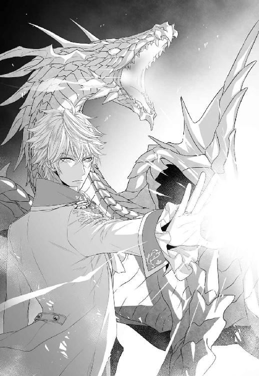

| 新米魔法使いは王子の求愛を望まない【SS付】【イラスト付】 (フェアリーキス) | |
| 白ヶ音雪 | |
| 株式会社ジュリアンパブリッシング (2016) | |
この物語はフィクションであり、実在の人物・団体・事件等とは、いっさい関係ありません。
イラスト・蔦森えん
プロローグ
ふわふわ、とワンピースの裾がはためいている。
薔薇の咲いた庭園の中を、小さな女の子が笑いながら駆けていた。
その後ろを、彼女より七つほど年上の少年が小走りに追いかけていく。
やがて遅れてやってきた少年に追いつかれ、女の子は背後から抱きしめるように捕まえられた。
きゃっきゃっと軽やかに笑う女の子を、少年はいとも軽々と抱き上げた。
「ミリエル、捕まえた」
少年のふんわりとした微笑は、女神に愛されたような美しさだった。
彼はそのままミリエルを花の絨毯の上に座らせる。そして、手にしていた何かを彼女の頭の上に載せた。
それは、シロツメクサでできた花冠だった。
「ほら、お姫様の証だよ」
「わたし、おひめさまなの？」
「うん、そう。ミリエルは、私の大事なお姫様だよ」
言って、少年は優しくミリエルのたんぽぽ色の頭を撫でる。
ミリエルは、はにかんだように笑うと、頭に載った冠に触れた。まるで、大事な宝物に触れるように、そっと。
そして、少年の頰にごく幼い口づけを落とした。
「ありがとう。アーネストも、わたしのダイジなおうじさまよ！ だから、これあげる」
見つけたばかりの四葉のクローバー。持っていると幸せが訪れると聞いたことのあるそれを、惜しげもなくアーネストに手渡す。
「アーネストに幸せがやってきますように！」
アーネストはそれをしばらくじっと見た後、真正面からミリエルの瞳を見据えた。
「......ミリエルは、私のことが好きかい？」
「うん！ わたし、アーネストのことだーいすき！ ずっといっしょにいたい！」
小さなミリエルの無邪気な願いに、アーネストは溶けるような柔らかな笑みを見せる。ミリエルのことが、可愛くて可愛くて堪らないという笑みだった。
「私も、ミリエルとずっと一緒にいたいよ」
「ほんとうに!?」
「本当に」
アーネストの答えを受け、ミリエルはぱっと表情を明るくする。そしてしばらくもじもじとしたかと思えば、やがて頰を染めながら上目遣いに彼のことを見上げた。
そして、勇気を振り絞ったかのように、おずおずとこんなことを口にする。
「それじゃ、わたしが大きくなったら、アーネストのおよめさんにしてくれる......？」
アーネストは、一瞬驚いたように目を瞬いた。しかしすぐに口元を綻ばせると、幼い願いに真摯に応える。
「もちろんだよ。ミリエルが大きくなったら、私のお嫁さんにしてあげる。ずっとずっと、守ってあげるからね」
「......ヤクソク？」
「約束だよ。ほら、指を出して」
小指を出すアーネストに倣い、ミリエルも細く小さな小指を差し出す。
やがて二人の小指は触れ合い、誓いの言葉を決して違えないようにと、強く結ばれるのだった。
一章 思いがけない始まり
鬱蒼と茂った森の奥に、蔦のはびこるあばら屋があった。
扉には表札が掛かっていたが、普通の者の目にはそれはただの板きれと映ったことだろう。
しかし魔法文字をかじったことのある者であれば、『月光庵』という薄ぼけた文字を見つけることができるに違いない。
その、月光庵の二階の一室に、カンカンガンガン、とものすごい音が響いてきた。
「ミリエル！ まだ寝てるのかい！」
音と共に響いてきた師匠のビアンカの声に、小さな頃の懐かしい夢を見ていたミリエルは、寝台から転げ落ちそうになった。
慌てて壁に掛けられた時計を見れば、もうとっくに朝食の時間を過ぎている。
「いけない！ 寝過ごしちゃった！ ......今行きまーす！」
階下に向かって一声叫んだミリエルは、寝台から飛び下りて朝の支度を始めた。
歯磨きをして、顔を洗ったら、ワンピースを着て、その上に袖のない短い外套の形をした、白い魔導衣を羽織る。
首元のリボンを綺麗に結ぶと、鏡の前に移動だ。
絡まったたんぽぽ色の髪をブラシで丁寧に解して、二つに結ぶ。
まだ木に絡まったまま眠っている使い魔を起こすことも忘れない。
「アーニー起きて！」
ミリエルの怒鳴り声に、白い蛇のような使い魔はむにゃむにゃと呟いた。
〈ねずみ......カエル......〉
どうやら美味しいごはんの夢でも見ているようである。
「起きなさいアーニー!! 急がないと朝食抜きになるわよ！」
もう一度、今度は至近距離で怒鳴りつける。するとアーニーは、とろんと瞼を開けながらのんびりと口を開いた。
〈おはようミリエル〉
「呑気に挨拶してる場合じゃないのよ！ お師さまがカンカンなの！」
いつも通りアーニーを腕に絡ませたミリエルは、魔導衣の裾を翻しながらバタバタと階段を下りていった。
階段のすぐ下に、腕組みをしたビアンカが岩のように佇んで待っている。
年の頃は、九十歳くらいの老婆──それも、男のように大柄な──である。
ワシの鼻のように曲がったかぎ鼻。歯のほとんど生えていない口、そして三日月型の目は、地獄の番人でもあるかのような不気味な雰囲気を醸し出している。
しかもそれだけではない。
彼女の顔は、地肌の色が分からないほど真っ白に塗りたくられ、唇は血よりも真っ赤な赤で彩られていた。
子供が見れば、間違いなく泣く。
実際に、弟子入りした際ミリエルも泣いた。
「見習いの身で遅刻とは、いい度胸じゃないか」
「す、すみませんお師さま......」
しおしおと謝ると、ビアンカはため息を吐いて腕組みを解いた。
「まあいい。とっとと座りな」
怒りの拳骨を落とされなかったことに内心で安堵しながら、ミリエルは席についた。
テーブルの上には、料理が所狭しと並べられている。
季節の野菜を使ったサラダや、じっくりと炒めた玉ねぎのスープ。そしてメインディッシュはエビのグラタンである。
「わあ！ どうしたんですか、お師さま！ わたしの大好物ばっかりじゃないですか」
つい今しがたまで怒られていたことも忘れてはしゃいだ声を出すと、ビアンカが呆れたように眉を下げた。
「何言ってるんだい、今日はアンタの十八歳の誕生日じゃないか」
「えっ？」
ミリエルの唇から、素っ頓狂な声が上がる。すっかり忘れていたのである。
するとビアンカは、ますます呆れたような顔をしてぶつぶつと呟いた。
「自分の誕生日も忘れてたのかい、まったく、アンタって子は、ようやく成人を迎えたってのに相変わらずどこか抜けてるというか......」
そう、十八歳といえば、このヴェルシアン王国では成人。立派な大人の仲間入りである。
「アンタも、恋人でもできりゃ少しは大人っぽくなるのかねぇ」
ふう、とビアンカがため息を吐く。
この年齢になったにもかかわらず、ミリエルは未だに恋人がいた試しがない。つまり、キスすら未経験である。そのため、同年代の少女たちからは、しょっちゅう「お子様」と馬鹿にされている。
「ま、まあまあお師さま！ ほら、せっかくのグラタンが冷えちゃいますよ！」
止めないとどこまでも小言が続きそうだったので、途中で遮り、スプーンを手にした。
そんな弟子の姿に、ビアンカはやれやれといった風情だ。ミリエルから視線を逸らすと、今度はアーニーに目をやった。
「アンタには大好物のカエルを用意しといたよ、お食べ」
〈アーニー、カエル食べる！〉
嬉しそうに言ったアーニーは、カエルの入れられた籠の中にシュルシュルと入っていく。
ゲコ、ゲコ、というカエルの鳴き声が徐々に小さくなっていく。
籠から逃げ出したカエルをアーニーがパクリと捕食したのを見て、ミリエルは眉間に皺を寄せて、唇を歪めた。
蛇の餌がカエルだと知っていても、未だにこの光景には慣れない。
実際には蛇ではなくドラゴンなのだが、見た目が似たようなものだから主食も同じもので大丈夫だろうと与えてみたところ、気に入ってくれたのだ。
ミリエルとしてはできれば、花の蜜や果物などを食べてほしかったのだが、こればかりは好みだから仕方がない。
できるだけアーニーのほうを見ないようにし、ビアンカと二人で女神ヴェルシアンへと感謝の祈りを捧げてから食事に入った。
「お誕生日、覚えていてくださって嬉しいです」
「忘れてるアンタのほうがどうかと思うがね」
ふん、とビアンカが鼻を鳴らすが、六年の付き合いである。それが照れ隠しであるということを、ミリエルは良く分かっている。
ビアンカは修行に関しては厳しいけれど、基本的に弟子思いのいい師匠だ。毎年、誕生日にはこうして、ミリエルの好物を作ってくれる。
グラタンをぱくりと頰張り、ミリエルは口の端を緩めた。
バターの風味と、とろけるチーズのまろやかさが絶妙な味わいだ。
「相変わらず美味しい！ お師さまのお料理は最高です！」
「また、アンタは調子のいい子だね」
そんなことを言いつつも、ビアンカも満更でもなさそうな表情である。
「お師さまは、今日は確か魔導機関のほうで会議でしたよね」
「ああ、そうだよ。今度の認定試験のための話し合いだから、少し長引くだろうね。昼過ぎまで帰らないから、昼食は一人でとっておきな」
朝食を食べながら、こんな風にその日の仕事について打ち合わせをするのが二人の日課である。
「アンタのほうは、魔法薬作りの練習だ。今年こそ受かるように頑張らないとね」
「は、はい！」
表情を引き締めながら、返事をする。
ミリエルは見習い魔導士だ。
通常、灰銀の魔導士こと大魔導士の下で修行を積んだ見習いは、六～八年の修行期間を経て、正規魔導士となるための認定試験を受ける。
試験は筆記の他に実技も行われ、成績が悪ければ当然落とされる。そうなれば、翌年の認定試験まで独り立ちはお預けだ。
一方合格すれば、王立魔導機関の魔導士名簿に登録されることとなる。
ミリエルの初試験は十七歳の時。つまり去年のことであるが、惜しくも不合格だった。
しかし、今年は成人を迎えたということもあり、師匠を安心させるためにも、合格しておきたいところである。
「それじゃ、戸締まりはしっかりとね。近頃、妙な呪いが横行してるようだから、気をつけるように」
「妙な呪い？」
「ああ、そうだよ。ある日突然、顔に大きな赤い痣が出るそうだ。若い娘ばかりを狙っているらしい」
「へえ......それは怖いですね。早く犯人が捕まると良いですけど」
「魔導機関では既に調査に乗り出してるが、犯人が見つかるまではアンタも充分注意するようにね」
「はい、分かりました！ お師さま、いってらっしゃい」
会議に出かけるビアンカを見送ったミリエルは、裏の倉庫へ向かった。魔法薬に必要な材料は、全て倉庫にしまってあるのだ。それを取り出し、レシピに書いてある分量通りに調合していく。
単純なようだが、少しの狂いでまったく役に立たないものとなってしまうから、魔法薬は奥が深い。
「そうだ、せっかくだからちょっと難しいのを練習してみようかな！」
〈難しいの？〉
「そうよアーニー！ わたしだって独り立ちする年齢なんだし、たまにはお師さまを驚かせてみたいのよ」
材料を吟味しながら、ミリエルは弾む声で言った。
試験の課題はその場で発表となるから、それまでにできるだけ多くの薬を作れるようになっていたほうがいい。自分の技術を上げるためにも、たまには難易度の高い薬作りに挑戦してみようと思う。
「そうだ。媚薬なんてどうかしら？」
媚薬は作るのが難しいと言われている薬で、一般の薬局でも高値で取引されている。
そんな難しい薬を作れるようになれれば、きっとビアンカも褒めてくれるはず。
軽い思いつきで、ミリエルは媚薬を作ることに決めた。
まずは薔薇の蜂蜜。それから月光草の雫。
シナモンに、四つ葉のクローバー。
菫の花、黄金蝶の鱗粉に、灰銀の聖杯に三日三晩浸した赤ワイン。そして最後に、涙を一滴──。
それらをぐつぐつ煮詰めながら、ミリエルは今朝の夢のことを思い出す。
なんだか懐かしい夢を見てしまった。ミリエルの中の、記憶の宝箱に大事にしまい込んでいたはずの大切な思い出。
──アーネスト。わたしの大事な王子さま。
夢の中の彼の微笑みを思い出し、胸の中が甘い痛みに疼く。
「......どうして今更あんな夢見ちゃったのかな......」
〈ミリエル、煮詰めすぎてる！〉
「えっ!? ああっ」
アーニーの声に現実に引き戻されれば、既定の半分以下の量まで煮詰まっていた。
慌てて火からおろし、耐熱性の瓶に移して貯蔵庫に入れる。
魔法書に目を通せば、この媚薬は、一般には知られていないが、煮詰めすぎると即効性の惚れ薬になると記してある。
惚れ薬は、一般的には禁薬と言われている類のもので、正規の魔導士しか作ることを認められていない、特別な薬である。
それも、使用するためのものではない。
悪用された時のために、知識だけはつけておくように、との考えから調合が許可されているものだ。毒薬の作り方を知らねば、解毒剤の作り方も分からない、ということなのだろう。
「噓でしょ......。失敗しちゃった......」
意図したことでないとはいえ、まさか禁薬を作ってしまうなんて。
「お師さまに怒られちゃう......」
頭を抱えたその瞬間、玄関のほうで呼び鈴が鳴った。
「お師さま？」
にしては早すぎる。聞いていた話では、昼過ぎまでビアンカは帰ってこないはずだ。
誰だろうと警戒しつつ小さな覗き穴から外を覗き込む。そこに立っていた人物の姿に、ミリエルの心臓が一つ、大きな鼓動を打った。
金と銀とが入り交じった不思議な色の髪。エメラルド色の美しい瞳の青年──。
慌てて扉を開け、ミリエルは彼の名を呼んだ。
「アーネストさま!?」
この国──ヴェルシアン王国の、次代の王。王太子アーネストだった。
彼は軽く片手を上げて、微笑する。
「やあ、ミリエル」
この夏の暑さにも負けない爽やかな微笑みだった。
それを眩しい、と思ったのは、彼の明るい髪が弾く陽光の眩しさだけが理由ではないだろう。
「十八歳の誕生日おめでとう。君の好きな、赤い薔薇だよ」
差し出された薔薇の花束に、ミリエルは萌黄色の目を大きく見開く。
「え......あ、ありがとうございます」
受け取りながら、ミリエルは微かに頰を赤らめた。
この暑い日に、わざわざ花束を渡すためだけに、こんな森の奥まで来てくれたことが、この上なく嬉しかった。
「暑い中、わざわざすみません......」
「謝らないで。私が、直接手渡したかったんだ。君は私の大切なお姫様だからね」
『大切なお姫様』
その言葉をもう昔のように素直に嬉しがることはできず、ミリエルはぎゅっと唇を嚙んだ。
小さな時からずっと変わらない、二人の間だけの呼び名。
けれど幼い時は無邪気に受け止められていたその言葉は、今はミリエルの胸に甘やかなときめきと共に、小さくはない痛みをもたらす。
アーネスト──ミリエルの幼馴染にして、初恋の相手。そして、失恋の痛みをミリエルに刻みつけた人。
──本気にしちゃだめよ、ミリエル。アーネストさまは、誰にだってこういうことを言うんだから。
女性の噂の絶えない、色男。誰もがアーネストのことをそう呼んでいる。
いつも美しい貴婦人たちに囲まれ、渡り鳥のように次から次へと美女の間を渡り歩く王子様と。
いつ頃からだろうか。彼がそう呼ばれ始めたのは。
恐らく、ミリエルが身分差を気にして距離を置くようになってからのことだ。
しばらく会わなくなった間もそんな噂だけを耳にし、そのたびに嫉妬して嫌な気持ちになった。
今だってあまりいい気持ちはしないけれど、もう諦めた。
──だってわたしは平民で、アーネストさまは王太子さまなんだもの......。
今でもアーネストはこうして、ミリエルのことを妹のように気にかけてくれている。それで充分ではないかと。
沈んだ心を誤魔化すように、ミリエルはあえて平静を装いながら明るい声を上げた。
「もう。何度も申し上げてますけど、いくらわたしたちが乳兄弟だからって、王太子さまが気軽にこんなところに来ちゃだめですって」
「大丈夫だよ、執務は済ませてきたから」
心配するミリエルになんてことないように首を横に振ると、アーネストは安心させるように頭を撫でてくる。
まるで昔に戻ったように。
それが今朝の夢の情景を再びミリエルの頭によみがえらせ、胸を切なくさせた。
幼い頃のように甘えたくなるのを堪えながら、ミリエルは彼の手から逃れるように足を一歩引く。
「そういう問題じゃなくって......。とにかく中に入ってください。暑かったでしょう」
アーネストの額には、薄らと汗が浮かんでいる。
ミリエルはアーネストを手招きして、庵の中へと迎え入れた。
「散らかっててすみません、ちょっと今まで課題をしていたもので」
つい今しがたまで魔法薬作りに勤しんでいたせいで、作業場はだいぶ散らかっている。
受け取ったばかりの花束を手にしたまま、ミリエルは開きっぱなしの魔法書などを机の脇に避けた。
「お花ありがとうございます。生けてきますから、その辺りの椅子にかけててください。あ、お茶淹れます？」
「あるなら冷たい飲み物が良いな」
「それなら、貯蔵庫の中からお好きなのをどうぞ。アーネストさまの大好きなハーブティーも入ってますよ」
アーネストをその場に残したミリエルは、鼻歌交じりに棚へ向かい、花瓶を取り出した。
水を張り、貰ったばかりの花を生け始める。
真っ赤な薔薇の花束は、きらきらと虹色の光を放っていた。一ヶ月枯れない、魔法の薔薇だ。
市場にもあまり出回っておらず、大変珍しい品種である。
ミリエルの大好きな花。
先ほどはアーネストがここに来ることを窘めたけれど、本当は、わざわざ持ってきてくれたことが嬉しかった。
すっと香りを吸い込むと、蜂蜜のような匂いが胸いっぱいに広がる。甘くて美味しそうな香りだ。
そうして最後の一本の茎をハサミでぱちりと切ったところで、ハタと気づいた。
貯蔵庫。
貯蔵庫......。
──貯蔵庫の中身!!
「アーネストさま、飲むなら透明の瓶以外のを......っ」
血相を変えてアーネストの許へ駆けつけたミリエルだったが、時既に遅し。
アーネストは既に貯蔵庫から透明の瓶を取り出し、その中身を全て飲み干してしまっていた。
先ほどミリエルが完成させた、惚れ薬を。
血の気が引く音が存在するとすれば、それはきっと潮騒の音に似ていることだろう。
実際に今ミリエルの耳の奥では、寄せては返す波の音が響いていた。
何度も、何度も。
「あ、あの......アーネストさま」
恐る恐る声をかける。
ゆっくりと、アーネストの顔がミリエルに向いた。
「うん？」
「す、すみません！ その......実は試験のために魔法薬作りの練習をしていて、それ、惚れ薬なんです......っ！ 本当にごめんなさい、大丈夫ですか!?」
おろおろと不格好に慌てるミリエルの言葉に、しばしアーネストは無言のまま、自分が空にしたばかりの瓶を眺めていた。
だがやがてその柔らかな髪をかき上げ、穏やかに微笑む。そして。
「──君は私の女神だ」
「効いてる!!」
思わず叫んだ。
飲んだばかりだというのにこの即効性。国が惚れ薬の製造を基本的に禁じている理由が良く分かる。なんて恐ろしい。
「ああ、ミリエル。君はなんて可愛い子なんだ」
滴るような色香に彩られたアーネストの翠玉の瞳が、ミリエルに向けられた。
とろけるような甘さを含んだ視線である。
思わず心臓を跳ね上げながらも、それを顔に出すような愚行を犯すことはなく、ミリエルはどうどうと馬を宥めるような仕草で腕を振った。
「あ、あの。アーネストさま、落ち着いてください。それは薬の効果ですからね」
「君という名の惚れ薬かい？」
「何くさいこと言ってるんですか！ アーネストさま、しっかりしてください！ 正気に戻って!!」
「こんなに可愛い君を前に、正気でなんていられないよ」
「......ちょっ」
大股に足を踏み出して一気に距離を詰めた彼は、作業台の上にミリエルを押し倒した。
「何するんですか......っ!?」
「ああ、ミリエル。君は本当に可愛い。可愛くて可愛くて、堪らない。......大好きだよ」
思いもかけず真剣な瞳が、ミリエルの萌黄色の目を捉える。
「ずっと、君が好きだった。......昔からずっと」
「っ」
低音で囁かれる告白はまるで彼の本心から出た言葉のようで、ミリエルの心臓を跳ねさせる。
──この「大好き」って言葉は、惚れ薬の効果なんだから。アーネストさまの本心じゃないんだから。
自分にそう言い聞かせながらも、胸が甘く疼くのは止められない。
──まさか本当に？ ううん、そんなはずない、期待しちゃだめよミリエル。
そんな自問自答を繰り返している間にも、アーネストは距離を詰めてくる。
「んぅっ......!?」
いきなり唇に柔らかいものを押し当てられ、ミリエルは大きく目を見開いた。目の前には長い睫毛があり、さらさら揺れる金銀の髪が頰や額をくすぐっている。
気づきたくなかったが、口づけされている。アーネストに。
初めての、キス。
それも、初恋の相手との。
これがキス。
なんて甘くて、とろけるような感触なのだろう。
ミリエルは、恍惚と目を細めた。
胸の内側から羞恥と歓喜が同時に湧き起こり、このまま身を任せてしまいたいとさえ思う。けれど、辛うじて残っていた理性が既のところでミリエルに歯止めをかけた。
「ん......、んんっ」
どんどん、と広い胸板を叩いたが、びくともしない。服を着ていると華奢に見えるアーネストだが、やはり護身術で鍛えた体は伊達ではない。
「アーネ、っん」
ミリエルの抵抗など、アーネストは意にも解さなかった。
快楽を引き出すような舌の動きに、腰から下が溶けてしまいそうな錯覚に陥る。
熱くて、甘くて、うっとりとしてしまいそう。
まるで恋人同士が交わすようなそれに頭の芯が痺れ始めた頃、アーネストが不穏な言葉を発した。
「ミリエル......ああ、食べてしまいたい」
「んんんん!?」
性的な意味ですか!?
喉の奥でくぐもった声を上げている間にも、アーネストの手がワンピースの裾から潜り込んでくる。さわさわ、と太腿を撫でられた。
「君ももう今日で成人なんだから、こういうことをするのに遠慮はいらないよね？」
「んんんんん!?」
こういうことって性的なことですか⁉
猛禽のような目が、ぎらりと光ってミリエルを見下ろす。
恐らく、たぶん......だけれど、こういうのを「欲情している」というのだろう。
──間違いない。
噓でしょ!? わたしこのままアーネストさまに食べられちゃうの!?
これが、アーネスト自身の意思だというのならいい。
けれどこれは、惚れ薬の効果がもたらした結果なのだ。そんなもののせいで、なし崩しに初めてを終えるなんて、絶対に嫌だ......！
「やめてくださいってば！」
「やめないよ」
〈アーネスト、やめない。やめない〉
「アーニー、繰り返してないで助けて!!」
〈助けない、アーニー助けない〉
「こんな時だけ否定するのやめなさいよ!! この役立たず!!」
木に巻きついてのんびりとしている使い魔にそう叫んだのと同時に、玄関の扉が大きな音を立てて開いた。
あ、鍵かけ忘れてた。なんて、この状況に似つかわしくないことを考えてしまうあたり、まだ少しは余裕があったのかもしれない。
押さえつける手の力が緩んだ隙にミリエルは慌てて身を起こし、乱れたスカートの裾を整えた。
「お、お師さまお帰りなさい......！」
なんとか誤魔化そうと笑ってみせたものの、この状況で何を誤魔化すことができただろうか。
服の乱れたミリエルと、それに圧しかかるアーネスト。
それらの光景を一瞥したビアンカのこめかみに、ぴきりと青筋が浮いた。
「アンタたち！ アタシの庵で何やってるんだい!!」
世にも恐ろしげな声が、部屋中の窓という窓をビリビリと震わせた。
「なっ、何も!!」
「あえて言うならナニを」
似ているようでまったく違う二人の答えが重なり、脳天に問答無用の鉄槌が下された。
すなわち、拳骨が──。
地獄の瘴気が渦巻くような空気の中、ビアンカが腕組みをして、この国の王太子と自身の弟子を睨みつけている。
「で？」
真っ赤な唇からたった一言。
しかしミリエルにとっては、どんなお説教よりも怖い一言であった。
まだ痛む頭をすりすりと撫でながら、不自然な笑いを浮かべる。人間、本当に恐怖した時は笑ってしまうものだ。
「話せば長くなるのですが......」
「十秒で話しな」
「アーネストさまが間違って惚れ薬を飲んでしまいました」
ビアンカが再び拳を固めるのを見て、ミリエルはごく簡潔に、起こったことを話した。
「何やってんだいこの馬鹿弟子！」
ゴツン、と脳天に拳骨が降ってくる。容赦ない一撃......いや、二撃目である。
せっかく答えたのにあんまりだ。頭をさするミリエルの目尻にきらりと涙が光る。
「作り終えた薬は、すぐにラベルを貼るようにっていつも教えてるだろうが！ それがよりにもよって、王太子が間違って飲んじまっただと？ だからアンタはいつまで経っても殻付きの半人前なんだよ！ しかも、アタシになんの断りもなく禁薬を作るなんて、アンタにゃ百年早いよ、このひよっこ」
「だってお師さま！」
「だってもさってもあるかい!!」
「半人前の君も素敵だよ、愛しいミリエル」
すかさずアーネストが口を挟む。話がこじれるから邪魔しないでほしい。
「アーネストさまは黙ってて！」
〈黙っててアーネスト〉
「アーニーも黙ってて!!」
反芻するアーニーを黙らせ、べたべたとひっついてくるアーネストの頰を手で押しのけつつ、ミリエルはご機嫌伺いをするように愛想笑いを浮かべ、ビアンカを見上げた。
「あのうお師さま、それでわたしはどうすればいいでしょうか......」
「どうって？」
「えっと、このままじゃまずいですよね。惚れ薬の効果って確か......」
「一ヶ月だねぇ」
一ヶ月、と口の中で繰り返す。
一ヶ月ずっとこのままアーネストにベタベタされることを考えて、ミリエルは複雑な気持ちになった。
嫌、というのとは違うけれど、惚れ薬の効果によって好意を寄せられても、それは本物ではない。
割り切ってその状況を楽しむことができればいいのだろうけれど、ミリエルはそこまで器用な性格をしていなかった。
一ヶ月もの間、アーネストに「好きだ」と囁かれ続けて、いざ惚れ薬の効果が切れてしまったら？
また、単なる妹扱いに逆戻りだ。その時のことを考えると、胸が苦しくなってしまう。
「まあ、アンタも大変な相手に薬を飲まれちまったね。せいぜい、妬み嫉みには気をつけることだ」
「妬み嫉み......」
口にしてからぞっとした。
王太子という身分に加え、この容姿である。アーネストは、女性からの人気が非常に高い。
彼に片想いをする大勢の女性たちのことを考えると、とても一ヶ月を無事で過ごせる気がしなかった。
「どうにかしてください、助けてお師さま！ 解毒剤の作り方、知ってるんでしょう!?」
「解毒の仕方は知ってるが、魔導士の信条は？」
「うっ......。〝自らの招いた結果は自らで責任をとること〟です......」
「だったら、国王への事情説明はしといてやるから、後は全部自分でやりな！ アタシゃ馬鹿弟子の不始末の尻拭いをするつもりはないよ!!」
〈馬鹿弟子！ ミリエル馬鹿弟子!!〉
「うるさい、アーニー！」
甲高い声で叫ぶ使い魔に、ミリエルは鋭い視線を向ける。ご主人様に向かって「馬鹿」とは何事か。
「解決する方法を自分で探すこと！ アンタも、もうそろそろ独り立ちする年齢なんだ。いつまでも頼られてばっかりじゃ、アタシゃ安心してあの世にも行けやしないよ」
「やだお師さまったら、殺しても死ななさそうなのに何言っているんですか」
「......」
「あっ、待って待って、今の取り消──」
ゴン！ と鈍い音が響く。
口は禍の元とは、良く言ったものだ。
結局ミリエルはその日、三度もビアンカの拳骨を受け止める羽目になってしまった。
「......で、問題はどうするかよね」
隙あらば抱きつこう組み敷こうとするアーネストを、強引に王宮に送り届けたミリエルは、ひとまず自室に戻った。机の上で腕組みをしながら考え込む。
あの惚れ薬が、ここまでの効果を発揮するとは正直思っていなかった。多少、好意を抱く程度のことだろうと思っていたのだ。
なのにまさかアーネストが、突然唇を奪ってあんな風に襲いかかるだなんて。
情熱的なキス。
奪うようでいて、快楽を与えるキス......。
ミリエルは指先で、自分の唇をそっとなぞる。アーネストの唇の柔らかさを思い出し、頰が火照った。
今更ながら、羞恥がこみあげてくる。
「あの女ったらし王子......いきなり舌入れてくるのはナシでしょ......」
初めてのキスだったのに、色々と衝撃的すぎた。
......その件についてはとりあえず忘れることにして。
「うーん、解毒剤......うーん......」
そもそも禁じられている薬なだけに、その辺りにポンと売っているはずもない。
ビアンカは解毒剤の作り方を知っていると言ったが、教えてくれるつもりは露ほどもないらしい。
だとすれば、自分でなんとかするしかあるまい。
「......お師さまのケチー」
「何か言ったかい」
「ぎゃっ!!」
いきなり背後から聞こえたビアンカの声に、ミリエルはカエルの潰されたような悲鳴を上げた。
いつの間にか扉の傍に、ビアンカが立っている。
夜の廊下の薄暗さと相まって、蠟燭に照らされた厚化粧顔の薄気味悪さが際立っている。
「お、お、お師さま！ びっくりするじゃないですか！ 扉くらい叩いてくださいよっ」
「なんだい、お化けでも見たような顔をして。失礼な子だねぇ」
そう言ったビアンカは、手に持っていた鍵をミリエルに渡した。
「ほら、今日の仕事だ。下の書庫の掃除だよ。アタシは出かけるが、昨日も言った通り気をつけて留守番するんだよ」
「掃除って、今はそんな場合じゃ......！」
「何言ってんだい！ 惚れ薬の件があるからって、日頃の仕事をおろそかにするのは許さないよ！」
「でもっ」
「反論は聞かないよ。書庫には、薬草や魔法薬に使われる素材の載ってる本もたくさんある。アタシが帰ってくるまでに、綺麗に整理しとくんだよ！」
薬草や魔法薬に使われる素材の本？
そう考えたところで師の言いたいことに気づき、ミリエルは思わず感激の声を上げた。
「お師さま......！」
「ほら、何ノロノロしてるんだい、とっととお行き！」
「はい！ ありがとうございます！」
叱咤とも激励とも取れる声に送り出され、弾む足取りで階下へと下りていく。
厳しいところもあるが、ビアンカは基本的に弟子思いだ。でなければ、六年も彼女の許で学ぶ気にはならなかっただろう。
「さりげなく助言をくれるなんて、お師さまったら粋なんだから！ アーニーもそう思うでしょ？」
〈思うよミリエル〉
「顔は怖いけど最高のお師さまよね！」
一階へたどり着いたミリエルは、まっすぐ台所へ向かった。月光庵の書庫は、台所の地下にあるのだ。
棚から燭台を取り出すと、アーニーの口元に近づける。彼が大口を開けた瞬間、口からぼっと火を噴いた。蠟燭に火が灯り、ちらちらと揺れる。
魔物についての知識がない者からすれば単なる白蛇に見えるかもしれないが、実はドラゴンの仲間である。
竜目火竜種貴白竜科──『ウィーバー』と呼ばれる種族だ。
攻撃特化の黒魔導士が見ればこぞって欲するほどの希少種らしい。が、ミリエル自身は白魔導士なので、今一つアーニーの力を上手く活用できていない。
せいぜい、今のように火種として使う程度だ。
知り合いの嫌みな伯爵令嬢からは、常々宝の持ち腐れだと言われている。
それでもミリエルにとってアーニーは大事な存在だから、手放す気はない。
「ありがと、アーニー」
〈どういたしましてミリエル〉
ミリエルの感謝に、アーニーが得意げに赤い舌を出して答えた。
灯りがついても足元は尚薄暗く、地獄の亡者たちの呻き声が聞こえてきそうな不気味さが漂っている。
何度も足を踏み入れた場所であるにもかかわらず、ミリエルがこの場所を苦手なのはそういう点においてだ。
灯火を頼りに、ミリエルは地下への階段へと足を踏み出した。踏み外したらただでは済まないだろうから、一歩一歩慎重に。
カツン、カツンと、靴の底が階段を打つ硬質な音が響く。
それはミリエルを追いかけてくるかのように木霊し、誰かが後ろからついてきているような、気味の悪い余韻を残す。
階段も残り少なくなると、やがて書庫への扉が見えてきた。
ミリエルが前に立つと、床に仕掛けておいた魔法が作動して勝手に扉が開く仕組みとなっている。
重く軋む音を立てながら扉が開くと、室内に備えつけてある燭台に勝手に火が灯った。
明るくなった視界に広がったのは、積まれた本や紙の山。それから、珍しい植物の瓶詰めなど、魔法の研究に役立つ資料だ。
建前として掃除を言いつけられたものの、さすがに一週間に一度は掃除をしているだけあり、塵も埃も見当たらない。
普通地下室といえばカビの臭いくらいしそうなものだが、月光庵の書庫からはむしろ、薬草のような清潔感のある香りが漂ってくるばかりであった。
手入れが行き届いているのは、ビアンカが清潔好きだからだ。
彼女は研究に没頭すると、この部屋に十日近くもこもることがある。不潔な部屋に寝泊まりなんてごめんだと言っているのを、何度か耳にしたことがある。
「さて、と」
ミリエルは書庫の前で腕組みをした。
書庫に置いてある書物は、内容ごとに区分けしてある。呪いを扱ったもの、解毒剤を扱ったもの、回復魔法について、薬草の種類──。
ありとあらゆる種類の膨大な書物が揃っているのだ。
「この中から探すのは一苦労ね......。一つ一つも分厚いし......」
目を通すべきは、主に解毒剤と薬草の書だろうか。それだけでも数十冊に及び、今から目眩がしそうだ。
「よーし、頑張ろう」
〈頑張れミリエル！〉
腕まくりをしたミリエルは、机の上に積み上げた書物一つ一つに、くまなく目を通していった。
──それから数時間後。
「ない！ ない！ ない!!」
腹の虫が鳴き始めたから、随分長いこと、この書庫にこもっていたことになる。
それなのに、少しも手掛かりが摑めないのだ。
「解毒剤どころか、惚れ薬を扱ってる本もほとんどないじゃない！ どうしてどこにも載ってないの!? ......分かっている。禁薬だからよね！ ......ええ、分かってたわよ！」
〈ミリエル、落ち着いて〉
「落ち着いてなんかいられないわよ！ このままじゃ全部読み終わるのに、一ヶ月近くかかっちゃうわ！」
〈そうだねミリエル〉
「あああああ......」
ミリエルは再び頭を机に打ちつけ始めた。
一ヶ月。
つまり、ちょうど惚れ薬の効果が切れるのと同じくらいの期間である。
この状況を聞けば、人はこう思うかもしれない。
「美貌の王太子に好かれて、何が不満なの？ ただ一ヶ月我慢すればいいだけじゃない」
と。
しかし、ことはそう単純ではない。
アーネストは今現在、二十五歳。結婚適齢期も適齢期、花盛りのお年頃だ。
そして、三週間後に開催される彼の二十五歳の誕生日を祝う夜会では、王太子妃候補を決めるとも言われている。
貴族の令嬢たちを始めとして、名家の令嬢、果ては一介の使用人。
あらゆる女性たちがなんとか彼の目に留まりたいと思っていた。そんな中開かれる夜会は、もはや戦争といっても過言ではない。
広間は戦場となり、アーネストの心を射止めたい女たちの容赦なき戦いが繰り広げられるのだ。
蹴落とし、蹴落とされ、裏切り、裏切られ......。
ミリエルはそんな恐ろしい渦の中に身を投じるつもりはない。可及的速やかに、この状態をなんとかしなければならないのだ。
かといって、解毒剤の作り方を探すことに構ってばかりもいられない。
ミリエルは大魔導士預かりの身なのだ。衣食住を保証してもらい、魔導の修行をつけてもらう代わりに、師匠の身の回りの世話などもしなければならない。
時間の自由はあまりない。なんとか暇を見つけて、解毒剤の製造方法が分かればいいけれど、これはなかなかに難航しそうだった。
「ああー......なんでこんなことになっちゃったかなぁ......」
力ない呟きが零れたが、その答えはミリエル自身が一番良く分かっていた。
全部自分のせいである。
◆
深夜まで解毒剤について調べていたせいで、翌日の目覚めは遅かった。
普段であれば、ビアンカが鍋をお玉で豪快に叩きながら起こしに来ていたことだろう。昨日のように。
今日が休みで本当に良かった。
「お休み万歳......」
まだ夢見心地の声でそれだけを呟く。
休日の恩恵に感謝しつつ寝台の上でごろんと寝返りを打ったミリエルは、横に何か大きなぬくもりを感じ、ぱっちりと目を開けた。
すぐ目の前に、翠玉のような緑色の瞳があった。
「おはよう、ミリエル。ごはんにする？ 着替えにする？ それとも......私？」
「キャーッ!!」
甲高い悲鳴が上がる。
「ア、ア、アーネストさま!? どうしてここにいらっしゃるんですかっ!?」
昨日、確かに王宮にある彼の部屋まで送り届けたはずなのに。
寝起きとも思えぬ俊敏な動作で寝台から飛び降りたミリエルは、ざっと自分の体に目を落とした。
寝間着よし、下着よし、ついでに噂に聞く下腹部の痛みもなし。
さわさわと下腹部を確認するミリエルに、アーネストが起き上がりながら、初夏の風のように爽やかな微笑を向ける。
──なぜ上半身が裸なのか、本気で意味が分からない。
「あ、大丈夫心配しないで。ちょっと触っただけだから」
「ちょっと!?」
「眠っている君に最後までするなんてそこまで鬼畜な真似、私はしないよ」
「アーネストさま、ちょっとってどのくらい......あぁっ、首元になんか変な痣がついてる！ なんなんですかこれ！」
ミリエルの首元に、虫刺されのような赤い痕がばっちりついていた。
少し寝間着をずり下ろすと、白い胸元にもたくさん散っている。まるで何かの病気のようだ。
衝撃を受けるミリエルの耳に、使い魔の甲高い声が聞こえてくる。
〈アーネスト、キスした！ ミリエルにキスした！〉
「キッ......」
乙女の寝込みを襲った上に、首元だとか胸元にキスするだなんてあんまりではないか。
「というかアーニー！ 起きてたんなら助けてよ！」
まったく使えない使い魔である。
ぷりぷりと怒るミリエルとは正反対に、アーネストといったら飄々としたものだ。
「君が私のものだって証拠を付けておかないとね？」
「ア、アーネストさまのものなんかじゃありませんからね!?」
「大丈夫だよ、照れなくて」
「照れてません!!」
どこまで行っても言葉が通じない。
普段のアーネストはもう少しミリエルの話を聞いてくれていたはずだが、やはり薬で少し変になっているようだ。
幻覚作用のある月光草のせいか、それとも興奮作用のある黄金蝶の鱗粉のせいか。
「ああそうだミリエル、何か欲しいものはあるかい？」
「今なら、平穏な朝の目覚めが欲しいです」
半ば本気でそう言ったミリエルだったが、アーネストはまるで聞こえなかった風に話を続けた。
「誕生日の贈り物が花だけっていうのも味気なかったかなって後から反省したんだ。君が望むなら、気に入らない誰かの首にリボンを付けて贈ることだってできるよ」
「朝から怖い話するのやめてくれます!?」
ぞっとするような提案に、ミリエルは思わず耳を塞いだ。首が誕生日の贈り物だなんて、ただの嫌がらせでしかない。
しかしアーネストは心底意外そうに首を傾げた。
「気に入らなかった？ ......ああ、つまり私さえいればいいっていうことなんだね」
「よ、良くありません！ 自分に都合のいいように解釈するのはやめてください」
「君のその、冬の妖精のように冷たいところも素敵だよ」
「っ、そもそもアーネストさま、ご公務はどうされたんですか」
素敵、という言葉に我知らず頰が赤くなるのを感じながら、ミリエルは先ほどから気になっていたことを口にした。
アーネストは王太子だ。将来の国王としてやらなければならないことはたくさんある。勉学にも励まなければならない。そもそもこんな風にミリエルなんかに構っている暇はないはずだ。
すると彼は恍惚とした表情で、ミリエルの顔を真正面から覗き込んだ。緑の瞳が、ミリエルの萌黄色の瞳を絡めるように捉える。
「君と会うために、全て昨晩のうちに済ませておいたよ」
「昨晩のうちにって......！ アーネストさま、まさか徹夜したんですか!?」
「うん、そう」
「何やってるんですか！」
あっさりと言ってのけるアーネストの姿に、ミリエルは怒りの声を上げた。
良く見ればアーネストの目の下には薄らと隈が浮かんでおり、疲労していることは明らかだ。
彼の美貌はそれでも損なわれることなく、むしろ憂いを帯びた感じが普段と違ってまたいいものだが、そういう問題ではない。
「ちょっと、もう来てくださいアーネストさま！ 顔色も悪いじゃないですか」
寝台の上にいるアーネストを手招きすると、彼の顔はぱっと喜色に輝く。
「どうしたんだいミリエル、私をどこに連れていくつもりだい？ 二人だけの逃避行なら大歓迎だよ」
「何わくわくしてるんですか、あなたの部屋ですよ！」
「私の部屋で過ごしたいのなら、最初からそう言ってくれればいいのに。侍従に、とっておきの紅茶を用意させるよ」
「違いますってば！ 今からでもいいから部屋に戻ってお休みをとってください。もう、ただでさえお忙しいっていうのにこんな無理して......！」
やや強引にアーネストの腕を摑んで引っ張ったミリエルは、はらりと落ちた掛布の向こう側を見た瞬間、本日二度目の悲鳴を上げていた。
今度は先ほどよりやや長く、更に甲高い悲鳴を。
「下！ 下を穿いてください!! なんで全裸なんですかっ!?」
「ありのままの姿で君を感じたくて......」
「時と場合を考えてください!!」
両手で目を覆ったミリエルの目の前には、あろうことか何も身に着けていないアーネストの姿があった。
......見てしまった。嫁入り前なのにばっちりと。
「うぅ......もうソーセージ食べられない......」
そういう問題でもないのだが、今のミリエルは動揺のあまり、自分でも何を口走っているか分からない状態であった。
その後なんとかアーネストを着替えさせ、自身も寝間着から普段着のワンピースに着替えたミリエルは、食卓で新聞を読んでいたビアンカに声をかける。
「お師さま、ちょっとアーネストさまをお部屋まで送り届けてきます！」
「私は君の部屋でも構わないんだよ」
「わたしの部屋にいたら確実に眠らないでしょう！」
ぴしゃりとアーネストの言葉を切り捨てたミリエルは、そのまま大股でずんずんと魔法陣を目指した。
主の外出の気配を感じ取り、木に絡まって遊んでいたアーニーが、ニョロニョロと地面を這いながらついてくる。
一昔前であれば箒で移動したところであろうが、二十年前に空での衝突事故が多発して以来、特例を除いて箒での飛行は禁じられている。
そのため、現在の主な移動手段は転移魔法陣か徒歩ということになる。
この転移魔法陣というのが非常に便利なもので、目的地の名称を口にすれば、そこまで一瞬で運んでくれるのだ。もちろん犯罪などを防ぐため、特別な通行証等がなければ利用できない場所もある。
そんな便利な魔法陣があるのに、あえて徒歩を選ぶのは余程の物好きか、運動不足の者だろう。
もちろんミリエルの移動はもっぱら魔法陣だ。
そうして薄青い光を放つ輪の中に足を踏み入れた瞬間。
「ミリエル、君にキスしたい」
人目がないのを良いことに、アーネストが抱きつこうとしてきた。
「今すぐキスしたい。君の甘い唇を味わいたいんだ......」
〈分かったわ、キスしてアーネスト......〉
これはミリエルではない。アーニーの声だ。
勝手なことをする使い魔に、ミリエルは顔を真っ赤にして怒鳴った。
「アーニー！ 人の声真似して何勝手なこと言ってるの！ あなたはここでお留守番してなさい！」
アーニーを叱っているその隙にも、アーネストが背後から羽交い絞めにしようとする。
「ふふふミリエル、そんなに照れなくてもいいんだよ」
「アーネストさまも、じっとしててください！ 体の部品持っていかれますよ!?」
転移魔法陣は非常に便利な存在なのだが、陣形から少しでもはみ出した部分は置いていかれてしまう。手足の置き土産、なんて恐ろしいことは避けたい。
「ちょっと、どこに触って......！ 魔法陣の中にいる時くらい大人しくしてください────────!!
結局キスを迫るアーネストのせいで、出発はだいぶ遅くなってしまった。
◆
王太子アーネストの居室は、王族の住む居住棟の南側にある。
王の部屋の次に広く、豪奢であると言われており、室内には贅を凝らした装飾がふんだんに用いられている。
といっても、昨今成金の間ではやっている悪趣味な黄金尽くしなどではない。専門の意匠師が品を損なわないよう、家具も調度品も選び抜いて揃えた、部屋そのものが芸術品のような見事な内装である。
庭に出れば女神ヴェルシアンを象った白亜の像が、その両手から滾々と水を生み出している噴水が設置されている。庭師が整えた紫の薔薇も、今を盛りと見事に咲き誇っている。
ミリエルも子供の頃は良くそこで遊んだものだが、一定の年齢を超えてからは自分の立場を自覚し、一度も足を踏み入れていない。
それが、まさかこんな形で再び彼の部屋を訪れることになろうとは。
「アーネストさま、ほら着きましたよ」
「ああ、なんだか具合が悪くなってきた......」
「さっきまでピンピンしてたでしょう！ どさくさ紛れにわたしにもたれかかるのはやめてください！」
ふらふらとおぼつかない足取りで肩に頭を載せようとしてくるアーネストを乱暴に押しのけると、ミリエルは寝台の掛布をめくってぞんざいに枕を叩いた。
アーネストが体を壊したら大変である。それも、ミリエルに会いに来るために無理して徹夜をしただなんて聞いては、余計に責任を感じてしまう。
早く眠ってほしい。
しかしアーネストは、いつまで経っても横たわろうとはしなかった。
「君が一緒に眠ってくれたら少しは良くなる気がするよ」
「冗談言わないでさっさと眠ってください。......あ、ちょっ、何引っ張って──」
「ほらほら、遠慮しないで」
「遠慮なんてしてませんってば......！」
ぐいぐいと、強引にアーネストがミリエルの腕を引っ張る。当然ミリエルの体は傾き、アーネスト共々寝台になだれ込む羽目となってしまった。
「きゃっ......」
思わず目を瞑ったミリエルを、アーネストがすかさず抱き留めた。
ごく自然な動作だった。
広い腕に抱き込まれ、全体重を彼に預ける形となり、ミリエルはすぐに身を起こそうとした。だが背中に回ったアーネストの腕が、それを許してはくれない。
胸板に頰がぴったりとくっつき、ミリエルは一瞬呼吸を止めた。
そのまま縋りつきそうになる自分の両腕を必死で押しとどめながら、拒絶の声を上げる。
「......アーネストさま、もう放してくださいっ」
掠れた声でなんとかそれだけを言うが、アーネストはどこ吹く風だ。
「言っただろう、君が一緒に眠ってくれたら良くなるって」
「また、そんな子供みたいなこと言って......」
幼子のように甘えた言葉に、ミリエルは呆れを隠せない。
「......子供か。こうしていると、小さな頃のことを思い出すね」
「え？」
唐突な言葉に、ミリエルは顔を上げた。すぐそこにアーネストの顔があり、懐かしそうに目を細めてミリエルを見下ろしている。
「子供の頃、遊び疲れて良く一緒に眠っただろう？ 庭の芝生の上や、ソファの上、それからこの寝台でも......。君は私に抱きついて、ユリアーナが引きはがそうとすると、泣いて駄々をこねてたっけ」
ユリアーナというのは、アーネストの乳母──つまり、ミリエルの母の名前だ。
くすくすと、昔を思い出したようにアーネストが笑う。
そんなことまで覚えていたなんて、と恥ずかしく思うと同時に、ミリエルは嬉しさと切なさに胸が引き絞られるような心地になった。
今はもう昔とは違う。二人とも、子供と呼べる時代はとうに終えた。こんな風に、恋人同士のように寝台に寝そべっていいはずがないのだ。
放してくれないなら自分から出ていくまでと、もぞもぞ身を動かしたが、アーネストは一向に放す気配を見せてはくれない。
それどころかミリエルをうつ伏せにさせると、首筋に鼻を近づけ、すん......と匂いを嗅いだのだった。
「んっ」
妙な声が出てしまったのは、生温かい吐息がうなじをくすぐったから。
「ああ、そういえば君のドーリィの花はここに咲いていたんだっけ」
くすくすと笑いながら、アーネストがうなじを唇でなぞる。そこには、白い花の痣が浮かんでいた。
『ドーリィの花』──建国の女神ヴェルシアンが愛したとされる花だ。
これが、ミリエルが魔導士たる証である。
魔法の才能がある者は、生まれつきこの形の痣を持っており、痣の色によって魔導士としての適性が決まる。
攻撃魔法の得意な黒魔導士か回復支援系魔法の得意な白魔導士。あるいはどちらの能力をも使いこなせる灰銀の魔導士か──。
痣が顕現する場所は定まっておらず、胸元に出たり背中に出たりと様々だ。
師ビアンカは手の甲。胸元や足の裏にある者もいる。
痣がある辺りを舌でぺろりと舐められたその瞬間、ミリエルの体の中心を細い雷が貫いた。
「ひあっ！」
びくりと痙攣しながら身体を強張らせ、信じられない思いで目を瞠る。
「なななな、何するんですかっ！」
その場所が敏感であることは、自分でも体を洗う時に触れるのでなんとなく気づいていた。タオルで強めに擦ると、他の部位と比べて痛いと感じるほどだったからだ。
でも、こんな感触は知らない。こんな、くすぐったさと痺れがない交ぜになったような、妙な感覚は。
一体アーネストは何をしたのだろう。
硬直したまま、今自分の身に起こったことを必死で理解しようとする。しかし、アーネストはそんなミリエルを置き去りに、好き勝手に身体を弄び始めた。
「ねえ、君は知らなかったかもしれないけど、魔導士の体に咲くドーリィの花は、性感帯でもあるんだよ」
「せせせせせ、性感帯って!?」
「あれ、意味が分からない？ つまり、ここに触れていると君はいやらし──」
「分かりました！ 分かりましたから!!」
あまりに露骨なことを言おうとするアーネストに、耳まで真っ赤になる。
「ここに触れてると、気持ちいいだろう？」
クスクスと笑いながら、アーネストの舌が再び痣をつ......となぞる。
「やっ、やだ......ッ」
「こういう時は、〝いや〟じゃなくて〝いい〟って言うんだよ」
悪びれもせず言い放ったアーネストは、背後からミリエルの胸を鷲摑みにする。
「やっ......」
いつの間にかうつ伏せに組み敷かれたミリエルの胸は、重力に倣ってたわみ、いつもより少しだけ質量が増している。
......オレンジが林檎になる程度のささやかな変化ではあったが。
布越しに、アーネストの指先が先端を掠めた。内腿に勝手に力が入り、奥歯を嚙み締めて声を堪える。
けれどそんな抵抗は派手な女性関係を築いてきたアーネストの前にあって、なんの意味もなさないようだった。
「声を我慢しているの？ 可愛いね......だけど、駄目だよ。もっと君の声を聞かせてくれないと......」
アーネストは空いたほうの手をミリエルの口元まで持ってくると、桜色の唇の中に無理やり指を突き入れた。
「え......っ？」
「こうすれば、声も我慢できないだろう？」
中に入ったアーネストの指は、ミリエルの舌を押さえつけて動かせないようにする。王太子の指に歯を立てるわけにもいかないが、これはどうするべきなのだろうか。
混乱している間にも、アーネストは胸を弄る指の動きを再開する。
「や、あ、あぁ......っ」
「ほら、良い声が出た。心配しなくていいよ、この部屋は防音だから、外に声が漏れることはない」
「ふあ、ぁ......」
そういう問題ではない。いや、そういう問題でもあるけれど。
ミリエルは胸の先を擦られるたびに、じん、じんとした痺れが腰の辺りに重く溜まっていき、足の間をひくりと疼かせるのを感じていた。知らない感触だ。けれどなぜか、知らないはずなのにこの身にしっくりと馴染むような気もする。
「あ、あ......っ」
「布越しでもこんなに硬くなるなんて、ミリエルは敏感だね」
「や、んん......ぅふぅ......っ」
舌を押さえられているせいで上手く唾液を飲み下せず、それはアーネストの手を伝ってとろりと零れてしまう。
けれどアーネストはそれを気にした様子などまったく見せず、むしろ尚嬉しそうに笑みを深めるのだ。
こんなあられもない声を出している恥ずかしさに、ミリエルは今すぐ消えてしまいたいほどだというのに。
「好きだよ、ミリエル」
「わたしは好きじゃありませんから......っ！」
泣きそうになりながら、ミリエルは必死で気丈な態度を取り繕った。
本心ではない。昔から好きな相手に「好きだ」と言われて、嬉しくないはずがない。
だけど、ミリエルは単なる彼の乳兄弟で、平民なのだ。叶うはずもない初恋に夢を抱くほど、もう子供ではないつもりだった。
「あのですね！」
振り向き、強い口調で言う。
「うん？」
「確かに惚れ薬を飲む原因を作ったことは悪いと思っています。でも、ちょっとは我慢なさってください。魔導士見習いと王太子殿下が噂になったって、何もいいことなんてないんですから！」
「君は私を育ててくれた恩人である乳母の娘なんだよ？ 周囲に遠慮する必要がどこにあるの？」
「そういう問題じゃなくて！ だいたい、母はあなたにとって大事な存在かもしれませんが、それとわたしとは何も関係ないじゃありませんか」
「私たちは幼馴染じゃないか。水くさいことを言わないでよ、酷いなぁ」
傷ついたような表情を見せるアーネストに、ミリエルはしまった、と思う。
少し言いすぎただろうか。
「あの、アーネストさま......」
一応謝っておこうと口を開いた瞬間、アーネストがくすりと笑う。
「......なんてね。怒った顔の君も魅力的だよ」
「え、ちょ......っ」
ぎしり、と寝台が軋んでアーネストがスカートの中に手を突っ込んできた。一直線に、下着めがけて。
心配して損した。そう思ったミリエルの耳に、恍惚としたアーネストの声が忍び込んでくる。
「ああ......今すぐ君を私の剣で貫いてしまいたい......」
耳元で囁かれた言葉に、ぞくりと肌が粟立つ。
ちょっと殊勝な態度をとったからって、同情したのが間違いだった。
ミリエルは咄嗟に右腕を振り上げ、そのまま躊躇いなく振り下ろす。
「っ何が私の剣よ、この変態王子────────！」
叫び声と共に、バチーン！ と小気味良い音が響いた。
◆
「......はあ」
「おいおい、どうしたんだよミリエル。三日間何も食べてないみたいな顔して」
そう言ったのは、褐色の肌に黒髪の、いかにも明朗そうな青年だ。
クロム・アルディオン男爵──海軍将校だ。
アーネストの許からなんとか逃げおおせたミリエルは、親友であるクロムが今日は非番であったことを思い出し、迷わず彼の家を訪ねていた。
王宮から程近い場所にある屋敷は、男爵家という身分に相応しい広さを持ち、内装も優雅で美しい。
その居間で、出された紅茶とクッキーに一切手をつけないままに、ミリエルは先ほどからため息ばかりを吐いているのだった。
聞いている者の気分すら滅入らせるような、重い、重いため息を。
「このクッキー嫌いだったか？」
クロムが心配そうな顔をするので、ミリエルは慌てて首と手を横に振った。
「ううん！ そういうことじゃないのよ。ただ......」
「ただ、なんだよ。相談だったら乗るぞ？」
「でも......」
とりあえず来てはみたものの、こんなことを相談してもいいものだろうか。
言い淀むミリエルに、友人は片眉を上げて心外そうな顔をした。
「遠慮してるのか？ 水くさいな、俺たち親友だろ？」
「クロムぅ......」
情けなく目を潤ませたミリエルは、がばりとクロムに抱きつく。そして今回自分の身に起こったことを、一から説明した。
「実はね認定試験の練習で媚薬を作っていたの」
「試験って、魔導士登用のか」
「そうなの。それでね、アーネストさまがそれを飲んじゃって」
「ごほっ」
「クロム!?」
「......お前、それ本当か......」
「噓でこんな話しないわよ......」
ごほごほとせき込むクロムにハンカチを渡しながら、ミリエルは膨れ面になった。驚くのは分かるが、何もそこまで動揺しなくてもいいではないか。
呼吸を整えたクロムは、深刻そうな顔をして呟いた。
「よりにもよって、あのアーネストが飲んだのか......」
「そうなのよ」
「それは、お前も苦労するなぁ......」
クロムがしみじみと呟いた。
彼はミリエルと同じく、アーネストとは幼馴染だ。
年が同じということもあり、幼い頃のアーネストの剣術の相手として選ばれたのである。
ミリエルと、ミリエルの兄ロランド。それからクロムとアーネストの四人は、子供時代を兄妹のように過ごした。
共に王宮で食事をとり、お茶をし、庭を駆け回った幼き日々。国王のことも「おじさま」と呼び慕い、可愛がってもらったものだ。
それはさておき、互いに成長した今でもクロムとの親交は変わらず、ミリエルはこうやってたびたび彼の屋敷を訪れ、相談事などを持ち込んでいるのだった。
「それで、今のところそれを知ってるのは？」
「お師さまと、クロム。......それから国王陛下」
「他の人には話さないほうがいいな......」
事故とはいえ、禁忌とされている人の心を操る類の薬を、王太子に飲ませてしまったのである。
クロムには話してしまったが、それもミリエルが親友として彼を信頼しているからに他ならない。
「この場合一番の問題は、魔導機関からの処罰じゃないのよね......」
「そうそう。何せ相手は、あの女たらしのアーネストだ。女の嫉妬は怖いぞー」
「うっ......やっぱりそうよね」
「そりゃそうだろ。特に怖いのは魔導士だな。お前がアイツにわざと惚れ薬を飲ませたなんて言いがかりをつけて、呪いをかけてくるかもしれないな。例えば、顔中に吹き出物ができたり、食べたものが全部砂になったり。あるいは、木の上から毛虫が降ってくるなんてこともありえるかもしれんな」
「最悪......」
ごん、とミリエルはテーブルに頭を打ちつけた。
せめて、靴を隠すくらいの嫌がらせにしておいてくれないだろうか、などと思うのは楽観的すぎるだろうか。
確かにラベルを貼らなかったのは自分の失敗だったけれど、そんなのあんまりだ。
飲んだのがアーネストでなければここまで頭を思い悩ませる必要もなかったのだろうけれど、残念ながら時間を巻き戻すことは、どんな大魔導士にだって不可能だ。
「さしあたり一番の問題は、今度の夜会だな」
クロムの言葉に、ミリエルはますます頭が痛くなった。
アーネストの誕生日を祝う場である、三週間後の夜会。
招待されているのは主に貴族や名族、海軍将校など華々しい身分の者たちばかりだが、ミリエルは乳母の娘ということで、特別に招待されているのだ。
そのことでさえ「平民のくせに」と言われること覚悟だったというのに、この上更に厄介な問題を抱え込むとは、招待を受けた時は考えもしなかった。
「夜会でアーネストがお前にベタベタなところを目撃されたら、ちょっと困ったことになるだろうなぁ」
「分かってるわ......」
王太子妃候補を選ぶ、とも囁かれている夜会である。
夜会には当然、大勢の貴族令嬢たちが参加し、アーネストの妃の座を狙うために目の色を変えてくるだろう。
そんな中、もしアーネストがミリエルを妃にするなどと発表すれば、大変なことになってしまう。
令嬢たちからの嫉妬はもちろんのことだが、惚れ薬の効果が切れた後、簡単に「前言撤回」と言えるような状況ではなくなるだろう。
アーネストは、惚れ薬を飲んだせいで望まぬ妃を迎えることになってしまうかもしれないのだ。それではミリエルもあまりに惨めだ。
「嫉妬も怖いし、もし王太子妃に選ばれたらと思うと......」
「それももちろんあるけどな、ほら見ろよ。この記事」
立ち上がって新聞を持ってきたクロムは、それをテーブルの上に広げてみせた。
一般には流通していない、貴族や大魔導士たちの間で読まれているものだ。
見出しに大きく書かれているのは、『呪われた王太子の犠牲者、再び!?』という文字だ。
驚いて記事に目を通してみると、そこにはこのようなことが書かれていた。
──近頃、若い女性ばかりを狙ってある呪いが頻発している。
それは、顔に赤い痣が浮かぶという呪いだ。
いつかけられたのかも気づかないままに、ある日突然顔に小さな赤い染みが浮かぶ。虫刺されかと思って放っておくと徐々に大きくなり、やがて顔半分を覆う大きな痣となるのだ。
標的となるのは女性ばかり。それも、貴族の娘ばかりだ。
健康的被害は今のところ報告されていないが、医療ではどうしようもできないとのこと。
そして取材を受けた白魔導士によると、この呪いを解く方法は三つ。呪いをかけた人物が死ぬか、直接呪いを解かせること。あるいは、呪符を処分する──とのことだ。
つまりこれは、高位悪魔の力を借りたかなり強力な呪いということになる。
「お師さまが言っていた妙な呪いって、これのことだったのね......」
先日のビアンカの言葉を思い出し、ミリエルはため息を吐いた。
新聞によると、これで犠牲者は十二人目。
そして三つ目の共通点として、近頃王太子の婚約者候補として名前が上がっていた......ということが挙げられている。
「だから、アイツのことを『呪われた王太子』だなんて面白おかしく書いているんだ」
「酷い......！ アーネストさまが呪われてるなんて、あんまりだわ」
「俺もそう思う。だからこれは、アーネストを貶めたい人物か、もしくは他の婚約者候補を蹴落としたい誰かの仕業か......。まあそのへんは、魔導士のお偉方が調べることだろうな」
「そうね......魔導機関が調査に乗り出してるって、お師さまも言ってたわ」
新聞にも既に調査が始まっていると書かれているが、どうやら難航しているようだ。
魔力には特殊な波動があり、その波動の残滓を糸のように辿ることによって、呪い主を調べるのが通常の手段だ。
けれど、契約を交わした悪魔が高位であればあるほど、その魔力の残滓を辿るのは難しくなる。
今回の件に関していえば、この広い国内で呪符を探すことなど、山の中から針一本を探すに等しいだろう。
それでもアーネストを狙う女性は後を絶たないのだから、彼の人気ぶりが窺える。
「もし夜会で殿下がお前にべったりだと、この呪いをかけた人物に目をつけられるかもな」
「噓でしょ......。欠席しようかな」
そんなことを言ったミリエルだが、すぐに思い直す。
今のアーネストにそんなことを言えば、首に縄をつけてでも出席させられるような気がしてならない。
心配そうなミリエルを見てしばし思案顔になったクロムだが、やがていい案を思いついたとばかりに「そうだ！」と言って立ち上がった。
「俺と一緒に行けばいいんだよ」
「えっ？」
「俺が傍にいるなら滅多なことは起きないだろう？」
「それはそれで不安なんだけど......」
クロムはクロムで、アーネストと同じくらい貴婦人から人気の高い美丈夫なのである。嫉妬されることに変わりはない。
「男といれば、変な虫も寄ってこないぞ」
「わ、わたしなんかに寄ってこないわよ」
戸惑いながら、ミリエルは首を横に振った。
ミリエルは庶民だし、特別美人というわけでもない。そして胸も小さい。
この年になれば告白されたことの一度や二度くらいありそうなものだが、恋文一つ貰ったことがないのだ。
つまり、悲しいかな。女性としての魅力にいまひとつ欠けているということなのだ。
そして本人もそれを自覚している。以前までは気にしていたが、最近ではビアンカのように生涯独身を貫き、魔導士としての生涯を全うしてもいいかもしれない......なんて投げやりなことを考えるようになっていた。
「そうか？ 俺は可愛いと思うぞ、うん、魅力的だ。特にこの低い鼻なんか」
「......馬鹿にしてるの？」
よりにもよって一番気にしているところを挙げるとは、命知らずにもほどがある。
クロムが幼馴染でなければ、平手の一発でもお見舞いしているところだ。
今度飲み物に下剤でも入れてやろうかと、ミリエルは半ば本気で考えてしまった。
「でも、連れがいないと確実にアーネストにダンスの相手を申し込まれるぞ？」
「うぅ......それはそうだけど」
「それに呪いって、相手の爪とか髪の毛とかが必要なんだろ？」
「うん......」
「俺が傍にいたら、そんな妙な真似する輩、確実に追い払ってやるぞ！ つまり、護衛みたいなもんだ」
頼もしい言葉に、ミリエルの心は揺れ動く。
確かに、そんな妙な呪いにかけられることを考えれば、少しくらいの嫉妬は甘んじて受けるべきなのかもしれない。
もともと一緒に行く相手もいなかったし、同伴者も準備できなかった哀れな平民娘という目で見られるよりは、余程マシだろうと思えた。
「ほらほら、そんな浮かない顔すんなよ！ お前に誕生日の贈り物まで用意したんだぞ」
「贈り物？」
「取ってくるから、ちょっと待ってな」
クロムは立ち上がり、一旦部屋を出ていく。しばらく経って、綺麗に包装された何かの箱を持って戻ってきた。
「ほらこれ、開けてみな」
「あ、ありがとう」
促され、リボンを解く。解いてしまうのがもったいないほどに綺麗な包装紙とリボンだ。
そうして中に入っていたものを見て、ミリエルは思わず「わぁ......」と声を上げていた。
「これ、広げてみてもいい？」
「どうぞ。今度の夜会にちょうどいいと思って作らせたんだが、気に入ってもらえるかな」
悪戯っぽく片目を瞑ってみせるクロムの姿に、ミリエルはいそいそとした手つきで、箱の中から取り出したものを広げる。
それはドレスだった。
袖のない意匠で、胴体から裾にかけ、紫から白みがかった金に移り変わっていく様が非常に見事な品である。胸元にビーズの飾りがある以外に装飾はなく、裾は広がりを抑えた形で、少し大人っぽい印象だ。
まるで黄昏時の空を切り取ったよう。
華やいだ色に、アーネストのせいで疲れきっていた心が浮き立つのを感じた。
「綺麗......」
うっとりとした声が零れる。
ミリエルは普段ドレスを着ることなどないが、かといってお洒落に興味がないわけではない。
いくら魔導の研究に明け暮れていようと、こういった綺麗な衣装を見れば胸ときめくのは、年頃の少女として当たり前の反応だった。
「ほら、寸法が合うかどうか試着してみろよ」
「う、うん」
「胸元はちゃんと小さめに作ってもらったぞ！」
「余計なお世話よ!!」
「大丈夫、心配すんな！ 小さい胸が好きだって性癖の男も結構いるもんだぞ」
「ねえ、それ慰めてるつもりなの......？」
辛辣な友人の言葉に、ミリエルは引きつった笑みを浮かべた。
「まあまあ、それより早く着てみせろよ」
「う、うん。どこかお部屋、貸してくれる？」
「ここで着替えてもいいんだぜ」
「変態！」
舌を出してみせたミリエルは、部屋の外にいたメイドに客間へと連れていってもらい、そこで着
替えることにした。
真っ白な魔導衣とワンピースを脱ぎ捨て、ドレスに恐る恐る袖を通してみる。
普段着ているワンピースとは、布の質感がまったく違う。高級な手触りだ。
「どう、かな......」
ひらひらとしたドレスの裾を踏まないようにして居間に戻ると、クロムが上から下まで眺めて、満足そうに頷いた。
「やっぱり俺の見立ては間違ってなかったな。似合うぞ、ミリエル」
「ほ、本当に......？」
「お世辞は言わない主義でな。ほら、見てみろよ」
ミリエルの肩を抱いたクロムが、大きな鏡の前に連れていく。
「お前のたんぽぽ色の髪に、この色のドレスは良く映えるだろ？」
ミリエルは鏡の前で、様々な角度からドレスを着た自分を観察してみる。少しだけ、自分が可愛くなれたような気がした
このドレスでアーネストの前に立ったら、彼はどんな反応を見せるだろうか......。なんて、無意識にそんなことを考えてしまう。
「残念なのは、せっかくドレスを着ても魔導衣に隠れてしまうことだな」
「うん......そうなの。こんなに綺麗なのにね」
魔導衣は、魔導士の正装である。
袖のない外套の形をしており、濃い緑の房飾りがついている。王立魔導機関から配給される、いわば制服のようなものだ。
白魔導士は白。黒魔導士は黒と、それぞれ冠する名称によって色は変わる。
「夜会の時だけ脱ぐわけにはいかないのか？」
「だめよ、魔導士は外では絶対に魔導衣を着ることが決められてるんだから」
「まあ、だったら仕方ないな。そんなことより、近所に新しい菓子屋ができたんだ。ものすごく美味しそうなケーキがいっぱい並んでたぞ」
ケーキ、という言葉に、少し沈んだミリエルの心が浮上する。
甘いものは大好きなのだ。
「本当に!? あ、じゃあ今度のお休みの日、一緒に行こうよ！ わたし、ブルーベリーのケーキ食べたい！」
「俺はレモン味のチーズタルトだな」
「それも美味しそう！ ねえ、半分こしようよ。......と」
ふと、壁際の時計に目を止めたミリエルは、そろそろ夕飯の時刻であることに気づき、慌てて帰り支度を始めた。
「いっけない、そろそろ帰らないと、お師さまに怒られちゃう！」
「おいおい、もうちょっとゆっくりしてけよ。ビアンカにはうちから連絡入れとくから、夕飯くらい......」
「ごめん。ありがたいんだけど、アーニーも一人でお留守番させてるから、今日は帰るわね。お茶、ごちそうさま」
「あ、送ってくぞ」
「大丈夫よ、まだ明るいし」
「馬鹿。明るいったって、夕暮れ時だろうが。お前はもっと女としての自覚を持て」
こつん、と額に軽く拳をぶつけられる。
胸が小さいだとか鼻が低いなどと言っておきながら今更女扱いなんて、クロムも良く分からないところがある。
けれど、ここまで言ってくれているのを無下にするわけにもいかない。
頷いたミリエルは、クロムと連れ立って夕刻の空の下を歩き始めた。
空は僅かにオレンジがかっていて、鳥たちが群れを成して旋回している。明るいのにどこか物寂しい、そんな時間帯だ。
連れ立って歩きながら、唐突にクロムが口を開いた。
「......そういえば今更だが、お前、夜会に一緒に行くような恋人はいなかったのか？」
「いたらクロムと一緒に行こうなんて話に頷くはずないでしょ？」
ミリエルは苦笑した。
まあ、そう思ったクロムの気持ちも分からないでもない。
このくらいの年齢の少女ともなれば、共に夜会に行く恋人の一人くらいいるものと考えるのが普通だ。アーネスト狙いというのならともかく、そうでないのに一人で行くつもりだったというのは、大変特殊な例だろう。
「誰かと付き合ったことも？」
「残念ながら」
ミリエルは大げさに肩を竦めた。
というか、もし誰かと付き合ったことがあるのなら、ビアンカ経由ですぐ方々に知れてしまったことだろう。
「ふうん......」
聞きながら、クロムはどことなくニヤニヤしている。ミリエルが異性にもてないというのが、そんなに面白いのだろうかと、ちょっとムッとしてしまった。
やがてミリエルをジロジロと眺め回した末、クロムは顎に手を当ててこんなことを言った。
「なんなら、俺が貰ってやってもいいぜ」
「は？」
ぴたりと立ち止まったミリエルは、横にいるクロムの顔を呆けた顔で見つめた。
貰うって、何を？
目的語のない言葉に、頭が硬直する。
クロムは先ほどから浮かべている笑いを崩さないまま、挑発するようにミリエルへ向かって顎を上げる。
「お前、もう成人だろ？ 貰い手がないなら、俺のとこに来いよ。いつでも歓迎だぜ？」
まるで、猫でも引き取るかのような軽い口ぶりであった。
そこでようやくクロムの言わんとしていることを察したミリエルは、じわじわと怒りが湧いてくるのを感じていた。
大方、ミリエルが真っ赤になって戸惑う様を見て面白がろうなどという魂胆だったのだろう。残念だが、その手には乗らない。
クロムの指先が、ミリエルのたんぽぽ色の髪を一房、掬い上げたのを、咄嗟に振り払った。
「クロム、あなた馬鹿なの？」
「馬鹿なのは否定しないが、ここはときめいてほしいところなんだがな」
「目を開けてる時に寝言を言うのはやめてくれる？ 誰がそんなおざなりな求婚にときめくもんですか」
「手厳しいな。これでも、ちょっと微笑みかければ大抵の女は落ちるんだぜ」
クロムは不快になった様子もなく、笑いながら手を引っ込めている。やはり冗談だったようだ。
「......まさかクロム、誰にでもそういうこと言って回ってるんじゃないでしょうね」
「そうだ、と言ったら妬いてくれるのか？」
「まさか」
ミリエルはすかさずかぶりを振った。
クロムが何をしようと、それはミリエルにとっては関係ないところだ。けれど、女性を傷つけるような真似だけはしてほしくない。
「安心しろ、お前だけにしか言ったことねぇよ」
きりりと引き締めた表情でクロムが言ってくるが、やはりミリエルの心は寸分も動かない。
ミリエルの中でクロムは、「顔は良いが中身が残念な幼馴染兼親友」という立ち位置なのだ。
「......そう......」
「なんだその心底迷惑そうな顔は！」
「いや別に......」
これ以上クロムと話していても埒が明かなさそうだったので、ミリエルはだんまりを決め込むことにした。
一人でペラペラと喋るクロムを適当にあしらいつつ、転移魔法陣で庵に戻ると、郵便受けに手紙が届いていた。
そのほとんどはビアンカ宛てのものだが、中にはミリエル宛てのものが混じっていることもある。
一枚ずつ宛名を見ていくと、ミリエルに届いたものが一通だけあった。
「げっ」
手紙を見た瞬間、ミリエルは上品とは言い難い声を上げた。
母からだ。
女性らしい筆致、香水の残り香、綺麗な便箋と封筒。
差出人がどんな人間なのか、それだけで分かるような手紙である。
ここ一年ほど実家には戻っていないが、懐かしいと思うよりも面倒くさいと思う気持ちのほうが勝ってしまう。
「ただいま戻りました」
〈お帰りミリエル！〉
帰宅したミリエルを、アーニーが嬉しそうに出迎えた。
「いい子にしてた？ アーニー」
〈アーニーいい子だった。いい子でミリエル待ってた〉
「そう。お留守番ありがとうね」
にょろにょろと足元に這ってくる使い魔の嬉しげな様子に口元を綻ばせていると、奥のほうからビアンカが顔を出した。
どうやら夕飯作りの真っ最中だったようだ。
「おや、お帰りミリエル。遅かったねぇ」
「はい、ちょっとクロムのところにお邪魔していて......。おいでアーニー」
師に向けて誤魔化すような笑みを浮かべたミリエルは、アーニーを連れて自室へと向かう。
月光庵は二階建てだ。
一階が作業をする空間。二階が居住空間になっている。
かつて大勢の弟子がいた時の名残から部屋数だけは無駄に多いけれど、今現在実際に使われているのはビアンカとミリエルが使っている二部屋だけだ。
他の大魔導士の中には、十人も二十人もの弟子を抱えている者もいるが、ビアンカは年齢も年齢であるため、体力が追いつかない......と本人は言っている。
正確な年は分からないけれど、恐らくもう九十歳は超しているだろう。魔導士名簿に登録されている中でも、最高齢に位置する。
大魔導士は王領地である『魔ノ森』に庵を構えて弟子の育成をすることが義務づけられているが、人数に特に規定が設けられているわけではない。
そういうわけで、月光庵には現在、ミリエル以外の弟子は存在しないのだった。
立ち並ぶ部屋のうち一番手前の部屋の扉を開けると、ミリエルは机のペン立てからペーパーナイフを取り出し、寝台に腰かけた。
〈ミリエル、手紙？〉
「そうよ、母さんから」
問いかけるアーニーに、そう返すミリエルの表情は浮かない。
元公爵家の娘である母ユリアーナは、アーネストが成長して乳母が必要なくなった今も、国王に信頼され、王宮で女官長として働いている。
「はぁ......」
見るからに気の進まない表情で封筒を開けると、ミリエルは中に入っていた手紙を取り出す。手紙を開くなり、母の声が勝手に再生され、文面を読み始めた。
最近開発されたばかりの魔法のペンだ。口にした言葉を勝手に文面に起こしてくれ、本人の声で再生するという便利な道具は、今巷で大流行している。
『ミリエル、久しぶり。元気にしているかしら？ こちらは皆元気よ。ところであなたも知っていると思うのだけれど、今度王宮でアーネスト殿下のお誕生日を祝うための夜会が開かれるでしょう。我が家にももちろん招待状が届いているわ。あなたも出席するわよね？ そういえば最近、ロランドが婚約したの。お相手は、あなたもご存じの通りロッサーノ家のマリエラよ。ところで、あなたのほうは誰かいい人──』
予想通りの話の展開に、ミリエルは思わず手紙を閉じた。
母はいつもこうなのだ。
顔を合わせれば、恋人はいないのかとか、誰かいい人を紹介しようかだとか......。
公爵令嬢として育ち、平民の父と熱烈な恋愛の末に結婚した母は、娘にも同じ幸せを手にしてほしいと思っているらしい。
実家にいた頃は、ことあるごとに見合いだなんだと、見知らぬ男性を紹介されていた。
「そもそもわたし、ようやく成人したばっかりだし......」
途中で閉じたのはさすがに申し訳なかったかと思い、手紙を開き直すと、もう母の声は聞こえなかった。魔法のペンの効果は、一回再生されたら終わりなのだ。
ざっと手紙に目を通すと、実家の近況に加えて、風邪をひかないようにということと、たまには実家にも帰ってくるようにという言葉で締めくくられていた。
「いい人......ねぇ......」
ミリエルは軽くため息を吐いた。
兄の婚約はめでたいことだが、自分もいつかそうなるところが想像できない。
それは恐らく、口にすることもできずに破れた初恋のせいなのだろう。
二章 誕生日の贈り物
書物の山に埋もれながら、ミリエルは何度目とも知れぬため息を吐いた。
アーネストが惚れ薬を飲んでから、今日で一週間。一向に、解毒剤についての手掛かりを摑むことはできていない。
毎晩、毎晩、書庫から持ち出した魔法書を部屋で隅から隅までじっくり眺めるけれど、このままでは一生かかっても見つかる気がしなかった。
〈ミリエル、疲れてる？〉
「大丈夫よ、アーニー」
言いながらも、隈の浮いた目元は、連日の夜更かしで溜まった疲れを隠しきれていない。
「早くなんとかしないと......」
難航しているからといって、諦めるわけにもいかない。
頁を捲り、書かれている文字を指で辿り、また頁を捲る。
そんなことを繰り返しているうちに、ミリエルはうとうとし始めた。瞼が重くなり、ゆっくりと下がっていく。
こくり、こくりと頭が船をこぎ始め、やがてうたたねをしたミリエルは、夢の中で懐かしい光景を見た。
それはまだ、六歳くらいの頃の話だ。
アーネストの誕生日を祝う昼食会に参加したミリエルは、見知らぬ令嬢に声をかけられた。
「あなた、どこの子なの？」
綺麗なドレスを着た令嬢だ。ミリエルより、二歳ほど年上だろうか。
びっくりするくらい美しい銀髪に、瑠璃色の目が人形のような、可愛らしい子だった。
周囲には友人らしき令嬢たちを引き連れており、一人でデザートを取っていたミリエルにいきなり近づいてきて、そんな質問をしたのだ。
「わたし、ミリエル！ ミリエル・ファビエラっていうの！ よろしくね！」
こんなに可愛らしい子がこの世に存在するなんて。ぜひ仲良くなりたい。
そんな思いから差し出したミリエルの手を、しかし目の前の彼女が取ることはなかった。
パシン、と軽い音と共に、ミリエルの手は叩き落とされたのだ。
「まあ、あなた！ 平民がシルヴァーナさまの手に触れようだなんて、失礼よ!?」
友人のうちの一人が、棘のある声を向ける。
呆然としているミリエルに向かって、シルヴァーナと呼ばれた令嬢は、紙のように顔をくしゃくしゃに歪めた。
「ミリエル・ファビエラ？ ああ、やっぱりあなたが例の子なのね！」
例の、というのはどういう意味なのだろう。訳も分からず立ち尽くしていると、シルヴァーナは蔑みを隠そうともしない表情で、ミリエルを睨んだ。
「あなたみたいな身分の低い子供がこんな場所に来るなんて、迷惑だわ」
「ミブンがヒクイってなに......？」
彼女の、小さくはない敵意に気づきながら、ミリエルは問い返した。初めて聞く言葉だった。
「貴族じゃないってことよ。あなたのような子が、高貴な私たちの前をうろついているのが目障りだって言っているの！」
馬鹿にするような声と、言葉。綺麗に着飾ったシルヴァーナの口から出る言葉は、外見とは正反対に醜い嫌悪に塗れていた。
言っていることはなんとなく分かった。けれど、正式に招待されているのにどうしてそんなことを言われなければならないのだろう。
ぽかんとするミリエルの前で、シルヴァーナは尚もまくし立てる。もはや独り言なのか、ミリエルに話しかけているのかも分からなかった。
「ユリアーナさまも馬鹿よね。公爵家に生まれておきながら、あんな下賤の輩と結婚するなんて」
きゃははは、とシルヴァーナの友人たちの口から馬鹿にした笑いが上がる。
ユリアーナは、母の名だ。
そして「下賤の輩」というのは、きっと父のことを指しているのだろう。
言葉の意味は分からない。けれど、良くないことを言われているのだけは分かった。彼女は、父を悪し様に言っているのだ。ミリエルの大好きな、父の悪口を。
......何も知らないくせに。
父と母は、心の底から好き合っている。
それはミリエルのような小さな子供の目から見ても明らかで、とても幸せそうだ。それなのに、なぜこんな見知らぬ令嬢に馬鹿だなんて言われなければならないのか。
堪らなく辛い心地だった。
唇を嚙み締めるミリエルに、令嬢はとどめのようにこんな一言を放った。
「あなた、王太子殿下に纏わりついてるんでしょう。庶民が殿下の傍にいるなんて、きっと殿下も迷惑だわ！」
「でも、アーネストは......」
「まあ！ 王太子殿下のことを呼び捨てにするなんて、なんて失礼なの!?」
シルヴァーナと、彼女の発する険のある言葉に言い返したかったけれど、まだ幼いミリエルはあまりに無力だった。
どんな風に自分の思っていることを口にしていいかも分からない。
でも、だって、と何度も繰り返し、結局何も言えず大きな声で泣き出していた──。
その時かくん、と頭が大きく揺れ、ミリエルは現実世界へと戻ってきた。
どうやらいつの間にか眠ってしまっていたらしい。壁の時計を見れば、そこまで長い時間ではない。
ミリエルはたった今まで自分が見ていた夢の内容を思い出し、少し痛む頭を押さえた。
「──やだ、こんな夢見るなんて」
未だにあの時のことを忘れていないなんて、自分は結構根に持つ人間なのかもしれない。
罵られた直後、幸いにして、飛んできた母親がすぐシルヴァーナからミリエルを引きはがして注意してくれた。
さすがにシルヴァーナはそそくさとその場を立ち去ったけれど、当時幼かったミリエルには、その出来事はかなりの衝撃だったのだ。
一体自分が何をしたというのか。
ただ、アーネストを兄のように慕っていた。それが、そんなに悪いことだったのか。
父と母のことを侮辱されたのも悔しかった。
アーネストと自分は仲良くしてはいけないのか、と。
家に帰った後、泣きながら母にそんな風に聞くと、母は優しく背を撫でながら諭してくれた。
そんなことはない。アーネストだってミリエルのことを、可愛いといつも言ってくれている。あんな人の言うことは気にしなくて良いのだと。
母の言うことのほうが正しいのは分かる。シルヴァーナの言っていることのほうが理不尽だということも。
彼女はきっとアーネストのことが好きで、いつも一緒に遊んでもらっているミリエルが妬ましかったのだろう。そういうことも、今なら理解できる。
しかし、悪意のある言葉は幼いミリエルの中にじわじわと毒のように溜まっていき、徐々に苦しみを大きくしていった。
夜会や茶会に出るたび、皆が「庶民のくせに」と自分を指さして嘲笑っているような気がした。
アーネストと会話している時にも、周囲の目が気になって以前ほど楽しいと思えなくなっていた。
身分など関係ない。大事なのは、自分がどうあるかだ。
そんな母の言葉も頭では分かっていたが、どうしてもあの時かけられた言葉を、ミリエルは忘れることができなかった。
そのうち徐々に社交の場から足が遠のき始め、いつの間にかアーネストのことも「アーネストさま」と他人行儀に呼ぶようになっていった。
そしてそれと同時にアーネストの女遊びも激しくなり、ミリエルは心の中で淡い初恋を封印したのだった。
「アーネストのばーか」
椅子の上で膝を抱えて、そこに頭を埋める。
「変態、女たらしの節操なし」
本人を前にしては決して言えない不満も、自分の膝相手なら言える。
ミリエルが十歳を迎える頃から、アーネストは女の香りを纏わりつかせるようになっていた。
傍には常に綺麗な女性を侍らせ、親密な空気を漂わせる。女性の顔は見るたびに違っていたが、彼女たちには共通する点があった。
それは、どこか自信満々で、ミリエルを見下してくるというところ。
酷い場合はミリエル本人に直接、「殿下はもうわたくしのものなんだから、あなたみたいなお子様がうろちょろしてると目障りよ」などと言うこともあった。
アーネストは「友達だよ」なんて言っていたけれど、そんなことが続けばさすがのミリエルも勘づくというものだ。
あの人たちは、アーネストの「特別」なんだと。幼いながらに、そう思った。
「ミリエルが一番可愛いよって言ってくれてたくせに......」
恨み言を言いながらも、本当は分かっている。
そんなものは、小さな子供に対する一種のお世辞で、あるいは本気だとしても犬や猫に対するそれとなんら変わりないのだと。
それでも小さな頃のミリエルは、信じて疑っていなかったのだ。
アーネストがかつて口にした、この言葉を。
──いつかミリエルが大きくなったら、私のお嫁さんにしてあげるよ。ずっとずっと、守ってあげる。
小さな頃の、大切な思い出だ。
少しだけ、期待していた。
もしかしたら、アーネストがその約束を覚えてくれていて、いつかミリエルに求婚してくれるのではないかと。
今も、その想いを完全に捨てきれているわけではない。
「......わたしも、大概で諦めが悪いわよね......」
はあ、とため息を一つ吐き、ミリエルは重い気分のまま再び魔法書へ目を落とした。
夢の名残を、胸の内で燻らせながら......。
翌朝。ビアンカと共に朝の食事をとりながら、ミリエルは思わず大きな欠伸をしてしまった。
「おや、なんだい。寝不足かい？」
片眉を上げて聞くビアンカに、ミリエルは曖昧な笑みを浮かべてみせた。
嫌な夢を見てずっと悩んでいたせいで、朝まで眠れなかっただなんて言えるはずもない。
「ええ、ちょっと......。ところでお師さま、今日の仕事はなんですか？」
「そうだね。とりあえず、注文分の傷薬と体力回復剤を作ってから、アタシは研究会。その間、アンタは魔法薬の注文分の製造と......後は配達だね」
「配達って確か......」
頭の中の予定表を捲り、ミリエルはぎくりと顔を強張らせた。
案の上、ビアンカの口から「今日は王宮だよ」という嬉しくない言葉が零れ落ちる。
「医務室の薬がなくなりそうだって」
「それって行かないわけには......」
「いかないねぇ」
きっぱりと告げられ、ミリエルはがっくりと肩を落とした。今、アーネストの傍にはできるだけ近づきたくないのだ。
ミリエルの落胆ぶりに気づいたビアンカは、からからと笑った。
「いいじゃないか、あんな美形に言い寄られるなんて滅多にない経験だよ」
「お師さま......」
面白がっているな、とミリエルはじとりとビアンカを睨んだ。
こっちは笑い事じゃないのだ。
薬の効果で好きだなんだと迫られて嬉しいと思う人間がいるのなら、教えてほしいものである。
そもそも、アーネストが間違って惚れ薬を飲んだ時はあれだけ怒っていたくせに、数日経ったらそんなことも忘れてからかい出すなんて、あんまりではないか。
「他人事だと思って......」
「悔しいなら、さっさと惚れ薬の効果を解く方法を見つけることだねェ」
涼しい顔で笑いながらそう言ったビアンカは、食べ終えた食器をさっさと流しへと持っていった。
「それじゃ、アタシはもう出かけるが、戸締まりはしっかりね」
「はい......」
「それから、愛しの王太子によろしく」
含み笑いをしつつ言われ、ミリエルの顔は火がついたかのように熱くなる。
「っ、お師さま！」
「あぁ、若いっていいねぇ」
「だから、そんなんじゃないですってば!!」
庵を出ていく後ろ姿に非難の声を浴びせながら、ミリエルは悔しい思いで師を見送った。
「完全におもちゃ扱いだわ......。ああ......気が重い......」
頭を抱え込むと、籠から出てきたアーニーがきょとんと首を傾げる。
〈ミリエル、アーネスト嫌い？〉
アーニーの素直でつぶらな瞳を、ミリエルはまともに見返すこともできずに視線を逸らした。
「嫌いじゃないわよ......」
〈好き？〉
「......」
俯いたまま、ミリエルは黙り込む。
アーネストのことを、臆面もなく好きだと言えていた時代はとうに終わったのだ。
今のミリエルに、それを口にする権利はない。たとえ、相手が信頼する使い魔といえど。
「......お仕えすべき対象よ」
淡い笑みを浮かべたミリエルは、ただ一言そう答えた。
そう。ミリエルは魔導士で、アーネストは王太子。それ以上でも以下でもないのだ。
自分の中で、そう釘を刺す。
「アーニー、ごはん食べ終わった？」
〈終わったよ、ミリエル〉
「それじゃ、片づけしたら王宮に行こうね」
◆
老いた師はなかなか庵を出たがらないため、配達はもっぱら、ミリエルの役割だ。
庵から城までは遠い。ビアンカを始めとして大魔導士の庵は、王領地である『魔ノ森』の中に点在している。
魔ノ森は城の敷地内にあって一番端に存在していた。
これにはれっきとした理由がある。
一つには、森に棲息する生物や自生する植物などが、魔法の研究や薬の開発などに大いに役立つから。
そしてもう一つ、魔法が暴発でもした際に、近くに建物がないほうが、被害が最小限に抑えられるからだ。
転移魔法陣で王宮をぐるりと取り囲む壁の前へと移動したミリエルは、門番に通行証を見せ、専用の門を潜って壁の中へと入った。
アーネストは執務室にでもこもっているだろう時間帯だが、油断はできない。何せ医務室とアーネストの執務室は、同じ右翼棟にあるのだ。窓からでも姿を見られれば、一巻の終わりである。
ミリエルは柱から柱に身を隠しつつ、医務室へ向かった。
「こんにちは、お薬を持ってきました」
医務室の扉の外から声をかけると、白衣を着た初老の医師がひょっこりと顔を出した。
「ああ、ありがとう。月光庵の見習いだね」
「はい、ミリエルです！」
しっかりと自らの名前を告げ、ミリエルは礼儀正しく頭を下げた。独立した時のためにも、顔と名前を覚えてもらうことは重要である。
「それにしても、ビアンカの薬は相変わらず素晴らしいね。これからもよろしく頼むよ」
「もちろんです！ こちらこそ、よろしくお願いしますね」
王宮に仕える医師たちは、ビアンカの調合する薬を重宝している。
ビアンカが独自に編み出した製法で作られた傷薬は、ある程度の怪我ならたったの一日で傷跡すら残さず完治させ、熱さましなどは数秒で効く優れものだ。
魔法薬は普通の薬に比べて材料が手に入りにくく高価だが、その分効果も抜群だ。
そのため、王宮の医師たちはこうして定期的に注文してくれるのだ。
もちろん薬の調合には弟子としてミリエルも携わっているため、ビアンカの薬が褒められると自分まで褒められた気になり、なんだか気分がいい。
「それでは、失礼します」
「気をつけて。──ああそうだ、配達のお駄賃にこれをあげよう」
何かと思って待っていれば、医師は白衣のポケットから棒付きキャンディを取り出して、ミリエルに手渡してくる。
ぐるぐると渦を巻いた虹色のキャンディで、いかにも子供の好みそうなそれだ。
「あの先生、一体わたしのこといくつだと思っているのかしら......」
複雑に思いつつも、甘いものは好きなので、素直に受け取っておくことにした。
「あっ、王太子殿下よ！」
配達からの帰り道、渡り廊下で女官の上げたそんな声に、ミリエルは思わず柱の陰に身を隠した。
休憩時間なのかなんなのか、運悪くアーネストが出歩いていたらしい。
〈ミリエル、何してるの？〉
「しっ、アーニー！ アーネストに見つかっちゃう」
小声でアーニーに注意をし、そわそわと周囲に視線を走らせると、少し離れた場所に人だかりがあるのを見つけた。
色とりどりのドレスを身に着けた、花の妖精のような若い娘たちだ。皆、賑やかに笑い声を上げ、楽しそうに微笑んでいる。
その輪の中央に、アーネストがいた。
今日は金糸の縫取りが眩しい、白の衣装を身に着けている。
絵本に出てくる王子様より王子様然とした美貌に、令嬢たちは頰を染めて見惚れていた。
アーネストはにこやかに、周囲を取り囲む令嬢たちと会話している。
会話の内容はミリエルのいるところまでほとんど届かないけれど、随分と盛り上がっているようだ。
「ふーん。......相変わらず、楽しそうじゃない」
ミリエルは思わず白けた口調になってしまう。
別に誰と話そうとアーネストの勝手だ。だが、惚れ薬の効いている状態であるにもかかわらず、あんなに大勢の令嬢と話すなんて、さすがに女たらしの王子様だ。
〈怒ってる？〉
「別にそんなことないわよ？ 呆れてるだけ」
そんなことを話していると、先ほど声を上げた女官と仲間たちとの会話が、自然と耳に飛び込んでくる。
「またあんなに取り巻きが......。いつも、すごい人気だわねぇ」
「そりゃそうよ、王太子というご身分に加えて文武両道、しかもあの美貌ですもの。どこのご令嬢も、お妃の座を狙うのに必死よ！」
「あら、でも殿下にはまだその気はないんじゃなくって？」
「何言ってるのよ。もうすぐ開かれるお誕生日の夜会で、お妃候補を決めるってもっぱらの噂じゃない！ だから、最近になって突然ぱったりと、女性の噂を聞かなくなったって」
「そうそう！ あたしの聞いた話では、有力候補は確か──」
聞こえないように噂話をしながら、女官たちはちらりとアーネストのほうへ視線を向ける。
ミリエルもそれに倣った。
令嬢たちの中で、一際目を引く存在がいる。
太陽の光を弾く、眩いばかりの銀の髪。優雅な物腰に、凛とした目元。目鼻立ちのはっきりした、勝気そうな美少女だ。
豊かな胸元には、白い肌を際立たせるように、くっきりと黒いドーリィの花が咲いている。
魔導士の証である魔導衣を羽織っていないのは、彼女が父の権力を笠に着て、それを身に着けることを拒んだからだ。
そんな彼女に視線を送りながら、女官たちはほう......とため息を吐いた。
「やっぱり、シルヴァーナさまよねぇ」
「そうね、ご身分の釣り合いもとれるし」
「何よりあれほどお美しければ、殿下のお隣に立っても遜色ないわ」
瑠璃色の瞳に浮かんだ恋情を隠そうともせずアーネストに微笑みかけるシルヴァーナは、確かに美しい。ミリエルと同い年とも思えないくらい大人っぽく、そして優雅だ。
クラリス伯爵令嬢という身分に加えて、聡明。かつ、黒魔導士としても優秀だというのだから、王太子妃には似合いの存在だろう。
ただし、性格を除いては。
美しい人が心まで美しいとは限らない。ミリエルがそのことを知った、きっかけともいえる相手である。
「......何よ、シルヴァーナなんかと楽しそうにして」
今朝見たばかりの夢を思い出し、ミリエルは胸の中を満たす苦いものを吐き出すように言った。
ミリエルはもう、あの頃のように弱い少女ではない。それでも未だにシルヴァーナの姿を見ると、あの当時の事を思い出して胸がしくりと痛むのだ。
〈ミリエル？〉
「なんでもない。帰ろっか、アーニー」
そうやって、踵を返したその時である。
「あら！ ミリエルじゃありませんの！」
すぐ近くで華やいだ声が上がり、ミリエルの足を止めた。
傍には、アーネストや取り巻きの令嬢たちもいる。
考え事をしていたせいで、彼女たちが接近していたことに気づけなかったらしい。
「どうなさったの？ そんなところに隠れて。具合でも悪いのかしら」
気遣わしげな表情。
しかし、「まるで泥棒みたいですことよ」と小声で付け加えられた言葉は、しっかりとミリエルの耳に届いた。
「ご心配ありがとう、シルヴァーナ。日差しが強くて......」
微笑みながら、ミリエルはそう言った。
噓ではない。今日の日差しはくらくらするほど強くて、日傘を持ってこなかったことを後悔するほどだ。
「まあ、それは大変......！ わたくしの日傘を貸してあげてよ」
「ありがとう。でも、転移魔法陣ですぐに庵へ戻るから」
シルヴァーナなんかに傘を借りれば、後々「盗まれた」だなんて変な言いがかりをつけられかねない。
あくまで礼儀正しく断るミリエルだったが、その時、大きく視界が歪んだ。
──あれ？
思わず頭に手をやる。シルヴァーナの声がどこか遠くで響き、徐々に小さくなっていく。
「ミリエル!?」
アーネストが焦ったような顔をして、こちらに手を伸ばしてくる。
──アーネスト......？ どうしてそんな顔してるの......？
そう思った時には、既にミリエルの意識は霞がかり、やがて真っ暗な世界に引き込まれるように、急速に沈んでいった。
ふ、と意識が浮上する。
誰かが両手を握りしめる感覚に、ミリエルは薄らと目を開けた。
心配そうな、また安堵したような表情で、アーネストがミリエルのことを見下ろしていた。
「ミリエル......！ 目が覚めたんだね」
「アーネスト、さま......？」
起き上がろうとすると、ズキンと頭が痛んで思わず眉根を寄せてしまう。
アーネストは焦ったように、ミリエルをそっと寝台へと押し返した。
「まだ寝ていないと駄目だよ！ 君は急に倒れたんだ、安静にしていないと......」
「倒れた......？」
ああ、そういえば、目覚める前までシルヴァーナと何か話していたような記憶がある。急に意識が遠のいたところまでは覚えているけれど、あれから倒れて、そして......。
視線だけを巡らせると、見慣れた部屋の光景が広がっていた。アーネストの私室だ。
「アーネストさまが、ここまで運んでくださったんですか？」
「そうだよ。......ちょっと待って、額のタオルを替えるから」
アーネストはミリエルの額に置いていた濡れタオルを取ると、近くに置いていた盥の水につけて、固く絞った。
再び額に載せられたそれはひんやりと冷たく、心地好い。
「すみません、アーネストさま......看病まで......」
「そんなことは気にしなくていいんだよ。......それにしても、急に倒れるから心配したよ。医師は寝不足のせいで体力が落ちたところに、日差しの強さで熱中症になったんだろうと言っていたけど......。寝不足なんて、一体どうしたんだい？」
「実は......昨日遅くまで、魔法書を読んでいて......。ちょっとした調べ物をしていたんですけど、それで朝まで眠れなくて......」
惚れ薬の解毒剤を調べていたなんて正直に言えばきっとアーネストが気にしてしまうだろうから、ミリエルはあえて言葉を濁して告げた。
アーネストはミリエルの頭を撫でながら、少しだけ怒ったような顔をする。そして、窘めるような口調でこう言った。
「勉強熱心なのはいいことだけれど、それで体を壊しては元も子もないだろう。あまり無理をしては駄目だよ」
「すみません......」
そのせいで、彼にも迷惑をかけてしまった。
申し訳ない思いで目を伏せると、アーネストが困ったように眉を下げる。
「謝ってほしいわけじゃないよ。ただ私は、君の体調が心配なんだ。もう、具合は悪くない？」
「はい、もう大丈夫で......あの、アーネストさま......？」
こつん、と胸元にアーネストの額が押し当てられる。
そのまま何かされるかもしれないと身構えたけれど、アーネストはただそうしてじっとしているだけだった。
「君が倒れた時、心臓が止まりそうになった私の気持ちにもなってくれ」
声は少し掠れていて、彼がどれほどミリエルのことを心配してくれていたのかが分かる。
胸が詰まって、返事ができなかった。
──それは、あなたの本心からの言葉？ それとも、これも惚れ薬の効果なの？
そんなに心配そうな顔をされると、真実が分からなくなってしまう。
「何か飲み物を取ってくるよ。君の好きな、オレンジジュースでいいよね」
「アーネストさま......」
アーネストはミリエルを安心させるかのような優しい笑みを浮かべ、部屋を出ていく。
──どうしよう、嬉しい。
頰が熱くなる。
それまで一緒にいたシルヴァーナたちを放って、ミリエルをここまで運んでくれたのだろう。
そう考えるだけで、アーネストを取り巻いていた令嬢たちに対する嫉妬がどこかへ消えてしまう。
自分は結構単純な人間だったのだと、ミリエルは感じた。
アーネストの心配が自分に向けられていると実感するだけで、こんなにも胸の内が喜びで満たされている。
程なくして、手にグラスを持ったアーネストが戻ってきた。
「ほら、絞りたてだから美味しいよ。ゆっくり飲んで」
「ありがとうございます......」
身を起こしてグラスを受け取ると、アーネストが汗で額に貼りついた髪をわざわざ横に避けてくれる。
「他に何かいるものはない？ なんでも言って、甘えていいんだよ。私のお姫様」
私のお姫様。
そう言うアーネストの声の、なんと柔らかく穏やかなことだろう。
まるで心からミリエルを好いてくれているかのような響きだ。
「も、もう......子供じゃないんですから」
言いながら、ミリエルは目頭が熱くなるのを感じて、さりげなくアーネストから視線を逸らした。
気遣いが嬉しい。なのに、それが惚れ薬のせいかもしれないと思うと切なくて、自分でも自分の感情が良く摑めない。
胸に重く伸しかかる何かを押し流すためにオレンジジュースを飲むと、甘味と酸味の程良い味が口いっぱいに広がり、喉を流れていく。
温度もちょうど良く、夏の日差しで火照った体を冷ましてくれるかのようだ。
「......そうだ。そういえばこの間、部屋の整理をしていたら懐かしいものを見つけたんだ」
「懐かしいもの？」
「ほら、これ見て」
立ち上がって自分の机のほうまで行ったアーネストは、手に何かを持って戻ってくる。
ミリエルの前に差し出されたそれは、押し花にした四葉のクローバーを、本のしおりにしたものだ。
「これ......！」
「覚えてる？」
「もちろんです！」
ミリエルは、しおりをそっと持ち上げた。
これはかつて、アーネストと庭を走り回っていた時に見つけたものだ。
彼に幸せが来ますように、と願って贈ったもので、枯れるのがもったいないからと押し花にしてしおりを作ったのだが、まだ残っていたなんて。
「わぁ、懐かしい......！ まだ持っていてくださったんですね」
「使うのがもったいなくてしまい込んでいたけど、書棚の整理をしている時に見つけてね。ほら、君のお気に入りだった本だよ」
そうしてアーネストは、今度は小さな子供向けの本を取り出してくる。
今考えればなんてことはない、子供向けの本だ。
悪い悪魔に攫われたお姫様を、王子様が魔法の剣を携えて助けに行くような、単純な内容の。
けれど小さな頃のミリエルはこれが大好きで、何度もアーネストに読んでくれるようせがんだものだ。
「懐かしいね。小さな頃、これを読んであげると、ミリエルは必ず〝悪魔にさらわれたらどうしよう〟って泣いていたよね」
「う......あの時は本気で怖かったんです」
挿絵に描かれた悪魔は子供向けとはいえ割と迫力のある絵柄で、もしこんな恐ろしい悪魔に攫われたらきっと殺されてしまうと泣き叫んだものだ。
「......でも、わたしが泣くたびにアーネストさまが〝ミリエルが攫われたら、必ず私が助けに行くよ〟って仰ってくれたことが、すごく嬉しかったんです......」
「今でも変わらないよ」
「え？」
「君が危ない目に遭ったら、私が助けに行く。絶対にね」
「アーネストさま......」
真摯な瞳が近づいてきて、ミリエルは反射的に目を瞑る。
唇がそっと塞がれ、離れていった。名残惜しいと思うほど、すぐに。
「......それを飲み終わったら、月光庵まで送っていくよ。具合の悪い君に、これ以上のことをするわけにはいかないしね」
冗談とも本気ともつかない言葉を口にしながら、アーネストは濡れたミリエルの唇を指で拭った。
アーネストに抱きかかえられて月光庵まで送ってもらったミリエルは、帰るなり自室にこもり、寝台に突っ伏した。
「......はぁ」
額に枕の感触を感じながら、先ほどのことを思い出す。
まだ、胸がドキドキしていた。
アーネストから施されるキスは、いつも唐突で、奪うようなものだった。だけど、あんな優しいキスもできるなんて。
「やっぱり好きだー......」
口にすれば、もう誤魔化しようもないくらい、胸の中でその想いが膨らむ。封印していた期間が長い分、抑えが利きそうにもなかった。
アーネストの腕の感触を思い出すだけで、頰が熱くなる。アーネストの声を思い出すだけで、胸の中が甘酸っぱくなる。
こんな気持ちを抱くなんて間違っていると分かっているけれど、はっきりと自覚した想いは自分でも止められなかった。
◆
誕生日といえば、お祝いの贈り物がつきものである。
アーネストがこの間、ミリエルに薔薇の花束をくれたように。
しかし相手が王太子ともなれば、その内容を考えるのは困難を極める。
何せ、どんな高価な物であろうと珍しい物であろうと、その気になればすぐに手に入るような相手なのである。
「どうしよう、クロム！」
次の休日、約束していた菓子店に行くためにクロムの許を訪れたミリエルは、さっそく彼に泣きつくことにした。
「どうしようってお前、いつもはどうしてたんだよ。去年とか一昨年とか」
「去年までは母さんや兄さんと連名で無難にお花を贈ってたのよ！ だけどわたし、つい先日成人を迎えたし、さすがにもう連名ってわけにはいかないでしょ？」
「まあそりゃそうだな。なんなら、今日ケーキ食べに行くついでに買いに行くか。俺も一緒に選んでやるぞ」
頼りがいのあるクロムの言葉に、それまで完全に困り顔だったミリエルは、表情をぱっと輝かせた。
「本当に!? ありがとう、クロム大好き！」
しかし、そんなミリエルの礼にクロムは苦い顔をした。
「......お前、俺以外のやつに軽々しくそんなこと言うなよ？」
「えっ、何言ってるの？ 言うわけないじゃない、クロムはわたしの〝親友〟だから特別！」
「............」
妙な顔のままだんまりを決め込むクロムに、ミリエルは首を傾げた。
小さな頃から何度も口にして、そのたびに喜んでくれていたはずなのに、一体今更なんなのだろう......と。
「ねえちょっとどうしたの？」
「なんでもない、行くぞ」
「だって」
「なんでもないんだよ」
なんでもないと言っている割には盛大なため息が聞こえてくるのだが、これ以上の質問は受けつけないとばかりに背中で拒否されてしまった。
そうして二人で屋敷を出てしばらく歩くと、以前まで空き地だった空間に大きな菓子店が堂々と佇んでいた。
赤や黄色、紫やピンク、原色を使った建物が鮮やかで、通行人も思わず足を止めて見入っているほどだ。
店の外にはパラソルのついたテーブルに椅子が設置してあり、まだ朝だというのにそこに座って食べている客が大勢いる。
「すごい派手な建物なのね」
「目立つだろ。ケーキも派手だぞ」
促されるままに見てみれば、色のついた生クリームやチョコレート、エディブルフラワーやアラザンなど、見た目にも楽しい飾りつけのケーキがたくさん並んでいた。
年頃の少女にとっては堪らない光景である。ミリエルの目が輝く。
「美味しそう！」
「おーおー、そうだろ。どれでも好きなの頼みな、俺からの誕生日プレゼントだ」
「え？ でもプレゼントは、この間......」
「あれは、俺がお前に着てほしいから贈った分。今回は、お前の欲しいものをプレゼントさせてくれよ」
なんだか、分かるような分からないような理屈だ。だが、ミリエルも少ないとはいえ小遣いを貰っている身である。自分の分のお金くらいはきちんと持ってきている。
「い、良いよ！ ケーキ代くらい出させて」
財布を出して中からお金を取り出そうとしたが、クロムに手で押しとどめられた。
「ケーキ代くらい出させろよ。ほら、後ろの客も待ってるし、早く注文しろ」
そんなことを言われては、押し問答をしている場合でもなくなってくる。
ミリエルは、ブルーベリーのケーキとオレンジジュース。クロムはレモンのタルトと冷たい紅茶。
急いでケーキと飲み物の注文を済ませると、クロムは会計所でさっさと二人分の会計を済ませてしまった。
彼の背中を追いかけ、服の裾を引っ張る。
「ねえ、わたしの分！」
「だからいらねぇって。心配すんなよ、給料入ったばっかりだし。ほら食え」
そう言って、クロムはさっさと空いている席について紅茶を飲み始める。
ミリエルも仕方なく向かいの席に腰かけ、小さくため息を吐いた。
クロムはこう見えて頑固だ。これ以上どう頑張っても、ミリエルからお金を受け取ることはあるまい。
仕方なく財布をしまい、ケーキにかじりつく。ブルーベリーの上からかかっているラズベリーのソースが、程良い甘酸っぱさを添えていて非常に美味だ。
思わず綻びかけた頰に力を込め、ミリエルはじとりとクロムを見上げた。
「あのねぇ、そういうお金はわたしなんかのために使うんじゃなくて、恋人のために取っておくものよ」
「生憎と、粗野な軍人なんぞに寄ってくる女なんていないもんでな」
長い脚を組んで優雅に紅茶を飲みながら、クロムが片目を瞑ってみせる。大抵の女性が思わず赤面してしまうであろう、魅力的な表情だ。
しかしミリエルは眉一つ動かさず、呆れたように半眼になった。
「何言ってるのよ、この前も言い寄ってきたメイドをクビにしたくせに」
「ぶ......っ」
ミリエルの言葉に、クロムは飲んでいた冷たい紅茶を噴き出した。
先日から、良く飲み物を吹く男である。
「何やってるの！ ほらハンカチ」
口元からダラダラと零れる紅茶をミリエルの差し出したハンカチで拭いながら、クロムは動揺しきった表情で言った。
「お、お前、それ誰から聞いた!? ハンナか！ ハンナだな!?」
「ご明察」
ハンナとはアルディオン男爵家のメイド頭で、両親亡き後ずっとクロムの成長を見守ってきた女性だ。故に、当主であるクロムに唯一意見できる使用人である。
「そのメイド、入ってきたその日にクロムの寝室に裸で忍び込んだんですってね。隅に置けないわね、あなたも」
「くっ、ハンナめ余計なことを......！」
「別にいいじゃない楽しいから」
「楽しい!? 夜中に目が覚めたらいきなり全裸のメイドが俺の上に跨ってたんだぞ!?」
「まあまあ」
「〝まあまあ〟じゃねぇよ！ 好きでもない女に伸しかかられるなんて、悪夢でしかないだろ！」
そう叫ぶクロムの声は悲痛で、本気で嫌がっていることが窺える。
アーネストさまとは正反対だわ、とミリエルは思った。あの女たらし王子なら、きっと据え膳は遠慮せずに美味しく頂くことだろう。
「ねえ。クロムってもしかして、好きな人がいるの？」
今まで聞いたことがなかったが、クロムも年頃の男性だ。好きな相手くらいいてもおかしくはない。
興味津々なミリエルの問いに、クロムは唇を曲げて眉間に皺を寄せる。
「......気になってるヤツならいる」
「ほんとに!?」
とうとうクロムにも春が来たかと興奮するあまり大声を上げてしまったミリエルは、周囲の人々の注目が自分に集まったのに気づいて、慌てて声を潜める。
「ねえ、それって誰？ あ、当ててみるわね！ ......ブランカ家のレイチェルさま？」
「違う」
「それじゃ、アルバーナ家のアレグラさま、ベレッタ家のレベッカさま......これも違う？ あ、ビアンキ家のタニアさまとか！」
名前を挙げたのは男性から人気の高い美女ばかりなのだが、そのどれもにクロムは首を横に振った。それどころか、どんどん顔が険しくなっていっている。
どうやらミリエルの予想はまったくの外れらしい。
「もしかして、貴族のお嬢さまじゃないの？」
「......そうだな」
「それじゃ、どんな髪の色をしてるのかとか、どんな顔だとかちょっとだけ特徴を教えて！」
ここまで言っておいて当てられないと悔しいものである。何か小さなものでもいいから手掛かりをと思って聞けば、クロムは腕組みをしてミリエルを見下ろした。どことなく意を決したような表情だった。
「よし、それじゃ教えてやろう。髪は明るい色だ。金に近い」
「なるほど！」
「顔はどっちかというと可愛らしいな。取り立てて美人ではないが、見ているとほっとする。背は低い」
「あっ、分かった！」
両手をパン、と打ち鳴らした瞬間、なぜかクロムがぎくりとした。当てられるとは思っていなかったのだろうか。
ミリエルは自信満々で言い放つ。
「角の果物屋さんで働いてるお姉さんでしょ!?」
言い放った瞬間、クロムがミリエルの低い鼻を指先で弾いてきた。
「いたっ！」
「もういいからお前は黙って食え」
どうやら今度も外れだったらしい。落胆したような、それでいてほっとしたような表情だ。
それにしても、間違っていたからといって鼻を弾くことはないではないか。もとから低いのに、余計に低くなったらどうしてくれるのだ。
「ねー、教えてよ」
「駄目」
「クロムのケチー」
ぶつくさと言いながら、ケーキを食べる。
そんなミリエルを呆れたような目で見ながら、クロムもまたレモンのタルトにフォークを突き刺した。
「あのな、なんでそんなに俺の好きなやつが気になるんだよ」
「え？ だってクロムがその人と結婚したら、わたしにとってお姉さんになるでしょう？」
「お前の兄貴はロランドだろうが」
「それはそうだけど、クロムもまあ、お兄ちゃんみたいなものじゃない！ だから、クロムの好きな人と今のうちに仲良くなっておきたいのよ。趣味とか、好きな食べ物とか同じだったら、一緒に遊びに──」
行けるし、という言葉はレモンタルトに阻まれた。フォークに突き刺さったそれを、クロムがいきなり口の中に突っ込んできたからだ。
タルトをモゴモゴと咀嚼しながらくぐもった非難の声を上げると、クロムが拗ねたような顔をして何かを呟く。
「......俺とじゃ駄目なのかよ」
けれどその呟きは、口の中でタルトを嚙み砕く音によって完全にかき消えてしまった。
「え？ 何か言った？」
「別に！」
「えー、ちょっと何拗ねてるのよ？ あ、心配しなくてもクロムの恋人を独り占めしたりなんかしないわよ」
「そんなこと心配してねぇよ！」
ぐしゃぐしゃ、とクロムが黒い髪をかき乱す。
その後のクロムは黙々とタルトを食べ続けるばかりだったので、結局ミリエルは彼が何を不満に思っているのか、分からずじまいだった。
ケーキを食べ終えた後は、まず雑貨屋に寄ってみることにした。
香りものや、可愛らしいぬいぐるみ、アクセサリーなどが置いてある店だ。
さすがにぬいぐるみをプレゼントする気はないけれど、良い匂いのポプリや置物などはあっても困ることはないだろう。
「これとかいいんじゃないか？ バナナの香り」
「クロム......アーネストさまがバナナ嫌いだって知ってて言ってるわね？」
言えば、クロムは悪びれない笑みを浮かべながら、持っていた置物を元の棚に戻す。
そしてどこかへふらりと去っていったかと思えば、今度は手に髪飾りを持って戻ってきた。赤い薔薇のついた髪飾りだ。
「アーネストさまにそんなもの贈るつもり？」
「馬鹿。これはお前用だ。こういうの、お前好きだろ」
「そりゃ......」
薔薇は、昔からミリエルの一番好きな花である。それをモチーフにしたアクセサリーも、当然好きだ。
「こないだのドレスにも合うだろうから、買ってやるよ」
「えっ!? いいわよ！ さっきもケーキおごってもらったばっかりだし......」
「遠慮するなよ、俺が勝手にそうするだけなんだから」
「でも......」
困って眉を下げたその時だった。
「困っているのを無理強いするのは良くないよ」
そんな言葉と共に、背後からやってきた青年がクロムの肩を摑む。眼鏡を嵌め、髪を染め粉で染めてはいるけれど、ミリエルがその声を聞き間違えるはずもない。
人目を引かないよう、少し地味な格好に変装したアーネストだった。
そういえば、先日熱中症で倒れて以来、顔を合わせるのは初めてのことだ。
ひとりでに顔を赤くするミリエルの横で、クロムもすぐに相手の正体に気づき、「アーネスト」と小声で呼ぶ。
「どうしてこんなところに......」
「まあ、ちょっと用事があって」
端的に言うと、アーネストはミリエルとクロムの間に立ち、クロムに向かってどこか挑発するような笑みを浮かべた。
「ミリエルが嫌がっているじゃないか。やめてあげなよ、クロム」
「はぁ？ お前は今のを見ていてどこが嫌がってると思ったんだ？ ミリエルはただ単に遠慮してるだけだよ。なっ、ミリエル！」
「えっ!?」
いきなり話を振られ、なんと答えるべきかも分からずミリエルはあたふたとする。
そんなミリエルを気遣うように見つめながら、アーネストはやれやれと首を振った。
「ふう、君のような脳みそまで筋肉でできている男には、人の感情の機微というものがどうやら理解できないようだね。ミリエルは優しいから、君が傷つかないように曖昧な態度をとっていただけだよ。ね、ミリエル」
「え、あの......」
「ほら見ろ！ 答えられないってことは、やっぱり嫌がってないじゃねーか！ お前は城に帰って優雅にお茶でも飲んでろよ！」
「駄犬がきゃんきゃんとうるさいな。君のほうこそ尻尾巻いてさっさと帰りなよ」
「なんだと!?」
「ちょっと、やめてください......っ！」
今にも殴り合いを始めそうな二人を無理やり引きはがし、ミリエルは双方に鋭い視線を浴びせた。
こんな公衆の面前で喧嘩を始めるとは何事だ。おかげで、周囲の客たちが遠巻きにこちらを気にしているではないか。
「アーネストさまもクロムも、何考えてるんですか!? 王太子殿下がここにいるなんて分かったら、大変な騒ぎになってしまうんですよ！」
「面白いじゃねぇか、こいつに女たちが群がったら、俺は堂々とミリエルとのデートを続けられるんだからな」
「デート？」
ぴくり、とアーネストの片眉が上がる。
「......聞き捨てならないな。君たち、いつからそういう仲になっていたの？」
「そういう仲とかじゃありませんから！ これはデートじゃなくて、ただアーネストさまの......っ」
つい言いかけてしまい、ミリエルはハッとした。
誕生日プレゼントを選びに来たなんて本人の前で言ってしまったら、後の楽しみがなくなってしまう。
大したものはプレゼントできないと分かっていても、やはり当日のお楽しみにしておきたいのだ。
「私の、何？」
「い、いえ......なんでもありません。あの、わたしたちそろそろ帰りますから」
「ミリエル！」
アーネストが呼び止める声が聞こえた気がしたが、ミリエルはクロムを引きずってそのまま店を出た。
呼び止める声がどことなく焦っているようにも聞こえて後ろ髪を引かれる思いだったけれど、これ以上あの場所にいれば、更に注目を集める結果となっていたことだろうから。
それにしても、一体二人はどうしてあんなくだらないことで喧嘩を始めたのだろう。ミリエルが嫌がっているとか、嫌がっていないとか......。
昔はもっと、仲のいい友人同士だったはずだけれど、ミリエルには分からない何かが二人の間にはあるのかもしれない。
その後もいくつかの店にクロムと共に赴いたものの、やはりこれといった品に出会うことはできなかった。
考えてみれば、ミリエルの小遣い程度で買える品なんてたかが知れているからそれも当然のことだろう。
どうしよう、と悩むミリエルに、クロムはこんな提案をした。
「だったら、何か手作りの物を贈ったらどうだ？ 心のこもった手作りだったら、あいつも喜ぶだろうし」
なるほど、とミリエルは頷いた。手作りだったら、他と被る心配もないし良いのかもしれない。
初めはお菓子でも作ろうかと思ったのだが、去年惚れ薬入りの物を食べさせようとした令嬢がいたらしく、今年からは禁止になったのだとクロムが教えてくれた。
耳に痛い話だったがそれはとりあえず置いておき、ミリエルは数日悩んだ末、結局刺繍入りのハンカチを贈ることにした。
「ハンカチだったら消耗品だし、いくらあっても困ることないわよね」
〈ハンカチ、困らない〉
ミリエルを励ますように、アーニーが相槌を打つ。
市販の白いハンカチを赤紫の朝顔の汁で染め上げ、刺繍糸で刺繍を施せば、少しは個性的になるはずだ。
なかなかいい考えに思え、ミリエルはさっそく月光庵の裏に植えてある朝顔を摘んできた。
ぬるま湯で薄めた酢の中で揉んで色を出し、できた色水に一晩浸けておく。
そうして綺麗な紫に染まったハンカチに、刺繍を施していくのだ。
金の糸でアーネストの好きな百合の模様を縫取り、銀の糸で蔦を描く。
運針は丁寧で、少しの乱れもない。仕立屋が見たら、ぜひうちで働いてほしいと請うことだろう。
刺繍は昔、母に基礎から叩き込まれたため得意なのだ。魔導士にならなければ、お針子になっていたかもしれない。
数少ない取り柄のうちの一つだった。
手ずから刺繍を施したハンカチなんて、貴族たちが贈るであろう高価な品々に比べれば見劣りすることは否定できない。それでも、一針、一針、思いを込めて丁寧に縫おう。
アーネストが、これを使ってくれたら嬉しい。
傍にいることはできなくても、自分が作ったものが常に彼と共にあることを考えれば、少しは心の慰めにもなるというものだ。
昔、まだ刺繍が今ほど上手ではなかった頃、アーネストにプレゼントしたハンカチを、彼は肌身離さず持っていてくれた。
「ミリエルからの初めての贈り物だ」
と、満面の笑みを浮かべて......。
「今回も、少しでも喜んでもらえればいいけど」
縫いかけのハンカチを畳み、机の引き出しにしまう。修行や、解毒剤について調べる合間の作業だから時間の余裕はあまりないけれど、これから毎晩やれば夜会までにはきちんと完成することだろう。
〈アーネスト、喜ぶ。ミリエルのハンカチ、喜ぶ〉
「ありがとう、アーニー。そう言ってもらえると嬉しいわ」
アーニーの小さな白い頭を指先でそっと撫でると、ミリエルは窓の外へと目を向けた。
刺繍に集中していた間に、いつの間にか随分と時間が経っていたらしい。
窓からは林檎のように赤い夕焼けが差し込んでおり、烏が鳴いていた。
「先にお風呂でも入ろうかな......」
白いカーテンを引いてその光を遮ると、ミリエルは魔導衣の胸元の紐を解く。
地味な手作業で肩も凝ったし、早めに入浴を済ませておくことにしよう。
魔導衣と、ワンピース。それから下着類をまとめて洗濯籠に突っ込み、浴室に足を踏み入れる。
体を清潔に保つ魔法もあるけれど、やはり肩までゆったりと湯に浸かる気持ち良さには代えられない。
素早く呪文を紡ぐと、ミリエルは浴槽の水を湯に変えた。一般家庭だと魔導具で湯を沸かすのだが、それだと時間がかかる。
何もないところから湯を生み出すような高等魔法はミリエルには使えないし、使えたとしても魔力の消耗が著しいだろう。だから、溜めておいた水を魔法で熱するのが一番簡単な方法なのだ。
これを、魔導士たちは「恩恵の湯」と呼んでいる。自分が魔導士で得したと思う瞬間だ。
麻のタオルで石鹸を泡立て、体中に満遍なく滑らせる。
白い肌は、磨けば真珠の輝きを放たんばかりだ。
若い頃は大層もてはやされた美人の母には似なかったミリエルだが、肌と髪の美しさだけは自信がある。それだけに、入浴にかける時間は同じ年頃の娘と比べても少しばかり長い。
髪用の高い石鹸で念入りに頭皮を刺激し、洗い流したところで今度は特別製の油をすり込む。こうすれば乾いた時、さらさらとした艶やかな髪になるのだ。
体と髪を洗い終えた後は、浴槽に浸かって一息つく。
湯の表面には、たんぽぽ色の髪の少女が映っていた。
にっこりと、笑ってみせた。湯の中の少女も笑う。華やかさとは遠い、どちらかというと子供っぽい笑顔にため息が零れてしまう。
「せめてもう少し胸が大きければなあ」
胸元を見下ろし、またため息を一つ。寄せて上げても谷間には程遠い、薄い壁がそこにはある。
先日、アーネストを取り巻いていた令嬢たちは皆、豊かな胸の谷間を惜しげもなくドレスの胸元から覗かせていた。
特にシルヴァーナといえば見事なもので、たわわに実った果実である。歩くたびに揺れるなんて、羨ましい。
「あーあ......」
とぷん、と口元まで湯に埋めたミリエルは、それからしばらくの間膝を抱え、すっきりしない気持ちに眉根を寄せていた。
もっと美人で胸も大きければ、惚れ薬なしでも勝負できたのに。......なんて未だに考えてしまうのは、諦めが悪すぎる証拠だろうか。
三章 誕生日と呪い
それから数日後、アーネストの誕生日を祝う夜会が開かれた。
王宮の塔には王家の紋章がついた黄金の旗が掲げられ、魔法の効果で真昼の太陽のような輝きを放っている。
会場である大広間にはそこかしこにドーリィの花が飾られ、壁に掛けられた絵画はアーネストの肖像画に替えられる。
どっしりとした樫の木をそのまま使った艶やかなテーブルには、色とりどりの硝子に盛られた料理が所狭しと並んでいた。
良く磨かれ鏡のように反射する白い大理石の上に佇み、ミリエルはぎこちなく天井を見上げた。名匠による、女神ヴェルシアンの建国神話を描いた壁画が、今にも飛び出してきそうな迫力でそこにある。
高い壁には色とりどりのステンドグラスが嵌め込まれており、月光を反射してきらきらと輝きを返している。その中に佇んでいると、光の宴の中に迷い込んだような気分になる。
明らかに、場違いだった。
むせ返るような香水の香りと、黄色い笑い声を聞いているだけで、くらりと目眩がしてしまいそうだ。
前方に視線をやると、少し高くなった壇上で王族たちが勢揃いし、集まった人々を見下ろしている。その両側には、国内でたった十三人しか存在しない大魔導士のうち、十一人が背丈ほどの杖を持ち整列していた。
ちなみに残り二人の大魔導士のうち、一人はビアンカだが、社交嫌いのため今日は月光庵にこもっている。
普通魔導士といえば黒か白、どちらかの魔法しか使えないものだが、大魔導士はその両方を自在に操ることができる。故に、別名灰銀の魔導士。
年齢はバラバラだが、いずれもさすがの威厳である。ミリエルのようなひよっこには及びもつかない次元の魔導士たちだ。
圧倒され、青ざめたミリエルはぶるぶると震えながら、蚊の鳴くような声で言った。
「わ、わたしもう帰る......！」
「おいおい、何言ってんだ。まだ着いたばっかりじゃないか。というか、右手と右足一緒に出てるぞ？ 落ち着けよ」
回れ右をすれば、クロムが慌てたように肩を摑んでくる。
「だって!!」
招待状を持って参加したはいいものの、あまりに場違いすぎる。花畑の中に迷い込んだジャガイモの気分だ。今すぐ月光庵まで引き返したい。
誰も彼もが、じろじろと自分を見ているように思えてならなかった。
「うわ、今あそこにいるご婦人がわたしを見て〝何あの子〟って顔した！」
「だから落ち着けって、誰もそんなこと思ってねぇから！ それに、アーネスト本人に直接お祝いの言葉を言わないと来た意味がないだろ？」
「ああ......そもそもわたしみたいな庶民がここに来ること自体が間違いだったんだわ」
顔を覆ったミリエルは、思わずその場にしゃがみ込んだ。すぐさまクロムが両脇に手を入れて起こす。まるで幼児扱いである。
「ミリエル、大丈夫。お前は考えすぎだ」
ミリエルは、いつもは二つ結びにしている髪を今日は一まとめにしており、少し大人びた印象だ。髪飾りには白魔導士らしく白いドーリィの花を用い、薄らと化粧も施している。
例えて言うなら、咲き綻びかけた桜の花のような、初々しく可憐な雰囲気だ。そんな少女に、どことなく好色そうな視線を送る男性は多いが、当の本人は緊張のあまり気づいていない。
緊張で倒れそうなミリエルを改めて上から下まで見つめ、クロムは目を細めて眩しそうな表情を見せた。
「うん、ちゃんと可愛い。俺の贈ったドレスも似合ってるし、綺麗だ。まるで貴族のお嬢様みたいだぞ。自信持て」
そう言う彼のほうは、今日はきちんと真っ黒な軍服で礼装しており、髪もしっかり撫でつけて整えてある。金の房飾りや勲章がきらりと光を弾いており、いっそう華やかだ。
文句のつけどころのない貴公子ぶりは、シャンデリアの光の下にあってきらきらと輝きを増すかのようだ。
こうしている姿を見れば、貴婦人たちがきゃあきゃあ言うのも良く分かる。
幼馴染であるミリエルですら、格好いいなぁ、と素直に感じるほどだ。
だが、そんな美丈夫からの「可愛い」だとか「貴族のお嬢様みたい」という言葉も、ミリエルの気分を浮上させるには至らない。
「うぅ......なんだか具合が......」
「ほらほら、深呼吸深呼吸」
「深呼吸して楽になるくらいなら、とっくに楽になってますー......」
「おいおい、しっかりしろよそんなに青ざめて。ちょっと待ってろ、今、何か飲み物を貰ってきてやるから」
「待って！ 置いてかないで！」
「おい馬鹿やめろ！ 裾を引っ張るな、破れる！ いいから大人しく待ってろって」
ミリエルの手を振り払うようにして、クロムは行ってしまった。
思わず追いかけようと足を踏み出した時、すぐ傍でカツンと甲高い靴の音が鳴った。半泣きで濡れた目を向けると、そこには数名の令嬢たちが立っている。
「あら、ミリエルではありませんこと」
扇で口元を隠しながら、絵に描いたような高飛車な態度で声をかけてきたのは、シルヴァーナだ。
この間アーネストに向けていたような純情そうな態度はどこへやら、すっかりと猫を脱いでしまっている。
「あら、シルヴァーナ」
ミリエルも負けじと、彼女の口調を真似した。ついでに、腰に手を当て胸を反らしてみせたが、胸の大きさが足りなさすぎたのですぐに元の体勢に戻る。
「あなたもいらしてたのね、ミリエル。どこかから招待状を盗んでいらしたのかしら」
シルヴァーナの揶揄に、取り巻きの令嬢たちがクスクスと笑う。平民のミリエルがここにいることを、場違いだと馬鹿にしているのだ。
少々ムッとはするものの、こんなことは慣れっこである。
例の、幼い頃に参加したアーネストの誕生会での出来事以来、シルヴァーナはどこで出会ってもミリエルに突っかかってくるようになった。
平民が貴族に混じって夜会だなんて身の程知らずだとか、魔法の腕も大したことないくせにだとか。
最初のうちは黙っていたミリエルも、さすがにそれが何度も続けば堪忍袋の緒が切れた。そっちがその気ならと言い返すようになり、その頃からの延長で、今でもこうして顔を合わせると言い合いが始まってしまう。
大抵は、シルヴァーナが仕掛けてきて、ミリエルがそれに適当に受け答えをしているような感じだ。そう、こんな風に。
「残念ながら、正式な招待よ。殿下からの招待状、見る？」
「っ！」
にっこりと余裕の笑みを浮かべたミリエルに、シルヴァーナがカチンときたような表情を見せる。
この手の相手には、ムキになって言い返すより、こうして余裕を見せたほうが効果的なのだ。
けれどシルヴァーナが表情を変えたのも一瞬のこと、取り巻きの少女たちが「調子に乗るんじゃありませんわ！」などと叫び出すと、すぐに冷静さを取り戻し、勝ち誇ったような笑みを浮かべる。
「そう、殿下はお優しいものね。たとえ相手が平民でも、お世話になった乳母の娘ですもの。この間も、具合の悪くなったフリをして殿下の気を引くなんて、あなたもなかなか賢しらなことをなさるのね」
「別に、フリなんかじゃ......」
「あら、いいのよ言い訳なんて。目をかけていただけて、あなたは感謝すべきだわ」
「ええ、そうね。その点に関しては、とても感謝しているわ」
反論をするでもなく、ただ頷いてみせる。
言い方は良くないが、シルヴァーナの言うことは基本的に間違っていない。母が公爵家の出身で、アーネストの乳母を務めていなければ、ミリエルなんて彼と口を利くことすらできない身分なのだから。
「今日は、ウィーバーは連れてきていないのかしら？」
「ええ。アーニーはすごく人見知りで、こういう人の多い場所が苦手なの」
「あら、それは残念ですこと。あなたのような平凡な魔導士には宝の持ち腐れですから、そろそろわたくしが貰って差し上げようと思っていたところですのよ」
「それこそ残念な話だわ。アーニーは、わたし以外の人には滅多に懐かないの」
ここでミリエルがしおらしく落ち込みでもしていれば、シルヴァーナも溜飲を下げたのだろう。けれどミリエルは、身の程を分かってはいても、意味のない暴言に屈してやるほど優しくはない。
そんな淡々とした態度が、シルヴァーナにはますます気に障ったらしい。
「あなた、前から思っていましたけど失礼よ！」
「そうよ、シルヴァーナさまに対して、なんて無礼なの!?」
「平民風情が、伯爵令嬢に向かって！」
取り巻きたちも一緒になってミリエルを責め始め、やがて伝家の宝刀のように身分差を持ち出してきた、その時だった。
「はい、そこまで」
「ア、アルディオン男爵......！」
ミリエルとシルヴァーナとの間に、クロムが割って入る。
アーネストと、王宮での人気を二分する貴公子の登場に、これまでミリエルを責めていた令嬢たちは目を白黒させた。
「せっかくの祝いの場なんだから、もめ事はほどほどにな」
「あ、あら。わたくしたちは別に、そんなつもりでは......」
「ちょっと、挨拶をしていただけですわ。ねえ、ミリエル」
先ほどまでとは打って変わって愛想笑いを浮かべる令嬢たちに、ミリエルは冷ややかな目を向けつつも頷く。
クロムの言う通り、今日はめでたい日だ。何も、売られた喧嘩をそのまま買うような愚行を犯す必要はあるまい。
令嬢たちがそそくさと去っていく中、シルヴァーナだけは最後までミリエルを睨んでいたが、もはやそれに反応することすら馬鹿馬鹿しい。
ミリエルはクロムに向き直り、肩を竦めて笑った。
「助かったわ、クロム。ありがとう」
「お前も苦労するな」
「他人事みたいに言って。半分はあなたのせいよ？」
「なんでだよ」
「さっきのお嬢さまたちのうち、二人はあなたのことが好きなの」
言えば、クロムは苦々しい顔をする。
好きでもない相手に好意を向けられても嬉しくない、という先日の発言は、どうやら本気だったらしい。
「ほら、飲み物貰ってきてやったぞ」
差し出されたのは、良く磨かれた透明なグラスだ。
中には、薔薇色の液体が気泡を弾けさせながら揺らめいている。
底では、丸い形をした何かの実が、コロコロと転がっていた。紅玉のような煌めきを放っている。
「わたし、お酒飲めないんだけど......」
「中身は果実を炭酸水で割ったものだ。安心しろ、酔わせてお持ち帰りなんかしねぇよ」
「別に、そんなこと心配してないわよ。クロムだし」
「〝クロムだし〟ってな......」
言いながら、クロムはミリエルの肩をとん、と押した。背後にあった柱に背中がぶつかり、グラスの中身が揺れて僅かに零れる。
そのミリエルを上から見下ろしながら、クロムは背後の柱に手をつく。
至近距離に近づいた顔は、キスをしそうなほどに近い。
「......少しは警戒しろよ、俺も男なんだぞ？」
低い声が、耳朶を打つ。
「クロム......」
見下ろしてくる黒い眼差しを見上げながら、ミリエルは彼の名を呼ぶ。
少々声に怯えが混じってしまったのは、思った以上にクロムの視線が真剣だったからだ。
「きゅ、急にどうしたの？ そんな顔して......」
あえて冗談めかした口調で言うも、彼の表情が崩れることはなかった。
「お前がいつまで経っても気づいてくれないから、焦れてきた。俺もそろそろ本気を出さないといけないか？」
「あの......クロム？」
「鈍いお前のためにはっきり言うが──俺はお前が好きだ。ずっと前から」
「っ......」
衝撃に大きく目を見開き、頰に血の気が上る。さすがにここまで言われて冗談で笑い飛ばせるほどには、ミリエルも鈍くない。
でも、どうして。
ずっと前からなんて、知らなかった。
──それじゃ、今までの「貰い手がないなら俺が貰ってやるよ」って言葉は、そういう意味だったの？
何がどうしてこんなことになったのか、分からない。
戸惑いに目を泳がせたその時、楽団のトランペットが高らかにファンファーレを奏で、皆の視線が壇上の国王へと集中する。
ファンファーレの音は、夜会の始まりを告げる合図だ。
クロムの意識も自然とそちらに引き寄せられ、ミリエルの動きを阻んでいた腕を、そっと下に下ろす。ひとまず話が中断したことに、ミリエルは安堵のため息を吐いた。
「皆の者」
国王の声が、高らかに広間に響いた。齢四十五歳。黒い口ひげを蓄えた、威厳たっぷりの姿に人々は視線を釘づけにされている。
「今宵は、我が息子、王太子アーネストの誕生日を祝う宴にこれほどの人数が集まり、誠に嬉しく思う。アーネストは今年で二十五歳になるが、常日頃より民のため、未来の国王として学び励んできた」
国王は、傍にいたアーネストの肩に手を載せると、力強く摑んで自分のほうへと引き寄せる。
アーネストは優雅な微笑みを浮かべ、父と同じく壇上から人々を見下ろす。
「今、目が合ったわ」
「わたしも」
「わたくしもよ！」
風が草原を海原のようにそよがせるのとそっくり同じように、女たちの間でざわめきが広がっていく。
国王の言葉はまだ続いていたが、ざわめきは止まらない。
そんな中、アーネストは満遍なく招待客に視線を配っていたが、やがてその視線がミリエルの上で止まったかと思うと、明らかに笑みを深めた。
たった今、クロムに告白されたばかりで何か後ろめたい気持ちになり、ミリエルは悪いと思いつつも思わず目を逸らす。
アーネストの目が、まともに見られない......。
「──それでは皆の者、酒に料理にダンスを存分に楽しんでくれ」
国王が口をつぐむと同時に、楽団員たちがそれぞれの楽器で美しい旋律を奏で始める。
広間は軽快なワルツに包まれ、人々は次々に中央へと躍り出た。
お待ちかねの、ダンスの時間である。
若い紳士が、普段遠巻きに眺めている意中の貴婦人に勇気を出して誘いの言葉をかけ、歓喜したり、落胆したり──。
広間は一気に悲喜こもごもの賑々しい雰囲気に包まれた。
そんな中、クロムが改めてミリエルに顔を向ける。
「おい、ミリエル、さっきの話だけどな──」
しかしその瞬間、どこから現れたのか大勢の貴婦人たちがドッと押し寄せてきた。
「クロムさま、わたくしと踊ってくださいな」
「その次はどうぞわたくしと」
貴婦人たちに取り囲まれ、クロムの姿はあっという間に見えなくなってしまう。まるで落ちた砂糖に群がる蟻のようだ。
一人取り残されたミリエルは、しばらく呆気にとられて立ち尽くしていたが、やがてふっとため息を吐いた。
正直、少しほっとした。
クロムに告白され、どう返事をしていいかも分からなかったから。
彼のことは好きだけれど、それはアーネストに向ける想いとはまったく違う。かけがえのない幼馴染として、そして親友として好きなのだ。
そう言ったら、この友情は壊れてしまうのだろうか。
それを考えるのは怖いけれど、あのまま彼と一緒にいれば、すぐに答えを求められたことだろう。
ダンスの邪魔にならないよう、ミリエルは壁際へ移動する。
もともと、ダンスは得意でないのだ。今日は壁の花に徹しよう。
これだけ美しい貴婦人を選びたい放題の中で、ミリエルを誘ってくる奇特な人物もいないだろう。
そう思い、備えつけの椅子に腰を落ち着けた。
幸いにして皆ダンスに夢中で、ミリエルの行動を見咎めるような者はいなかった。だが、老人を除いてほとんど皆がダンスをしている中で若者が一人だけ座っているというのも、逆に落ち着かないものである。
かといって、他にすることもない。
テーブルの上の美味しそうな料理にはそそられるが、ドレスを着たためコルセットが苦しく、まともに入る気もしなかった。
世の貴婦人たちは、一体あれほどぎゅうぎゅうにコルセットの紐を締めて、普通に食事をとれるのだろうか。
花の宴のようなダンスを遠巻きに眺め、時折飲み物を口に運ぶ。
そんな無為な時間を過ごしていると、段々と虚しくなってきた。
「......はぁ」
一人、ため息を吐く。
やはり、クロムに止められても、最初に帰るべきだっただろうか。
アーネストに直接プレゼントを渡したかったし、お祝いの言葉も言いたかった。
けれど、今も彼の周囲には挨拶のためにたくさんの令嬢たちが押しかけている。妃の座を狙う彼女たちの敵意を受けながら彼の許へ行くほどの気概も勇気も、ミリエルには持てそうにない。
「この間のお礼、言いたかったんだけどなあ......」
ぽつりと呟く。
あの倒れた日に看病してくれた礼を、改めて言いたい。
前回雑貨屋で出会った時はクロムも一緒だったし、何やら一触即発の空気でとてもそんな雰囲気ではなかったけれど、今日こそは......と思っていた。
でも、この状況ではきっと無理だろう。
ミリエルは喧騒から逃れるように、そっと会場を抜け出した。
楽しげな人々の笑い声が、今は少しだけ煩わしい。
向かった先は、温室だ。ここならば、人が来ることもあるまい。
温室の扉を開けながら中を覗き込むと、人の気配はなくほっとした。
かつてこの場所は、ミリエルの遊び場だった。
アーネストやロランドと共に良く、冬の寒い日などにここで小さなお茶会を楽しんだものだ。
幸せで、温かで、楽しかった日々。
耳を澄ませば、あの頃の幼い自分たちのはしゃぐ声が聞こえてきそうな錯覚に陥る。
懐かしい思い出に口元を緩めながら、ミリエルは温室へと足を踏み入れる。
陽光の恩恵を存分に受けられるよう南向きに設置された温室には、ない種類を見つけるのが難しいくらいたくさんの花が植えられていた。
薔薇に百合、花金鳳花、蘭に菫。
特に見応えがあるのは、樹齢千年とも言われている蝶桜の木だ。
この木に咲く花は、名前の通り二枚の花弁が合わさって蝶のような形をしており、鮮やかな紅色をしている。
何代も前の国王が、わざわざ異国から取り寄せた樹が大きく成長して、今にも温室の天井を突き破らんばかりだ。そのため、近々改修工事が行われる予定である。
美しい花々に、沈んだ心が癒された心地だった。
それらを見つめながら歩いているうちにふと悪戯心が湧き上がり、ミリエルは両手を天に広げて呪文を唱える。
「〝イル・ヴェーナ・アクリス──女神ヴェルシアン、天地創造の女神、あまねく掌握せし金色の支配者よ。我が名はミリエル。我が名をもって今ここに異界の門を開き、一陣の風を与え給え〟」
ミリエルの紡ぎ出した魔法は風を起こし、それは落ちていた蝶桜の花弁を踊るように舞い上げる。
ふわふわ。
ふわふわ......と。
やがてそれはまるで意思を持っているかのように羽ばたき始め、温室の中を泳ぐように飛び始めた。
それはさながら、赤い蝶の舞踏会。
ミリエルもその場でくるくる回りながら、上空で旋回する蝶たちと共にダンスを踊る。
アーネストとは踊れなかったダンス。ワルツにメヌエット、ガボット──。
昔は良く、アーネストがダンスの相手をしてくれたものだ。
ミリエルはあまり上手ではなかったけれど、彼のリードはとても上手で、まるで羽が生えたかのように軽やかなステップを踏むことができた。
アーネストと一緒であれば、苦手なダンスもいつも楽しい時間になった。
その時、背後で扉が閉まる音が響いた。
驚いて振り向いたミリエルは、そこに立っていた人物の姿に更に驚かされた。
「アーネストさま!?」
ミリエルは慌てて踊るのをやめた。一人で踊りに夢中になっていたところを見られたなんて、恥ずかしい。
「や、夜会はどうしたんですか⁉」
「抜け出してきた」
「えっ!?」
よりにもよって、誕生日を祝われている本人が抜け出してきたなんて、そんなことが許されるのか。
でも、これはちょうど良い機会なのかもしれない。人目がないうちに、プレゼントのハンカチを渡して、先日の看病のお礼を言おう。
「あの、アーネストさま......」
口を開いたミリエルだったが、足を踏み出したアーネストはそれを、厳しい口調で制した。
「どうして、クロムと一緒に来たの？」
「え？」
「見ていたよ。クロムに、キスされようとしていたよね」
「あ、あれは......っ」
まさか見られていたなんて、とミリエルは動揺してしまう。
なんとか言い訳を口にしようとしたが、アーネストはそれを許さず、更に言葉を続けた。
「君が他の男と楽しげに話していた姿を、遠くから眺めることしかできなかった私の気持ちが、分かる？ ねえ、どうしてあの時、私から目を逸らしたの？」
口元は弧を描いているのに、目が笑っていない。
引きつった笑みを浮かべたミリエルは、そのまま走ってアーネストの脇を通り抜けようとする。
なのに、それを阻止するように腕を強く摑まれた。
「そのドレスはどうしたの」
クロムから、とはとても言えない雰囲気である。
しかし気まずげに押し黙ったミリエルの反応は、口にしなかった答えをそのままアーネストに告げたも同然だった。
「......クロムなの？」
「あ、あの......お誕生日のプレゼントで......」
「ねえミリエル」
ぞっとするほど冷たい声が、ミリエルの耳を打った。
なぜかは分からない。薬の効果なのか、あるいはこのドレスが気に食わないのか。
けれど、アーネストは怒っている。──それも、激しく。
「君は、男が女にドレスをプレゼントする意味を分かっているの？」
「い、意味って......」
「〝このドレスを着た君を脱がせたい〟っていうことだよ」
「そんな、知らな......っ」
「ああ、腹が立つ。あの軟派男め......」
いらだたしげな声と共に強引に引き寄せられ、──唇を塞がれた。
「んんっ！」
唇はすぐに離れたが、アーネストはミリエルの手を捕まえたまま首筋に鼻を埋めた。
「......香水の香りだ。これもクロム？」
「あ......っ」
すんすんと鼻を鳴らしながら首筋から鎖骨にかけて唇を滑らせていくアーネストの動きに、身体がびくびくと震えてしまう。
両手で彼の肩を突っぱねようとしたミリエルだが、アーネストは意外と力が強い。華奢なように見えてもやはり男性だ。ミリエルのような小柄な少女の力など、微風ほどにも影響がないらしい。
柔らかな唇に素肌を擦られる感触に、足元からぞくぞくと妙な痺れが這い上がってくるのを感じ、ミリエルはぷるりとその身を震わせる。
「答えて、ミリエル」
促され、こくこくと頷く。するとますます彼は眦を吊り上げ、怒った様子でミリエルの身体を弄った。
「んっ、やだ......っ」
そうしているうちにアーネストの右手が、ドレスの上からミリエルの臀部を撫で回す。
尻臀を揉み込み、さわさわと撫でるその手つきは、控えめに言ってもいやらしい。
「あ、アーネストさま、やめて......っ、んっ」
「アーネストだよ、ミリエル。二人きりの時は昔のように呼んでって、いつも言ってるよね？」
「お断り申し上げ......っ、いっ」
唐突に首筋に歯を立てられ、ミリエルの体がびくりと痙攣する。痛くはないけれど、急所を押さえられると人は恐怖を覚えるものだ。
「気に入らないなぁ。ミリエルは、私以外の男が贈ったドレスや香水を身に着けるの？」
「だ、だってせっかく頂いたのに使わないともったいないですし......」
ミリエルのそんな反論を、アーネストはまったく聞いてくれない。
「帰ったら、捨てるように」
「えっ、そん......っん、んん、ふ......ぅ」
「私が新しいのを買ってあげるから」
そういう問題じゃない、というミリエルの言葉は、アーネストの唇の中に吸い込まれていく。
舌を絡め合う情熱的なキスは、以前戯れに施されたものに比べて深く、目眩がしてしまいそうだ。
足元から力が抜けそうになった時、背後にあったお茶会用のテーブルに押し倒される。
驚いて身を起こそうとしたが、上から覆い被さるアーネストに両腕を絡め取られ、身動きをとれなくされてしまった。
「は、ん、んんっ......」
そうして唇を離した時、アーネストは獣の欲の滲んだ目でミリエルを見つめながら、濡れた唇をぺろりと舐めた。
「っは......。ねえ、ミリエル、私のものにしたい。していいよね......？」
熱を帯びた声に、腰の辺りにずくんと重い痺れが走る。
これは一体何......!?
主の動揺に、先ほどから宙を優雅に待っていた花びらの蝶の魔法が解け、それはゆっくりと、羽のように二人の上に降り注いでくる。
ひらひら。
ひらひら......。
花びらの雨にむせそうになりながら、ミリエルは両手でアーネストを押しのけようとする。
「アーネストさま、やめてっ」
「やめないよ。君は私のものなんだ。クロムなんかに渡さない」
抵抗を続けるミリエルに覆い被さったまま、アーネストは抵抗できないように両腕をテーブルの上に押さえつけた。
驚いて目を瞠るミリエルの魔導衣に手がかかる。飾り紐をしゅるりと解くと、魔導衣の袷は簡単に左右へ開いた。
ドレスの胸元から、アーネストの手が入ってくる。
下着の上からささやかな胸を揉まれた。
ひっ、と短い悲鳴が零れる。
「誰か！ 助けて！」
必死で温室の外へ声を張り上げるが、夜会の最中である。人手は完全に出払っている。
アーネストはくすりと笑うと、指先でミリエルの胸の先端を軽く捻った。
降り注ぐ赤い花びらの中、ミリエルの肩がびくりと跳ねる。
「ん、や、あぁ......」
「本当に嫌？ ......ねえ、こんなドレス、私が脱がせてあげる」
アーネストがドレスのリボンを、見せつけるように解いていく。
ミリエルはなすすべもなく、下着を彼の目の前に晒す羽目となってしまった。アーネストはミリエルの下着をずり上げ、その下に隠されていた肌をあらわにする。
「綺麗な肌......」
「きゃぁ......っ！」
普段、日中のほとんどを月光庵で過ごすミリエルの肌は白い。きめ細かで、触れれば吸いつくほどだ。
指で押せば程良い弾力が返り、アーネストはそれを楽しげに何度も繰り返した。
異性の目の前に胸を晒してしまったことに、ミリエルは耳まで真っ赤になる。こんな明るい場所で、しかも相手はアーネストで......。
ささやかな胸がふるふると震える。
雄の欲望を宿した彼の目はいつもと違って、まるでミリエルを捕食しようとする獣のように見えた。
あまりに真剣な目が、怖い。こんな顔をしたアーネストは、初めて見た。
これも、惚れ薬のせいなの？ 惚れ薬のせいで、性格まで変わってしまうものなの？
なんにせよ、今の彼からは逃げられそうもない──いや、逃がしてくれそうもないと、ミリエルはここでようやく悟った。
「い、いや......っ、怖い......やだ、やめて......っ」
いやいやと首を横に振るミリエルの白い肌に、アーネストはいくつも接吻痕を残していった。
鎖骨にも、首筋にも、胸元にも、腹にも──。
それはまるで、蝶桜の花びらのような刻印だった。
やめてほしいと何度も訴えたが、爽やかな顔の奥に確かな欲望を秘めた彼は、それをやめてくれることはなかった。
「は、ぁ......ふぅ......っ」
「ミリエル、ね、呼んで。アーネストって」
敏感な肌を唇でなぞり、舌で舐り、時折歯を立てて甘嚙みする。
もっとしっかり嚙んでくれたら、この甘い疼きから逃れられるのだろうか。
「やだ......っ、やだぁぁぁ......っ」
「君は強情っ張りだね。もっとたくさん快楽を刻んだら、素直になってくれるのかな？」
「ひっ......」
下着を避けたアーネストの手が、ミリエルの足の間に差し入れられる。
自分でも、洗う時以外触れたことがないというのに、あろうことか彼は中に指を食い込ませてきたのだ。
軽く侵入してきたその場所からくちゅり、と小さな水音が立ち、ミリエルは思わず耳を塞ぎたくなる。
「ど、どうして......濡れて......っ」
「ああ、心配しないで。これは自然な反応だよ」
そう言われても、だからといって恐怖がなくなったり、恥ずかしくなくなるわけでもない。
それなのにアーネストの指は無遠慮に、その場所を前後し始めた。
軽い痛みと、違和感。そして何より死にそうなほどの羞恥に、ミリエルは必死でアーネストの腕にしがみついた。
「や、やだ......っ、それ、や......っ」
「大丈夫、良くなるように丁寧に触ってあげる......」
「ひぅ......っ」
耳朶を嚙まれ、ミリエルはのけ反った。
耳朶だけではない。アーネストの唇はそのまま、ミリエルの首筋を嚙んだかと思えば、胸元の柔らかな皮膚に移動し、優しく歯を突き立てた。
怖い。
こんな獰猛な目をしたアーネストは知らない。
こんな風になる自分も。
恐慌状態に陥ったミリエルは、咄嗟に脳裏に浮かんだ人物に、深く考えもせず助けを求めた。
「あぁっ！ や、やだ、助けてクロム......っ！」
その瞬間だった。
「っ」
弾かれたようにアーネストが身を起こし、目を大きく見開きながらミリエルをまじまじと見つめたのは。
二人の間に、どこか冷えた空気が流れたような気がした。
「あの、アーネストさま......？」
不審に思って声をかければ、彼は口を引き結んだまま乱れたミリエルのドレスをいきなり整え始める。
冷静な声がその場に落ちた。
「......悪かった」
「え......」
瞠目したミリエルから身を離すと、アーネストは縋る視線を厭うように、顔を反らす。
そして淡々とした様子で、こう告げた。
「......そろそろ戻らないと、クロムが心配するだろう。君も広間に戻ったほうがいい」
「え......」
いきなりどうして、というミリエルの問いは、しかしアーネストの背中に弾かれるようにして喉の奥で消えていく。
踵を返した彼は、ミリエルのほうを振り向きもせず扉へ向かい、一旦足を止めると背を向けたまま口を開いた。
「......私は先に戻っている。君も落ち着いたら、来るように」
ガチャン、と閉じた扉の音がやけに冷たく響いたような気がした。
先ほどまで彼の唇が触れていた胸元を強く押さえながら、ミリエルは喉の奥が何か熱くなるのを感じる。
「──どうして、途中でやめたの......？」
先ほどは口にできなかったそんな疑問が、口をついて出てくる。
そんな言葉が出てくるということは、では自分はやめずに、最後までしてほしかったのだろうか。
あんなに怖いと思っていたのに？
......分からない。
けれど、急に熱が引いたように冷ややかな瞳でミリエルを見下ろしてくるアーネストの姿は、胸の中に小さくはない痛みを残した。
後に残ったのは、熱の残滓が小さく燻る、冷え冷えとした空気だけ。
テーブルの上からのろのろと起き上がったミリエルは、重い足取りで広間へと向かう。
がらんとした廊下にはもう既にアーネストの姿はなく、ミリエルの足音だけが乾いた音を立てていた。
「プレゼント......渡せなかったな......」
魔導衣の内ポケットに忍ばせていた包みをそっと取り出し、握りしめる。
これを渡した時のアーネストの反応を見たかったのに。
とぼとぼと広間に戻るとダンスの時間はとっくに終わっており、今は皆、音楽を背に歓談を楽しんでいるようである。
扉を潜ったミリエルを見て、すぐさまクロムがやってきた。
「おい、ミリエル。どこに行ってたんだよ。ずっと捜してたんだぞ？」
「......クロム」
「おい、どうしたんだよ、お前。幽霊みたいな顔してるぞ。具合でも悪いのか」
純粋に心配してくれているのだろう。
先ほどミリエルに迫ったような強引さはどこにもなく、クロムは気遣わしげな視線を向けてくる。
アーネストの姿を捜せば、彼はもうとっくにミリエルのことなど忘れたかのように、他の令嬢たちと楽しげに話している。その中にはシルヴァーナがおり、頰を染めながらアーネストを見上げている。
それを見ていると、また胸にずしりと重い石が載ったような心地になった。
「クロム......わたしもう帰りたい......」
「そうだな、そうしたほうがいい。顔色も悪いし、疲れたんだろう。送ってくぞ」
「ごめんね......」
そうして二人して、扉に足を向けようとしたその時。
「きゃぁぁぁぁぁぁぁぁぁぁぁぁぁぁぁぁぁぁ!!」
甲高い悲鳴が上がった。
悲鳴の理由は、すぐに分かった。
つい先ほどまで上機嫌にアーネストと話していたシルヴァーナが、顔を押さえながら蹲っていた。そんな彼女を指さしながら、友人の一人がこんなことを叫んだからだ。
「シルヴァーナさまが......シルヴァーナさまが、呪いに!!」
◆
「──ミリエル、どうしたね」
師の声に、ミリエルは、はっと現実に立ち返った。
気づけばいつの間にか月光庵の扉の前に立っており、開いた扉の隙間からビアンカが胡乱げな顔を覗かせている。
庵の外壁にある外灯には蛍火のような淡い光が灯っており、それに虫が寄ってきてチカチカと燃えては地面に落ちていった。
「一体いつから立っていたんだい。夜会は？ もう終わったのかい」
ビアンカがミリエルの背後を気にするように、首を前に出す。城の方角からは、ちかちかと星のように煌めく、照明の灯りが届いていた。
「えっ、あ......はい」
──あの後。
その場は騒然となり、夜会は中止となった。
アーネストはすぐに、自分の着ていた上着でシルヴァーナの顔を隠しながら、まるで寄り添い合うように広間を後にした。
横を通り過ぎていく際に、シルヴァーナを心配する言葉をかけていたのが聞こえた。ミリエルのほうを見もせずに。
招待客たちも、心配そうにしながらも、自分まで呪いにかけられては大変と、続々と帰路についた。
ミリエルもそのうちの一人だ。
シルヴァーナのことは気がかりだったが、その場には十一人の大魔導士がいた。ミリエルのようなひよっこに手伝えることなど何もない。
クロムに促されるがまま、月光庵へと戻ったのだった。
師匠に事情を説明するべきかとも思ったが、大魔導士であるビアンカなら、すぐにこの事件を知るところとなるだろう。
何より、今日は少し疲れた。話をする気分ではない。
「わたし、もう休みますね」
「ミリエル？ 何か様子が......」
「お休みなさい、お師さま」
呼び止めようとするビアンカの言葉を遮り、ミリエルは俯いて階段を上った。
部屋に戻ると、留守番を任せておいたアーニーが、寝台の上ですやすやと寝息を立てて眠っている。起こさないようにそっと扉を閉め、静かな室内の様子を眺める。
三週間ほど前、アーネストがくれた薔薇の花が窓辺を飾っている。
毎日水を取り替えているけれど、命の期限が近いらしく、花びらの艶がなくなってきた。まるで、今日のミリエルのように元気がない。
のろのろと魔導衣を脱ぐ。
美しいドレスが、まるで鎖帷子のように重く感じられた。
はぎ取るようにドレスを脱ぎ、乱暴にソファの上に放る。
寄り添い合うアーネストとシルヴァーナの姿が、まだ脳裏に焼きついていた。
一体何をこんなに気にしているのか。
別に、アーネストが誰のことを心配しようが彼の勝手ではないか。
「惚れ薬の効果、切れかかってるのかな......」
あれから三週間。効果が薄れてきているということは充分に考えられる。
喜ばしいことのはずなのに、どうして素直にそれを嬉しいと思えないのだろう。
アーニーを避けて寝台に寝転がったミリエルは、天井をぼんやりと見上げる。
天井の染みを見つめているうちに、ふとある考えに思い至った。
「あ、そっか」
きっと、自分で解決しようと決めたのに、解毒剤の作り方を見つける前に効果が切れてしまいそうなのが悔しいのだ。
──でも、良かったじゃない。
これでアーネストとミリエルは、元通りの関係に戻る。幼馴染で、乳兄弟で、主従という関係に。
それが自然な形で、これまでが異常だったのだ。
それなのに、そのことを寂しく思うなんて。
──わたしは一体、どうしたかったんだろう......。
自分でも、自分の気持ちが良く分からなかった。
四章 王太子の激愛
翌日。
ミリエルは、しつこく鳴らされる呼び鈴の音で目を覚ました。
「お師さま？」
階下へ向かって呼びかけてみるが、どうやらどこかに出かけたようで返事がない。
「起きてアーニー！ お客さんみたい」
〈おはようミリエル〉
慌てて着替えたミリエルは、アーニーを連れて急いで階下へ向かった。
月光庵には、魔法薬を求めてやってくる急病人などもいたりする。ビアンカの薬は効果抜群で、どんな高熱があっても一日で下げてしまう優れものなのだ。
しかし扉の向こうに立っていたのは、ミリエルの予想とは違った人々だった。
「な、何かご用ですか......？」
ミリエルの声は、自然と警戒を帯びたものとなる。
そこにいたのは、数日前に王宮でアーネストを取り巻いていた、数名の令嬢たちだったからだ。
自分を蔑むようなことを言っていた彼女たちが、なぜわざわざこんなところに。
令嬢たちは、きっ、と嫉妬のこもった目つきをミリエルに向けた。
「あなたにお話がありますの」
「ちょっと、出てきてくださらないかしら」
魔法薬を求めてやってきたわけではないことがすぐに分かる、敵意に満ちた声。
迷いつつも、貴族令嬢に逆らうと後が面倒なことになるので月光庵から足を踏み出す。
ミリエルが出たのを見て、腕組みをした令嬢たちは一斉に非難の声を浴びせた。
「シルヴァーナさまに呪いをかけたのはあなたでしょう！」
「今までの呪いだって、全部あなたの仕業ね!?」
「早く解きなさいよ！ お可哀想に、シルヴァーナさまは悲しみのあまりお屋敷から一歩も出られないそうよ!!」
嵐のように怒濤の勢いで口々に責められるが、ミリエルには令嬢たちが何を言っているのか分からない。
いや、言っている意味は分かっているのだが、なぜ自分が犯人扱いされているのかがさっぱり分からないのだ。
「あの......どうしてわたしが犯人だなんて......」
「まあ！ しらばっくれるおつもり!? シルヴァーナさまがお美しいので嫉妬したんでしょ！ なんて卑劣な！」
シルヴァーナのことを心配した、という言葉に、その時の光景を思い出して胸がズキリと痛む。
呪いをかけられたシルヴァーナを、人目から隠すようにしてその場から連れ出したアーネストの姿を。
胸元に手をやったミリエルは、ゆっくりと首を横に振った。
彼女たちは、単純にそれだけの理由で自分を犯人だと思ったのか。それならば、他にも疑われるべき人間はたくさんいると思うのだが。
それだけのために、わざわざそんな大仰なドレス姿でこんな森の奥まで来るなんて、見事な行動力である。
「残念ですが、わたしは犯人ではありません」
「まあ！ この期に及んで、まだ罪を認めるつもりはないのね!? なんて厚顔なのかしらっ！」
「そうよそうよ！」
「シルヴァーナさまとアーネスト殿下が婚約直前まで行っているから、悔しいのね！」
「え......？」
居丈高に放たれた言葉に、一瞬ミリエルは頭が真っ白になった。
今、この令嬢はなんと言った？
──アーネストとシルヴァーナが婚約直前......？ 最有力候補とは聞いていたけれど、まさかそこまで話が進んでいたの？
驚愕した様子のミリエルに、令嬢は勝ち誇ったような微笑を向ける。まるで、知らなかったことを嘲笑うかのように。
「まあ、ご存じなかったのね。わたくし、シルヴァーナさまから伺ったのよ。アーネスト殿下に、求婚めいた言葉を言われたって」
「そう、ですか......」
それ以外に何も言えず、ミリエルは魂のこもらない声でそう口にする。
けれど頭の中では、なぜ、と、どうして、という言葉が駆け巡っていた。
一体アーネストはいつ、そんなことをシルヴァーナに言っていたのだろう。
もし惚れ薬を飲む前だとすれば、ミリエルが惚れ薬を飲ませたことによって二人の仲を邪魔したことになる。
そんなことを考えている間にも、激昂した令嬢の一人が怒鳴りながら肩を押してくる。
「ちょっと、何を黙ってらっしゃるの!? 分かったら、早くシルヴァーナさまに謝りなさいよ！」
身構えていなかったミリエルは、そのままドン、と背中を壁にぶつけてしまった。
顔を顰めていると、甲高い声が耳を打つ。
〈嫌なやつ！ 嫌なやつ!!〉
「きゃーっ！ なんですの、この蛇は!! 汚らわしい！」
いつの間にかミリエルの腕から離れたアーニーが、令嬢の足元でとぐろを巻いて、鎌首をもたげて威嚇していた。
ミリエルはハッとして、慌ててアーニーを捕まえに行った。
「す、すみません、わたしの使い魔です!! こら、アーニー！ こっちおいで」
アーニーを抱き上げると、これ以上妙なことをしないように、しっかりと抱きかかえた。
「怪しいわ！ これ以上問い詰められないために、使い魔をけしかけてわたくしたちを襲わせようとしたのね！」
「お父さまに言いつけてやりますから！」
「あなたなんて牢屋に行けばいいんですわ！」
「......」
もう、何を言っても無駄らしい。
これ以上、彼女たちの話を聞いていたくない。早く一人になりたかった。
ミリエルは小さくため息を吐くと、令嬢たちを見据えた。
「もし、本当にわたしが犯人だとしたら、あなた方ももう既に、呪われているかもしれませんね？」
「え......」
令嬢たちが、俄かにぎくりと顔を強張らせる。
「実はわたし、体中に湿疹が出る魔法が得意なんです。虫刺されと変わらないから、呪いとも分からないような......」
蒼白になった令嬢たちは、既に呪いにでもかかったかのように、ポリポリと腕や首筋を搔き始める。
もちろんただの脅しだ。ミリエルが呪いなんかかけるわけがない。けれど令嬢たちにとっては、充分真実味を帯びた口調に聞こえたらしい。
まあ実際に森の中にいるのだから、虫に刺されていたとしてもなんらおかしくはないだろう。
そんな彼女たちに追い打ちをかけるように、ミリエルは尚もこんなことを口にした。
「顔に出たら、もう大変。もし少しでも搔き毟ろうものなら、お嬢さまたちが丁寧に手入れしていらっしゃるそのお顔に、一生消えない傷が残ってしまうかも......」
「キャーッ！」
耐えきれなくなった令嬢の一人が月光庵に背を向け、ものすごい速度で駆け出していく。
それを見ていた他の令嬢たちも、逃げ遅れては大変と、押し合いへし合いその場から逃げ出した。
そうして最後に、腰が抜けて動けなくなった令嬢が残った。
「あ......、あ......、呪わないで......」
先ほどまでの威勢はどこへやら、まるで化け物でも見るような目でミリエルに懇願してくる。
魔導士でない人間でも、そもそも人を呪うためには髪の毛や爪など、人体の一部が必要だと知っているものだが、そこに考えが至らないあたり、さすがに箱入りのお嬢様だ。こんな脅しで腰を抜かしてしまうなんて。
「大丈夫ですか、立てます？」
ミリエルとしては普通に言ったつもりだったのだが、令嬢にはそれが地獄への誘いのようにも聞こえたらしい。
ひっ、と小さな悲鳴を上げ、首を横に振る動きを繰り返すばかり。
仕方なく、ミリエルは令嬢に背を向けた。
「立てるようになったら、早くお帰りくださいね」
これ以上自分がここにいれば、余計に怖がらせるばかりだろう。
腰の抜けた令嬢を残して庵の中へ戻る。そして窓からさりげなく令嬢の様子を窺うと、四つん這いになったまま這う這うの体で逃げ出している姿が目に入った。
せっかくの綺麗なドレスが泥まみれだ。
そもそも本当にミリエルが呪いをかけていた本人だったとして、なんの対抗策も持たずに訪れるのはあまりに危険すぎる。
「......はぁ」
重いため息が零れる。
このところ、ため息ばかりだ。自覚していても、勝手に零れ落ちるものは止められない。
アーネストへの恋心も、一緒に吐き出してしまえればきっと楽になるだろうに。
「それにしても、シルヴァーナに呪いをかけたのは一体誰なのかしら......」
王太子妃最有力候補と呼ばれていたシルヴァーナに対し、嫉妬の炎を燃やしていた女はたくさんいたことだろう。
その中でも、呪いを操ることのできる人物となれば、犯人は魔導士に限られてくるだろうが......。
〈ミリエル！ ミリエル！〉
思惑にふけっていたその時、唐突にアーニーが甲高い声を上げた。
「どうしたの、アーニー？」
〈アーネストが来たよ！〉
「え!?」
驚いて窓の外にもう一度目を向ければ、どことなく急いたような足取りで月光庵へ向かってくるアーネストの姿があった。
「ミリエル！」
「アーネストさま......」
たった今まで自分の頭を悩ませていた人物の登場に、一瞬声が翳る。
昨晩のこともあるし、どんな顔をしていいかも分からない。
アーネストのほうもそれは同じなのか、目が合うと、微かに逸らされる。どことなく二人の間に気まずい空気が流れた。
それでも、いつまでも黙って向かい合っているわけにはいかない。彼のほうも、何か用があるからここまで来たのだろう。ミリエルは空元気を出し、明るい笑みを浮かべた。
「こ、こんにちは。今日はどうなさったんですか？」
問いかけを受け、アーネストは一瞬口を開いた。
「昨日......」
それだけを発した後、口を閉じて、黙り込む。何かを口にしようとしたような素振りだったが、恐らくは躊躇ったのだろう。
瞳の奥に少し迷うような色を見せた後、どこか硬い口調でこう続ける。
「シルヴァーナが呪いにかけられただろう。もしかしたら君も危険な目に遭っていないかと心配になって......」
「心配してくださったんですか......？」
おずおずと問いかけると、アーネストから頷きが返る。
まさか、そのためだけにここまで来てくれたのか。
嬉しさに、胸が震えそうになり、ミリエルは胸元の衣服をぎゅっと握りしめる。
「......ありがとうございます」
笑いながら泣きそうになったミリエルは、慌てて下を向いた。
「わ、わたし、昨日アーネストさまに渡そうと思っていたものがあるんです。ちょっと待っていてください」
目元に滲んだ涙を手の甲で拭うと、急いで庵の中に引き返し、自室からハンカチの入った箱を持ってくる。
「大したものではないんですけど、お誕生日のお祝いです。使ってもらえたら嬉しいです......」
はにかみながら渡せば、アーネストの瞳の奥で、小さな驚きが弾ける。
まさか誕生プレゼントを貰えるとは思っていなかった、というような表情だ。
「今年はお花じゃないんだね」
「わ、わたしも成人したので、いつまでも連名というのも失礼かと......。あ、あの、お花が良かったなら──」
「ああごめん、そういう意味じゃないんだ。......ミリエルからのプレゼントなんて、嬉しいに決まっている。ありがとう」
アーネストはミリエルの目の前で、リボンを解いて箱を開ける。
そして中からハンカチを取り出すと、心底嬉しそうな顔をしてそれを見つめた。
「綺麗な刺繍だね。私の大好きな百合の模様だ......。これは、君の手作りなの？」
「はい、一応......」
「そう。それはますます嬉しいよ。ありがとう、大切にするね」
アーネストはそれを再び大事に箱の中にしまい込む。
彼にとっては大したことのない品だろうけれど、喜んでくれているらしいことが伝わってきて、嬉しい。
ぎこちなかった空気が、徐々に優しい雰囲気と混ざり合い、解けていくのを感じた。
「そうだ。私のほうからも、君にプレゼントがあるんだ」
「え？ わたしに......？」
「言っただろう、花束だけでは物足りないって」
アーネストは懐に手を入れると、そこから何か黒い紐のような物を取り出す。
金色の薔薇があしらわれた、チョーカーだった。
「本物の薔薇はいずれ枯れてしまうから、何か形に残るものをと思って......。ちょっとごめんね」
そう言ってミリエルの首に手を回すと、チョーカーを巻きつけた。
近づいた距離に心臓が締めつけられるようになり、鼓動が速まる。後ろでカチリと金具を留めるような音がして、離れていくまでの間が、異様に長く感じられてしまった。
「うん、良く似合っている。私のこの指輪と対になっているんだよ、ほら」
アーネストの右手薬指に嵌まった指輪には、今にも羽ばたきそうなほど精巧な、金色蝶のモチーフがついている。
近づけると、リィン......と微かに共鳴するような高い音がした。何か、特別な仕掛けでも施してあるのかもしれない。
「あ、ありがとうございます......。あの、もしかして先日雑貨屋さんにいらっしゃったのって......」
「うん、そう。これを買うためだよ」
そのために、わざわざ変装までしてお忍びで街に出かけてくれたのだ。
また目の奥が熱くなり、ミリエルは俯く。
だというのにアーネストはそんなミリエルの泣きそうな様子に気づくこともなく、尚も話を続けた。
「昨日は、ちゃんと眠れた？ あんなことがあった後だから、怖くて眠れなかったんじゃないかと思ってね......」
「だ、大丈夫です。うちにはお師さまもいますし......」
「確かにビアンカがいれば心配ないだろうけれど、それでも用心に越したことはないからね。無理しないようにね」
優しい言葉に、堪えていた涙が零れそうになる。
俯いたままぎゅっと唇を嚙んだミリエルの様子に、昨日のシルヴァーナの一件で恐怖を感じているのかと勘違いしたのか、アーネストが優しく抱き寄せる。
「大丈夫だよ、ミリエルのことは私が守る。それに、大魔導士たちが一生懸命犯人を捜してくれているから」
「はい......」
今すぐ離れなければ。そう思うのに、アーネストの腕の中は相変わらず心地が好くて、このまま縋りついて、思いの丈を何もかもぶつけてしまいそうになる。
あなたが好き。シルヴァーナとなんて、結婚しないで......と。
けれどそれは赦されないのだ。
ミリエルは平民で、アーネストはシルヴァーナと結婚したほうが幸せになれるに決まっている。
今こうしてミリエルのところに来てくれたのだって、まだ惚れ薬の効果が残っているから。ただそれだけの理由に過ぎない。
シルヴァーナの肩を抱くように、広間を後にしたアーネスト。そんな二人の姿が脳裏によみがえり、胸が震える。
本当に、お似合いの二人だった。それなのに、自分が惚れ薬を使ってしまったせいで、アーネストとシルヴァーナの仲を邪魔してしまったのかもしれない。
ぐすぐすと鼻をすするミリエルを愛おしげに見つめたアーネストは、そのまま額に口づけを落とす。
「ア、アーネストさま......」
やや赤くなった目で、アーネストを見上げる。
「好きだよ、ミリエル」
アーネストの顔が、下りてくる。吐息が頰をくすぐり、そして唇が触れ合いそうになった。
嬉しい。だけど、その言葉を向けられるべきは自分ではない。
そう思った瞬間、ミリエルは反射的にアーネストの胸板を押し、彼の腕の中から抜け出してしまっていた。
「わ、わたし......。わたし、クロムのことが好きなんです......！」
これ以上、アーネストを独り占めするわけにはいかない。
そんな思いから咄嗟に口をついて出たのは、クロムの名前だった。
アーネストの顔を見ようともせず、ミリエルは早口で言葉を続ける。張り裂け、血が滲む胸の痛みを堪えながら。
「クロムから、告白されて......。それを受けようと思ってるんです。だから......っ」
「──だから？」
底冷えのするようなアーネストの声が、ミリエルの耳を打った。
弾かれたように顔を上げると、昨日温室で見たのと同じ──いや、それ以上に氷のごとき冷たさを宿したアーネストの瞳と目が合う。
「だから、私から離れていくというの？」
「ア、アーネストさま、わたし......」
「そんなこと許さないよ」
刃のように冷たい声で断じたアーネストは、そのままミリエルを抱え上げて転移魔法陣へと向かう。
「ど、どこへ行くつもりなんですか......？」
「決まっているだろう、私の部屋だ。君がその気なら、クロムに取られる前に自分のものにするまで」
魔法陣の上で「王太子私室まで」と呟くと、青い光が大きくなり、二人の体を包み込む。
防犯上、王族の居室へ転移する際は、王族の血を引く者しか通さないよう転移魔法陣に特別な仕掛けが施してある。
それ以外の者が通る際には、王族の承認が必要となるのだが、今回ミリエルはその承認を受けたということになる。
大仰なことを言っているが、簡単に言えばアーネストがミリエルを共に連れていこうと思えばそれだけでいいのだ。
魔法陣を通り抜けてアーネストの部屋にたどり着いた瞬間、ミリエルは彼の寝台へと押し倒された。
柔らかなクッションが背中を受け止め、衣服を順番に脱がされる。
魔道衣、ワンピース、靴下──。
あっという間に下着姿になったミリエルは、貧相な自分の体を両手で覆い隠しながら叫んだ。
「や、やめて......っ」
「いくら大声を出しても外には聞こえないよ」
そういえばそうだった。王族の私室は様々な理由により、防音魔法が施されているのであった。
性急に口づけを施され、体中から力が抜ける。アーネストは一体なんの魔法をかけたのだろう。手足が甘く痺れて、抵抗できない。
アーネストの舌がミリエルの口の中を自在に動き、上あごや頰の内側をじっくりと舐める。むず痒いような感覚に、ミリエルの喉からはひっきりなしに甘い声が零れた。
唇を食まれ、舌をしゃぶられ、歯茎を舐られ......。
こんな、全てを奪うような激しいキスなんて、知らない。
これは惚れ薬の効果だ......と何度も自分に言い聞かせるが、頭でそれを分かっていても、感情の部分がついていかない。
もしかしたらそこに、一欠けらでも真実がないかと期待してしまうのだ。
「ねえミリエル。大人しく私のものになって。......私を選んで」
どうしてだろう。
命令されているのに、ミリエルの耳にはそれが、アーネストの切ない懇願に聞こえた。
「あ......っ」
思わず脱力したミリエルの胸を覆う下着を取り払うと、アーネストはそこに唇を寄せる。
まだ柔らかな先端は、男を誘うように薄赤く色づいていた。
「あ、や、そこ舐めちゃやだ......っ！」
「こんなに美味しそうなのに、それは無茶な相談だね」
ミリエルの訴えをすげなく却下したアーネストが、ぺろりとその場所を舐めた。その瞬間、軽い電流のような感覚がミリエルの中を走り抜ける。
「ねぇ、好きだよミリエル。君を他の男になんて渡したくない。私の許から去るつもりなら、一生私の作った鳥かごの中に閉じ込めてやりたいくらいに」
狂気のようなアーネストの言葉。
しかしそれは、まるで妙なる音楽のようにミリエルの耳に心地好く響く。それほどまでの強い思いを向けられ、ミリエルの胸は確かに歓喜にざわついていた。
「あ......っ」
「ここ、気持ちいいだろう？ もっと気持ち良くしてあげるからね......」
「あ、あぅ......ッ」
ぷっくりと膨れたそれを、アーネストの舌が舐め転がし、押し潰し、上唇と下唇で挟んだ。何度も何度も繰り返され、そのたびに先ほど覚えた電流のような感覚に、ミリエルは苛まれる。
「ア、アーネストさま、これいや......」
「そう？ でも君の身体は喜んでいるよ。こんなに可愛い反応を見せてくれる」
ちゅっ、と音を立てて先端を吸い上げられた瞬間、ミリエルは自分の足の間から何かがじわりと滲み出る感触に気づいた。
これが、昨日アーネストが言っていた、「自然なこと」なのだろうか。
けれど、まだ胸にしか触られていないのに、どうしてそんなところが......。
答えに行きつく間もなく、アーネストはそのまま、所在なげにしているもう片方の胸をすっぽりと掌で覆う。
小さな胸だ。アーネストの掌に完全に隠れてしまう程度の。
大きな掌に胸を揉まれ、ミリエルは眉根を寄せた。
アーネストの手は、剣の稽古のため皮膚が硬化している。その、ざらざらとした感触が乳暈や固くしこった実を刺激して、何か落ち着かない、堪らない心地にさせられる。
もぞもぞと、ミリエルは両足の太腿を擦り合わせた。
もうやめてほしいような、もっとしてほしいような、不思議な気持ちだった。
「アーネストさま......」
「うん？ どうしたの？」
「わたし、何か変です......頭の中がぼうっとして、身体が熱くて......」
ミリエルの言葉に、アーネストが目を細めた。稚いミリエルの言動を、可愛らしく思っているかのような表情で。
「君が気持ちいいって思ってる証拠だよ。大丈夫、私に全て預けて......」
導くような声に、ミリエルはぼんやりと、このまま彼に抱かれてもいいのかもしれない......と思った。
どうせ、もうすぐ惚れ薬は切れてしまう。
だったらその前に、最後の思い出として何かを心に残しておきたい。彼の熱を、刻みつけてほしい。
そうすればきっと、彼を失った後でもそれを心の支えに、なんとかやっていけるだろう。
ミリエルの身体から、徐々に力が抜けていく。
抵抗が弱まったのを、アーネストも感じたのだろう。先ほどまで浮かべていた怒りはややなりを潜め、愛撫する手つきも、ミリエルを慈しむかのようなそれに変わる。
ちゅ、と音を立てて頰に口づけを落とされ、ミリエルはくすぐったさに思わず身を捩る。
まるで甘い恋人同士の時間だ。それが、胸の中に甘酸っぱい疼きを生み出した。
足が微かに開いたのを見逃さず、アーネストはミリエルの下着の際から自らの指を挿入した。
ぐちゅん、と立った濡れ音は、温室で聞いたものより更に大きいように思えた。
「アーネストさま、は、恥ずかしい......」
「どうして？ 君が感じてくれていて、私はとても嬉しいよ」
真っ赤になった顔を両手で覆ってアーネストの視線から逃れようとしたミリエルだが、それで彼の動きまで止められるわけではない。
それどころか視界が塞がったせいで蜜を攪拌される音をより鮮明に感じてしまい、羞恥がいや増しただけだった。
「......今日は最後までするからね」
「あ......っ」
反射的に身体を強張らせたミリエルだったが、アーネストはまるでそれに気づかなかったかのように下着に手をかけ、それを一気にずり下ろす。抵抗する間もなかった。
異性の前で全裸になってしまった。その衝撃に頭が真っ白になり、もはや悲鳴すら出てこない。
愕然となったミリエルを宥めるように、アーネストが頭を優しく撫でた。
「なるべく痛くないように、ちゃんと解すから心配しないで」
「解す......」
もう色々とついていけず、ミリエルは訳も分からずアーネストの言葉を繰り返すばかりだ。その声は恐怖と羞恥に震えており、いつもの強気はどこにもない。
ミリエルは、男女のことに関してはほとんど無知だ。
一度、興味を引かれて男女の交合について記された書物をこっそりと読んだことがあるけれど、『陰と陽の交わりが云々』などと書かれていてまったく意味が分からなかった。
「綺麗だよ、ミリエル......、すごく可愛い」
ミリエルの額に口づけを落としたアーネストは、そのまま蜜壺へとゆっくり指を差し入れた。
下着が邪魔しない分、より奥まで指を挿入することができる。
先ほどより濡れているため幾分か滑らかに受け入れることはできたものの、それでもやはり違和感と、無理やりこじ開けられる痛みは消えない。
未開の場所はまだ青く、閉ざされているのだ。
「っ......」
「痛い？」
「少し......」
小さく頷いたのは、痛いと言えばやめてくれるかもしれないという期待に縋りつきたかったから。けれどアーネストの返事は、無情なものだった。
「そう。でも、すぐに気持ち良くなるから、少しだけ頑張って」
「うぅ......っ」
以前、魔導士仲間の誰かが恋人との行為を「すごく気持ちいい」と表現していたけれど、こんなものが良くなるとはミリエルには到底信じられない。
やめてくれる気はないらしいことに、より痛みが増したような気さえしてくる。
けれどアーネストは熱心にミリエルの下肢を覗き込みながら、丁寧にそこを解していくのだった。
「あ......ぅ、うぅ」
「ほらミリエル、少し解れてきた」
奥から溢れ出る蜜の量が少しだけ増え、アーネストの指に媚肉が纏わりつく。
その状態で、指を差し入れているところのちょうど真上にある小さな突起をくすぐられ、ミリエルは細い腰をのけ反らせた。
胸に触れられている時より更に激しい電流が、身体の中心を貫いたような感覚に、足がびくんと震える。
自分の意思とは関係なく身体が反応するなんて......。
「あ......や、今の何......っ」
「今のが気持ちいいってことだよ」
気持ちいい？ こんな、指先まで痺れるような感覚が？
目を見開くミリエルを、アーネストはまるで教師のような言い方で宥める。
「まだ分からないかもしれないけど、私が全部教えてあげるから」
「う、ふぅぅ......っ」
抵抗するミリエルだったが、その声はひどく弱々しいものとなってしまう。
「涙目の君も、すごく可愛いよ......」
ちゅ、とミリエルの額に口づけを落としたアーネストは、そのまま唇を腹のほうへと移動させ、臍の窪みをなぞった。
その部分は皮が薄く、内臓を直接舐められているような感触にぞくりと肌が粟立つ。
「ひっ、あ......っ」
「もっともっと、気持ち良くしてあげるね」
「え......っ!?」
問い返す間に、アーネストがミリエルの両足を開いて、今度はそこに顔を埋める。
とんでもない状態に一瞬血の気が引いた。
「う、噓......っ！ アーネストさま、やめて......!! そんなところ......っ」
「やめないよ」
一言でミリエルの願いを拒否したアーネストは、舌を伸ばして露に濡れた秘部を舐める。
ぬるり、とした感覚に、頭の中が弾けそうになった。
「やぁぁっ、あ......あッ!?」
「ミリエルのここ、すごく綺麗だ......」
指で花弁を広げられ、隅々まで舐められる。
嫌だと何度も口にしたけれど、相変わらずアーネストが聞いてくれる様子はない。
「あっ、あっ......！ やだ、やだぁ......っ」
「いい、の間違いだろう？」
つぷ......と戯れに、アーネストの舌が中に入り込んでいく。蜜をかき出すように舌先で蜜壺をぐるりと舐め、また出ていく。
ぐちゅん、と響く音がアーネストの唾液なのか、自ら出ている蜜のせいなのかミリエルには分からない。分からないけれど、もうこの際どちらでも良い。
どちらにせよ、恥ずかしさは変わらないのだ。
猫がミルクを飲むような露骨な音なんて、聞きたくない。もう耳を塞いでしまいたかった。
「ふ......っ、う、ぅぅ......っ」
「駄目だよミリエル、ちゃんと声を聞かせて？」
ミリエルの足の間からアーネストが顔を上げ、そんなことを言ってくる。
「は、恥ずかしい......っ」
こんな淫らな声なんて誰にも聞かせたくない。
そんな思いから両手で口元を塞いでいると、やれやれといった様子でアーネストが顔を上げた。
「ミリエル」
「......っ」
アーネストは優しく微笑むと、柔らかでありながら有無を言わせぬ声で、こう言い放った。
「手をどけて。君の全てを愛したいんだ」
甘い口調でのお願いに、ミリエルは抵抗を諦めるしかない。
おずおずと、しかし素直に両手を下ろしたのを見届け、アーネストが舌の動きを再開する。
滲み出る蜜を舐め、膨らんだ花芯を押し潰し、指を中に入れる。やがて指の本数は増え、二本、三本と咥え込まされる。
男の指だ。太くて長い。
今まで何者の侵入も受け入れたことのないミリエルのそこは、つい先ほどまでぴったりと閉じていたはず。
けれど蜜に塗れた内部はもはや痛みを覚えるより、じんじんとした何か妙な熱を感じるばかりで、自然と背中がせり上がってしまう。
「はぁ......っ、あ、あ......ッ」
「ねえミリエル、だいぶ柔らかくなってきたけど、もう入れてもいいかな？」
「な、なに......？」
「君と一つになりたいんだ。もう、我慢できない......」
いつも優美なアーネストにしては珍しく、荒い息を零している。
彼はミリエルの蜜で濡れた唇を拭いながら上半身を起こすと、何やら腰のベルトをカチャカチャと言わせ始めた。
何をしているのだろうと僅かに身を起こしたミリエルの目線の先で、ベルトが外れる様が見える。アーネストはそれを、寝台の下に投げ捨てた。
どうしよう、怖い。
けれど、今怖いと思っている気持ちと、昨日の温室で覚えた恐怖とはまったくの別物だ。
あの時は、アーネストはただ力ずくで屈服させようとするかのようで、ただただその様子が恐ろしかった。
けれど、今は違う。心からミリエルを求め、快楽を引き出そうとしてくれている。今の彼になら、この身を差し出してもいいと思えた。
もちろんどうしても、恥ずかしいという気持ちは拭えない。これから、何がどうなるのかもミリエルには分からない。けれど、これほどに求められているのが嬉しいという気持ちや、これで彼と一つになれるのだと思うと、期待する感情も心の中に確かに存在していた。
もう惚れ薬のせいだとかそういうことはどうでも良くて、ただアーネストとの思い出が手に入るのならば......。
──お願い神様。今だけは見逃して。最後に彼との思い出だけこの身に刻みつけたら、わたしはもうこれ以上何も望まないから。だから、ただ一度きりでも、アーネストと一つになることを赦してください......。
初めてをアーネストに捧げられるのなら、こんなにも嬉しいことはないから。ミリエルは手を伸ばしてアーネストの頰に添えた。
「ア、アーネストさま......」
「うん？」
「優しくして、くださ......」
顔を真っ赤にしながら言えば、アーネストは何か信じられないものでも目にしたような表情で目を見開き、感極まった声でミリエルを呼ぶ。
何度も、何度も。
「ミリエル......、ミリエル......っ」
「んっ、ん......んぅ」
呼吸困難になるようなキスを幾度も繰り返し、息継ぎの合間に「好きだよ」と何度も呟く。
やがてミリエルの身体からぐったりと力が抜けた頃、あっという間にミリエルの両足は抱きかかえられ、大きく左右に広げられた。
「最初は痛いかもしれないけれど、我慢してね」
「あ......っ、え......っ!?」
閉じる間もなく足の間にアーネストの身体が入り込んできて、膝頭を押さえつけられる。
その直後だった。
狭い場所を無理やりこじ開ける、耐え難い痛みがミリエルを襲ったのは。
「あ......っ、あ......」
大きく目を見開いたミリエルは、あまりの痛みに、酸素を求める魚のように口をぱくぱくと開閉する。
めり込んでくる熱い塊のもたらす激痛に、息ができない。
「や......」
ミリエルが呼吸をしていないことにすぐに気づいたアーネストは、ひんやりと冷たくなった頰を撫でながら耳元で囁いた。
「ミリエル、息を吸って、吐いて。力を抜いて。まだ半分も入ってないよ？」
「む、むり......」
言いながら、ぼろぼろと涙が零れる。
まさか、ここまでの痛みとは思っていなかった。しかも、これで半分も入っていないだなんて。最悪だ。きっと全部受け入れたら、ミリエルの身体は真っ二つに裂けてしまうに違いない。
「できるよ。ほら、私を見て......」
強張ったミリエルを宥めるように、アーネストが額に、頰に、そっと口づけを落とす。
その感触すら痛みに追い打ちをかけるように感じられ、ミリエルはなんとかアーネストを押しのけようと両腕を突っ張った。
けれど、所詮は女の力だ。アーネストを退かすまでには至らず、無駄に力を入れたせいで下腹部の痛みをより強く感じてしまう。
「アーネストさま、痛......っ」
「君は、昔から痛みに弱い子だったからね......仕方ない」
そう言ったアーネストは、そのままミリエルと繫がっているすぐ上の突起を弄り始めた。
上に引っ張って包皮を剝き、あらわになった紅玉を指先で震わせるように刺激する。
「ひあっ、あっ、あぁ......ッ」
「こっちの感覚に集中して......」
言われた通りにしていると、やがて痛みが薄れてきたような気がし始めた。
開きっぱなしの口からだらしない嬌声が漏れ、足からも力が抜けていく。
その隙を、アーネストは見逃さなかった。
「ミリエル、ごめんね......」
ごめんねって、何が。
その言葉の意味を理解するより早く、彼は力の抜けたミリエルの身体の中に、一気にその杭を打ち込んだ。
「────────ッ！」
身体の中心が灼けつくような激しい痛みと共に、ミリエルの唇から絶叫が上がる。
痛い、痛い、痛い......！
真っ二つに裂けてしまいそうだ。
身体の内側から、獰猛な肉食獣に食い破られているのかと思うほどの痛みだった。
目の前が真っ赤に染まり、嫌な耳鳴りが鼓膜に響く。
心臓の音が、やけにうるさかった。
「あ......あぁ......」
足の間を、何かじんわりと温かい液体が滑り落ちていく。蜜とも違う感触は、一体なんなのだろう。これが、噂に聞く破瓜の血というものなのか。
痛がるミリエルの足を抱え直し、アーネストがゆっくりと腰を動かし始めた。
「あっ、やぁ......動かないで......」
弱々しく懇願したミリエルだったが、その願いが聞き届けられることはなかった。
「すぐに良くなるから、少し我慢してね......」
「ひっ、う......うぅ......っ、やぁ......っ、い、痛い......っ」
「ああ、ミリエル......。愛する君と、こうして一つになれる日を夢見ていたよ。本当に、心からこの瞬間を待ち望んでいた」
泣きじゃくるミリエルを揺さぶりながら、アーネストが恍惚とした様子で言う。
その表情は本当に嬉しそうで、心の底からミリエルを愛しているかのように見えるほどだ。
痛みに咽び泣きながら、ミリエルはそのことを嬉しく思った。一抹の悲しさを感じながら。
「あ、あ......っ」
傷ついたばかりの内部をぐりぐりと抉られ、鼓動に合わせて下腹部が痛みを訴える。
ミリエルの瞳からは、いくつも涙の雫が零れ落ちた。
「泣かないで、ミリエル」
泣かせているのはアーネストだというのに、なんと勝手なことなのだろう。
それなのに、頰を流れ落ちる涙を舐め取る舌の感触が心地好いなんて、どうかしている。
「い、た......、痛い......」
「ごめんね、できるだけ早く、痛くなくしてあげるから」
ミリエルの痛みを和らげるためか、アーネストは先ほどからミリエルの胸を触ったり、腰の辺りを撫でたりと、優しい愛撫を繰り返していた。
その甲斐もあってか、ミリエルの身の内を苛んでいた痛みは徐々に引いていき、代わりに奇妙な感覚が見え隠れするようになる。
熱いような、痺れるような、それでいて甘いような──。
その変化は声にも顕著に表れ、甘さを帯び始めた悲鳴を堪えようと、ミリエルは歯を必死で食いしばる。
「ん、ん......っ、んあ......」
その変化に、一番近くにいるアーネストが気づかないはずはなかった。
ふ、と笑みを零したかと思うと、何かを探るように腰の動きを変える。それまで単純にゆるゆると前後運動を繰り返していたのが、円を描くかのように動かし始めたのだ。
「あっ......」
アーネストの杭がある場所を引っ搔いた時、ミリエルの反応が変わった。何か妙な感じがしたのだ。
「ここ、かな？」
嬉しそうに呟いたアーネストが、その場所ばかりを擦り始める。
「あ、あ......っ、やだ、そこ......」
擦られるたびに先ほどの妙な感覚がどんどん高まっていき、ミリエルの中がきゅっと狭まる。自然とアーネストの杭を締めつける形となり、生々しい感触にミリエルは頰を赤らめた。
そうしているうちに痛みはもうほとんどなくなり、代わりに下腹部になんとも言えない熱が溜まり始める。
重く、ねっとりとしていて、絡みつくような熱だ。
アーネストの動きに合わせて、ぐちゅ、ぐちゅと粘着質な音が上がる。
「あ、あぁっ、あ......アーネストさま......っ」
「もう痛くない？」
問いかけに、ミリエルは訳も分からないままにこくこくと頷いた。
つい先ほどまであんなに痛かったはずなのに、一体どうしてこんなことになってしまったのだろう。
でも少なくともアーネストにとっては、それは喜ばしい変化だったようだ。
「それじゃ、もっと激しくしてもいいよね」
「あ......」
返事を待たないままミリエルの足を担ぎ上げたアーネストは、いきなり上から叩きつけるような律動を始める。
「あぁぁぁッ！」
掠れた悲鳴が零れた。
いくら痛みが取れたとはいえ、ミリエルは初心者だ。それなのに最初からこんな激しいやり方をするなんて......。
「あ、あ、アーネストさま......っ、やぁ......ッ！」
「呼び捨てで」
中を穿ちながらのアーネストの言葉は哀願のような切ない響きを帯びていた。ミリエルは必死で呼吸を整える。
──これが最初で最後だから、呼び捨てにするくらい......。
「アーネスト......」
「もっと大きな声で」
「アーネスト」
「もう一回」
「アーネスト......っ！」
口元を緩めたアーネストが、愛おしげにミリエルに頰ずりをしてくる。
「ああミリエル......！ 好きだ、愛しているよ......。君を、......君だけを」
わたしもです、という言葉は奥歯で嚙み殺した。
ミリエルにはその言葉に応える資格などなかった。
だから代わりに、ぬくもりを伝えるように彼の背にしがみつく。
──アーネストさま、わたしはあなたが大好きです。
リィン、リィン......と、指輪とチョーカーが共鳴する音が響いている。
それに混じって、寝台の軋む音と、どちらのものともつかない体液をかき混ぜる音が。
交合はその後明け方まで続き、やがて意識を飛ばすまで、アーネストはミリエルの中にあり続けた。
目覚めた時、既に窓の外は白み始めていた。
遠くのほうで大聖堂の鐘が朝の始まりを告げており、しん......と静まり返った室内に、僅かに厨房から調理道具が触れ合う音が響いてくる。
重く怠い身体をゆっくりと起こしたミリエルは、傍らにいるアーネストを見た。起きる様子はない。
金と銀の入り交じった前髪を上げれば、伏せられた長い睫毛が印象的な寝顔が目に入る。
起きている時より若干幼く見える寝顔だった。
これからは、ミリエルではなくシルヴァーナがこの寝顔を見つめるようになるのだろう。
あと一週間もすれば完全に惚れ薬が切れ、アーネストは彼女に求婚するに違いない。もうそこに、ミリエルの居場所はない。
そのことを寂しい、と心の中で思うくらいは、どうか赦してほしい。そう、神に懺悔した。
もう二度と、彼の将来を邪魔するような真似はしないから......と。
雪のように白い頰に、ミリエルはそっと口づけを落とす。
この三週間、彼に振り回されもしたけれど、楽しかった。まるで昔に戻ったかのように語り合ったことも、キスしてもらったことも、そして忘れ得ない熱を刻みつけられたことも、全てがミリエルにとって宝物だ。
ミリエルは彼の頭の上に手をかざし、呪文を唱えた。
「〝メルト・ロー・マキアス──女神ヴェルシアン、天地創造の女神、あまねく掌握せし金色の支配者よ。我が名はミリエル。我が名をもって今ここに異界の門を開き、忘却の眠りを与え給え〟」
黄金色の光がアーネストの頭をふんわりと包む。それはヴェールのように体まで広がっていき、やがて完全に消えるのを見届けてから、ミリエルは小さく頷いた。
これで、アーネストはしばらく目覚めることはない。
そして目覚めた時、彼の中から、ここ一月ほどのミリエルとの記憶は完全に抜けてしまっているだろう。
後は、彼が目覚める前に荷造りをして、惚れ薬が完全に消えるまでの一週間、どこか田舎にでも雲隠れしよう。
もっと早く、こうしていれば良かったのだ。
彼の前から姿を眩まし、惚れ薬の効果が切れるのを待っていれば、彼の未来を邪魔することもなかっただろう。
解毒剤の作り方を見つけたいなんて口では言っておきながら、内心ではアーネストが昔のように構ってくれるのが嬉しかった。だから、ここまでずるずるとやってきたのだ。
それでも、彼に抱かれた思い出はミリエルにとって宝物だから、この記憶だけを胸にこれから先を生きていく強さを持たねば。
決意と共に寝台から下り、床に足をつけた。
「っ......」
まだ、下腹部が痛む。
だがその痛みすらも、アーネストが与えてくれたものだと考えれば嬉しい。
この痛みも、やがて消えるのだろうか。ミリエルの胸の中の、アーネストへの恋心と共に。かつてそんなこともあったな、などと懐かしく思えるように......。
今はとてもそんなことは考えられないけれど、いつかそう思える時が来ればいい。
その辺りに放り投げられていた衣服を手早く纏ったミリエルは、足音を立てないよう静かに扉へ向かい、部屋を出た。
そうして扉が閉まる直前、一度だけ振り向いた。
「さようなら、アーネストさま。どうかお幸せに......」
そんな言葉を残して。
転移魔法陣を使い、まずミリエルが向かったのはクロムの屋敷だった。
ミリエルの小遣いでは、まず一週間も田舎の宿に滞在することなど不可能だ。だから、クロムを頼るしかないと思った。
彼ならば、田舎に別荘を持っている。別荘の近くには転移魔法陣がなく、アーネストがミリエルの行方に気づく頃には、もう惚れ薬の効果も完全に消えてしまっているだろう。
クロムには迷惑をかけるけれど、そこでしばらく厄介になろう。
呼び鈴を鳴らし、いつものようにメイドに応接室へと案内される。
程なくしてクロムが現れた。彼はミリエルを見た瞬間、何かを察したのだろう。
「お前......どうかしたのか？」
深刻そうな、心配そうな声で聞いてくる。
自分でも、酷い顔をしている自覚はあった。気丈にも笑おうと口角に力を入れようとしたが、失敗して泣き顔になってしまう。
──駄目だった。
泣くまいと我慢していたけれど、兄のようにおおらかなクロムの声を聞くなり、何かが崩壊してしまった。
アーネストのためにと身を引いたけれど、そんな簡単に忘れられるわけがない。
長い、長い片想いだったのだ。
顔を両手で覆いながら泣き始めたミリエルを前に、クロムは何を感じたのか。痛ましげに眉を顰め、やがて小声でメイドを呼びつける。
そのメイドの手によってすぐにお茶が運ばれ、ミリエルの前に出された。
「ほら、気分の落ち着くお茶だ。......泣きやんだら飲め」
「うん......うん、ありがと......」
すん、と鼻をすすりながらなんとか涙を引っ込めたミリエルは、ティーカップに口をつける。爽やかなハーブの味に混じって、少しだけしょっぱい味がした。
目元を赤く染めたミリエルの背を優しくぽんぽんと叩きながら、クロムは「うまいだろ」と微笑む。
何があったのか、などと詮索するような真似もしない。
あるいは彼なりに、聞いてはいけない空気を何か感じ取っていたのかもしれなかった。
お茶を飲み干し、なんとか気分を落ち着けたミリエルは、改めてクロムと向き合う。
「あのね、クロム......お願いがあるの」
「どうした？」
優しい声音は少しも急かすことなく、ミリエルの返答を待ってくれた。
涙のせいで乱れた呼吸を整え、口を開いて、閉じて、また開く。それを何度か繰り返した後、ようやくミリエルはここに来た目的を口にした。
「あのね......クロムの別荘を、貸してほしいの。今晩、発つから」
「別荘？」
「うん、一週間だけ......それが終わったら、こっちに戻ってくるから、もし良かったら......」
一週間というその期間に、クロムもミリエルの意図しているところに気づいたのだろう。
「お前......」
何か言いたそうにそう口を開いたが、すぐに沈黙する。
クロムは聡い青年だ。説明されずとも、アーネストとの間に何かあったのだと彼が悟るには、今日のミリエルの態度は充分すぎるほどの材料だった。
「別荘を貸すのは別にいいけど、一人で大丈夫か？ なんなら、俺がついていっても──」
「ううん、ありがとう。でも、一人で大丈夫だから」
気遣わしげなクロムの声に、ミリエルは微笑になりきれない中途半端な表情を浮かべた。
今は一人になりたい。
それにクロムの別荘の傍には管理人夫妻が住んでいるし、いざという時は彼らを頼れば良いのだから。
まだ何か言いたげなクロムから別荘の鍵を受け取ったミリエルは、急いで月光庵へと戻った。
早く旅支度をしなければ。
そんな思いで森の奥へと向かうが、庵の前に誰かが立っているのを見つけて足を止める。
「誰かしら......？」
フードを目深に被り、周囲を気にするような素振りを見せながら、扉に手をかけようとしている様子である。
──もしかして、泥棒!?
明らかに怪しい雰囲気に、ミリエルは警戒もあらわに咄嗟に大声を上げていた。
「誰!?」
びくん、とフードの人物が震えた。華奢な体型からして、女性だろう。近づいていくと、彼女がゆっくりとミリエルのほうを振り向く。
その顔を見て、思わず「あっ」と声を上げた。
そこにいたのは、シルヴァーナだったからだ。
美しい顔の半分には、無造作に濃いインクを落としたかのような赤く不格好な痣が広がっている。そして、昨日、一昨日と心労のあまり寝つけなかったのだろう。目の下には隈が浮いており、顔色も悪く、痛ましい風情だ。
「シルヴァーナ、どうしてここに......？」
「あ......急に、ごめんなさい......」
シルヴァーナは痣に覆われた顔を恥じるように、フードを下に下げる。いつもの居丈高な態度が噓のように、萎れた雰囲気だった。
呪いを受けたのだ、無理もない。
可哀想に思い、なんと声をかけるべきか迷うミリエルの前で、彼女は俯いたままこんなことを言った。
「この呪いをどうにかしていただきたくて......魔法薬作りの得意な大魔導士ビアンカ様なら、なんとかできるかと思って参りましたの......。例えば、痣を消す薬とか......」
「そうだったの......」
敵視しているミリエルの師匠を頼るなんて、自尊心の強いシルヴァーナからすれば、屈辱的な行為だったに違いない。それでもこうして来るなんて、きっと、藁にも縋る思いだったのだろう。
けれど、この痣は呪いが解かれなければどうにもならない類のものだ。
いくらビアンカが魔法薬作りの得意な魔導士といえども、この件に関してはシルヴァーナを助けることはできないだろう。
それでも無下に追い返すことは憚られ、ミリエルはシルヴァーナを庵の中へと招き入れた。いつも憎まれ口を叩き合う仲だけれど、同じ女性として、いきなりこのような呪いをかけられた衝撃は分かるつもりだ。
ビアンカの口から、安心できるように話をしてもらおう。
「とりあえず、中に入って。お師さまはまだ帰ってきていないけど、そのうちに戻ってくると思うわ」
「ええ、お邪魔します」
か細い声と弱々しい笑みが彼女の傷ついた胸の内を表しているようで、尚更痛ましい。
ミリエルはぎゅっと眉根を寄せ、シルヴァーナを庵の中へと招き入れる。
〈よそもの！ よそもの!!〉
シルヴァーナが足を踏み入れる際に、アーニーがそんな風に騒ぐ。アーニーは、知らない誰かが庵に入ることをひどく嫌うのだ。
「こら、アーニー！ ごめんなさい、シルヴァーナ。この子、人見知りで」
「いいえ、いいんですのよ。突然押しかけたのはこちらですもの......」
「ちょっと、こんな時に遠慮なんかしないで。いつものあなたらしくないわよ！」
「ええ......そうですわね」
殊勝な態度なんてシルヴァーナらしくないと励ますつもりだったけれど、彼女は相変わらず元気のない様子で、ミリエルに勧められるがまま食卓の椅子に腰かける。
「ちょっと待っててね。......あ、フード取っても大丈夫よ。今日は来客の予定もないし、人目を気にする必要はないわ」
そう言い置いて、ミリエルは台所に向かった。
そしてシルヴァーナに聞こえないよう、ひそひそ声でアーニーを窘める。
「アーニー。だめよ。彼女はお客さまなんだから、あんな失礼な態度をとったら」
〈アーニー、嫌い！ よそもの嫌い！〉
「分かってる、分かってるからちょっと静かにして。二階に行っておいで」
不服そうなアーニーだったが、もう一度ミリエルが命じると、ニョロニョロと床を這って仕方なさそうに二階へ上っていく。
基本的に、使い魔は主の命令に背くことはできないのだ。
その姿を見送ると、ミリエルは腰かけているシルヴァーナに声をかけた。
「今、お茶を淹れるから」
「あ、どうぞお構いなく......」
「だから、遠慮するのやめなさいってば。こっちの調子が狂うのよ」
励ますためにあえて叱咤するような口調で言ったミリエルは、棚の中から、とっておきの茶葉が入っている缶を取り出す。
これはビアンカが気に入っているもので、特別な時にしか飲めないと決まっている。だが、相手がシルヴァーナならビアンカも文句は言わないだろう。
湯を沸かしてティーポットに注ぐと、琥珀色の液体からふんわりと百合のような香りが広がる。
「お待たせ」
「......ありがとうございます」
お茶の用意を済ませると、ミリエルはシルヴァーナの向かい側の席に腰かける。
「お茶うけに、クッキーもどうぞ。お師さまが焼いたものなんだけど、美味しいわよ」
「まあ、ビアンカ様が......」
「食事もとれてないんじゃない？ 顔色悪いし、少しは何かお腹に入れておいたほうがいいと思うの」
ミリエルに促され、シルヴァーナは気が進まない様子ながらも、まずクッキーに手を伸ばした。砕いたナッツがたっぷり入ったキャラメル味のクッキーはミリエルの大好物だ。
普段、どんな高価なお菓子を食べることもできるシルヴァーナにとってはどうだろうかと少し心配だったのだが、彼女は一口食べ終えるなり、感嘆の声を上げた。
「本当に、美味しい......！ ビアンカ様は、お菓子屋さんを開けるのではないしら」
「それ、本人に言ってあげて。きっと喜ぶわ」
師匠のクッキーを褒められたことがなんだか自分のことのように嬉しくて、ミリエルも誘われるように笑う。
「ところでミリエル、ごめんなさいね......」
「え？」
いきなり謝られた理由が分からずに顔を上げると、シルヴァーナが申し訳なさそうな顔をしている。
「わたくしのお友達が、昨日あなたのところに来たでしょう？ 何かその......失礼なことを言いに」
「ああ！」
そういえば複数人の令嬢たちが、シルヴァーナに呪いをかけたのはミリエルだとかなんとか言いがかりをつけに来たのだった。
その後のアーネストとの一件もあり、すっかり忘れていたが、シルヴァーナは友人からその話を聞いて気にしていたのだろう。
「まったく気にしてないから、安心して」
「本当に？ でも......」
「ほらほら、そんなことよりお茶が冷めるわよ。飲んで飲んで」
悄然としたシルヴァーナを励ますように明るい声を上げ、ミリエルはティーカップを差し出す。
華やかな香りに誘われるように、シルヴァーナがようやく口をつけた。
「......美味しい」
「そうでしょ？ お師さまのとっておきのお茶なのよ」
「ぜひ、どちらのお店で買い求めたものなのか教えていただきたいわ。うちでも飲みたいので......」
「あら、そう？ それじゃ、ちょっと待っててね。ラベルを確かめてくるから」
席から立ち上がったミリエルは、棚に戻した缶をもう一度取り出し、ひっくり返す。
茶葉はいつも、ビアンカがふらりと街で買ってくるものなのでミリエルは詳しいことを知らないのだ。
缶の底には、『ローテッド三丁目 グリフォーン商店』という表記がある。それをそのまま伝えると、先ほどから沈鬱な表情だったシルヴァーナの顔に、初めて嬉しそうな笑みが浮かんだ。
「まあ、そこでしたら父が良く仕事で赴く場所ですから、買ってきてもらえますわ」
花開くような、美しい笑みだ。
思えば、嘲笑でないシルヴァーナの笑みを見たのは、これが初めてだった。
きっかけが呪いというのはあまり良くないけれど、これからアーネストを支えてくれる相手として、できればシルヴァーナとも仲良くしていきたい。
今の雰囲気なら、それも可能なように思えた。
穏やかな気持ちのまま、ミリエルもまたティーカップに口をつけ、紅茶を飲む。
百合の香りが鼻を突き抜け、飲んでいるだけで華やかな気持ちになれた。
その間にもお茶を全て飲み干したシルヴァーナが、そのままソーサーの上にカップを置く。
カチン、という音がなぜかやたらと鮮明に聞こえたような気がした。
「お代わりは？」
「いえ、結構ですわ。今日はそろそろお暇しようと思いますし」
「え、でも......」
シルヴァーナはビアンカに用があったのではないのだろうか。
立ち上がるシルヴァーナを不思議そうに見ていると、彼女は薄らと微笑んだ。その微笑が、ぐらりと歪んで奇妙な形になる。
「シル、ヴァーナ？」
「ミリエル、わたくしね。どうしても、王太子殿下が欲しいの......だから」
だから。
だから......何？
シルヴァーナの声を最後まで聞くことなくミリエルの意識は暗澹と沈んでいき、やがて何も見えなくなった。
◆
次にミリエルが目を覚ましたのは、どこか暗く、湿った場所だった。
部屋......というよりは洞窟のような雰囲気の場所である。頰や、腕に当たる床の感触は石のように硬く、冷たい。
ぴちょん、ぴちょんとどこかで水滴が落ちるような音が響いていた。
「う......」
体を起こすと、頭に痛みが走って自然と眉根が寄ってしまう。
ぐるりと周囲を見渡すと、点々と燭台に火が灯っている以外に灯りはなく、今が昼なのか夜なのかも分からない有様であった。
ちらちら、と揺れる蠟燭の火が、暗闇の中にあって人魂のようにも見え、どことなく不気味な印象だ。
「ここ......どこ......？」
返事はない。
立ち上がってこの場所から逃げようとしたが、じゃらりと足に纏わりつく重みによってそれができないことを知った。
足枷を、付けられている。
それに気づいた瞬間、背筋を、ひやりと冷たい汗が滑り落ちる。
なぜ自分は今、こんな場所にいるのか。
確かシルヴァーナとお茶を飲んだ後、急速に意識が沈んでいって......。そこまで思い出したところで、ミリエルはハッとした。
「シルヴァーナ!!」
自分がここに捕らえられているということは、一緒にシルヴァーナも連れてこられたのではないか。もう一度周囲に視線を巡らせて彼女がいないか確かめたが、どうやらここには自分以外の人間はいないらしい。
これから自分がどうなるのかという恐怖に不安を募らせていると、やがて遠くのほうからカツン、カツンと足音が響いてきた。女性らしい軽快な足音だ。
足音の主が現れるのを固唾をのんで待っていると、やがて暗闇の中にぼんやりと、白い顔が浮かび上がった。
「あら、目覚めましたの」
吸い込まれるような漆黒の外套とドレスを身に着けた、シルヴァーナの姿だった。
「シルヴァーナ!?」
シルヴァーナの姿を見て、ミリエルの口から驚愕の声が上がる。
彼女が、自分のように捕らえられもせず自由に動き回っているからというだけではない。
目覚める前までは確かに彼女の顔半分を覆っていたはずの痣が、完全になくなっていたからだ。
「シルヴァーナ、良く無事で......！ 呪いが解けたの!?」
だとすれば非常に喜ばしいことなのだが、シルヴァーナの表情からはとても、呪いが解けて嬉しいなどといった感情を見つけることができない。
むしろ小馬鹿にしたようにミリエルを見やると、フン、と小さく鼻を鳴らしたのだった。
「察しの悪い方ねぇ」
え、とミリエルの口から間の抜けた声が零れる。
先ほどまであんなに弱々しい風情であったシルヴァーナが、今はまるで女王のようにこの場の空気を支配している。
彼女の身に、一体何が起こったというのか。
「あなたをここまで連れてきたのは、わたくしですのよ？ 正確に言えば、使い魔に運ばせたのですけれど......」
「どういう、ことなの......？ あなた、呪いの痣を消す薬が欲しいって......」
「ですから、あれは全部わたくしのお芝居。初めから呪いなんてかけられていなかったんですのよ」
くすくすと、自らの芝居が上手くいったことを喜ばしく思うように、シルヴァーナが軽やかな笑い声を上げる。
楽しげな姿は可憐そのもので、今彼女が口にしている事実との乖離に、ミリエルはただ思考を痺れさせることしかできない。
──お芝居......お芝居って、何......？ シルヴァーナは何を言っているの......？
「だって、確かにあなたの顔には呪いの痣が......っ」
「ああ、あれ？ 皮膚の色を一定時間だけ変える、魔法薬ですわ」
こともなげに言い放たれた言葉に、ミリエルは絶句する。
そんなミリエルの表情に、シルヴァーナはますます勝ち誇ったような笑みを浮かべた。嘲るような表情で。
「どうして、そんなものを自ら飲む必要があったのか......、という顔をなさってますわね？ 教えてあげましょうか、ミリエル。それもこれも全部、アーネスト殿下の気を引きたかったからですわ」
「アーネスト......さまの......？」
「ええ、そうよ！」
恍惚と目を細め、宙を見つめながら、シルヴァーナが胸にそっと手を当てる。
今にも溢れ出しそうなアーネストへの恋情を、抑えるかのように。
「あのお美しい王太子殿下のお心を手に入れるために、今までどれほど苦心してきたことか......。彼に群がる邪魔な羽虫たちを潰すために、様々な書物を漁って、呪い主が誰と知られないで済む呪いの方法を調べましたわ！」
「あなたが......っ!?」
誇らしげなシルヴァーナの態度と、今彼女自身が口にした内容が咄嗟には結びつかず、ミリエルは信じられない思いに目を大きく瞠った。
もし、シルヴァーナの言ったことが本当だとすれば──もちろんこのような状況で自分に不利な噓を吐くはずもないだろうが──彼女の犯した罪は、大変重い。
人の心を操ること、人に呪いをかけること。
その二つは、この国で強く禁じられている魔法だ。
特に呪いに対する処罰は重く、罪の内容によっては死刑すらもありえるほどの重罪犯と見なされる。
シルヴァーナは、そんな大罪を犯したというのか。
アーネスト一人の心を手に入れるために、十二人もの少女の顔に痣が浮かぶという呪いをかけて。
「......あら、どうなさったのそんな怖い顔をして。心配しなくても、呪いはきちんと解いて差し上げる予定でしたわよ？ 全てが終わった後に」
「全てが？ シルヴァーナ、あなた何を言っているの？」
「ふふ、哀れなミリエル。あなたにいいものを見せて差し上げますわ」
バサリ、と音を立て、シルヴァーナが傍の大岩にかかっていた布を取り払う。
するとそこには、血のように真っ赤な塗料で、魔法陣が描かれていた。
魔法防護壁を張るためのものや、転移するための陣とは明らかに違う、禍々しい雰囲気の古代文字──そこに描かれていたのは、ミリエルも教本でしか見たことのない、悪魔召喚のための魔法陣だった。
「どう？ 実物をご覧になったのは初めてではなくって？」
「シルヴァーナ、これ......」
「これは、高位の悪魔を召喚するための魔法陣ですわ！ あの呪いの痣は、悪魔へ処女の精気を捧げるためのもの！ 十三人目の生贄が捧げられた時、高位悪魔はここに顕現し、召喚主の願いを叶えてくれるのよ!!」
高らかに叫ぶシルヴァーナの言葉に、ミリエルはさっと顔色を変える。
高位の悪魔なんて呼び出したら、大変なことになってしまう。
魔法には代償が必要だ。呼び出した悪魔が高位であればあるほど、叶えられる願いの幅も広くなるが、代償もその分大きくなってしまう。
生贄として痣の呪いをかけられた少女たちは、精気を抜き取られるだけでは済まなくなってしまうだろう。
「シルヴァーナ、そんなことやめて！ あなた、狂っているわ!!」
「狂っていて結構よ。わたくしは、悪魔にお願いするの......アーネスト殿下の心を完全に手に入れたい。一生わたくしの許に縛りつけたいと。そうしてわたくしは、王太子妃としてあの方の隣に立つのよ！」
もはや今のシルヴァーナに言葉は通じないだろう。
黙り込んだミリエルに向かって、シルヴァーナは正気の失せた瞳を向ける。らんらんと輝く瑠璃色の瞳は、彼女こそが悪魔そのものになったかのようだった。
「......そのためにはミリエル、あなたの犠牲が必要なの」
「わたしの......犠牲？」
「ええ、そうよ。この一連の呪いの犯人はあなただったと、わたくしが魔導機関に通報して英雄になるために」
そんなもの、ミリエルが否定すれば終わりではないか。
魔導機関に召還されれば、ミリエルはシルヴァーナの行ったこと、彼女の犯した罪を全て糺弾するつもりでいるのだから。
しかし、そんなミリエルに向けられたシルヴァーナの表情は、余裕そのものだった。
「あなたって本当に馬鹿ね、ミリエル。わたくしが、なんの対策も講じないと思って？ あなたが、自らが一連の呪い事件の犯人だと告白するよう仕向けるなんて、わたくしにとっては指を鳴らすより簡単なことですのよ」
ちら、とシルヴァーナの視線が魔法陣へと向く。彼女は自分の犯した罪をミリエルに押しつけるためにも、悪魔の力を利用するつもりでいるのだろう。
「まあ、何も知らないまま犯人にされるのもすっきりしないでしょうから、説明してあげるわね。わたくしの計画はこうよ」
聞いてもいないのに、シルヴァーナは自らの計画を口にし始めた。
まず、自らも呪いにかけられたかのような芝居を打ったシルヴァーナは、そこでアーネストの同情と関心とを引きつける。
そうして、なんとしてでも呪いを解きたいからという風を装って、月光庵のビアンカを訪ねた。
しかしそこにビアンカはおらず、代わりにミリエルがお茶を飲ませてくれるも、そのお茶には睡眠剤が入っていて、シルヴァーナは眠ってしまう......という設定だ。
「そこで、哀れなわたくしはあなたにこの洞窟へと捕らわれ、悪魔への生け贄として捧げられそうになるのですわ！」
その後は、ミリエルを退治したふりでもして、魔導機関に突き出すつもりなのだろうか。
そして邪魔者がいなくなった後は、悪魔の力を借りてアーネストの心を手に入れる手はずなのだろう。
一体彼女は、どこまで罪深いことを行おうとしているのか。
「そんなこと、させないわ......！ 悪魔の力なんかで他人の心を操ろうとするなんて、卑怯な真似をするあなたなんかに、アーネストさまは渡さない！」
「卑怯？」
シルヴァーナが小首を傾げる。心外だとでも言うような表情だった。
「あなたにそんなことを言われるなんて、予想外でしたわ、ミリエル。だってあなたも、禁じられた魔法薬で殿下の心を操ったでしょう？」
「っ！ どうしてそれを......!?」
「ああ、やっぱりそうでしたのね」
両手をパチンと打ち鳴らして、シルヴァーナが嬉しそうな声を上げる。
「おかしいと思っていましたの。近頃、殿下があなたの周りをうろついているという噂を聞いて。先日も、あなたが倒れた際の殿下の慌てようはすごかったですものね。ですからわたくし、密かに使い魔をやって、あなたの庵を調べさせましたの」
そう言って、シルヴァーナは外套の内側から、見覚えのある透明の瓶を取り出す。
底にまだ微かに液体の残っているそれは、ミリエルが惚れ薬を入れたものだ。
「これ。惚れ薬でしょう」
「......」
「答えられないということは、図星だと考えてよろしいわね。どういうつもりで殿下にこれを飲ませたのかは分かりませんけれど、一体あなたに、わたくしを責める権利がおありなのかしら」
何も、答えられない。何も。
ミリエルは押し黙り、苦しげに俯いた。
始まりは事故だった。けれど、心のどこかでこうも願っていたのだ。
いつまでも、魔法薬の効果が解けなければいい。解毒剤の作り方なんて見つからず、一生アーネストに見つめていてもらいたいと。
そんな狡いことを考えていたミリエルに、果たしてシルヴァーナを責める権利などあるのか。
沈黙するミリエルをシルヴァーナは満足そうに眺め、その赤い唇をゆるりと吊り上げた。もう話は終わりだとばかりに、魔法陣へ向き直る。
そして厳かに、悪魔召喚の呪文を唱え始めた。
「〝アーダ・デ・ルヴェリアス。魔王ゾルターンよ、異界の王よ、異形たちの統率者よ。我が名はシルヴァーナ。今ここに漆黒の姿を出現させ、我に暗澹たる闇の力を授けたまえ〟」
途中でハッと我に返り、中断させようと足を伸ばしたミリエルだったが、足首を戒める枷が邪魔をしてシルヴァーナの許までたどり着くことができない。
そうしているうちに魔法陣は禍々しい赤色の光を放ち始め、やがて地の底から響いてくるかのような轟音と共に地揺れが始まった。
パラパラ、と洞窟の天井から土くれのようなものが落ちてくる。
それを見ても、シルヴァーナは怯えた様子などなく、むしろ法悦の表情を浮かべて「ああ......」と声にならない声を発した。
「シルヴァーナ、いますぐやめて！ あなた、自分が何をしているか分かっているの!?」
「ええ、もちろん分かっていますわミリエル」
無駄だと分かっていても、ガシャガシャと幾度も足枷を鳴らし、必死で魔法陣へと近づこうとする。たった一筋でいい。あの陣に傷をつけることさえできれば......。
しかし、もはやミリエルのそのような努力は無駄でしかなかった。
やがて地揺れが収まると同時に赤い光は一際眩しさを増し、ガラスが砕け散るような音と共に、その場には鉄のように黒い肌をした魔性が現れたからだ。
〈我を呼びしはそなたか〉
頭の中に直接響くかのような厳かな声は、その悪魔の外見に相応しく、自然と死への恐怖を植えつける。
魔王ゾルターンと。先ほどシルヴァーナはこの悪魔のことをそう呼んだ。
彼は、魔界において位階第五位の高位悪魔だ。
処女の精気を好み、しばしば地上からうら若き乙女を攫っていくという伝説と共に、恐ろしげなその風貌が教本にも記されているような存在である。
そのような悪魔を相手に、ミリエルのような未熟な白魔導士ができることなど無に等しい。
絶体絶命の状況に、心臓が氷のように冷えていくのを感じた。
五章 魔の手からの奪還
一方その頃、アーネストは自室の寝台の上に起き上がり、頭を押さえていた。
寝台に自分以外のぬくもりはなく、冷えきったような空気が流れていた。
纏わりつくように甘い香りが残っている。花のような芳しい残り香は、その持ち主の姿を否応なくアーネストの頭によみがえらせる。
「ミリエル......」
小さくその名前を呟いた。
まだ背丈が今より二回りも三回りも小さな頃から、ずっと、彼女だけを見つめてきた。
初めは、庇護欲から、穢れのない花を慈しむように守ってきた。大事なお姫様。幼馴染の可愛い女の子。
だけどその気持ちは、彼女が成長していくと共に徐々に形を変えていった。
少しお転婆で、そそっかしくて、表情豊かな少女。
彼女が笑えば心に陽が差し、彼女が泣けば心も翳る。
だから、ミリエルがシルヴァーナに嫌みを言われたと知った時、アーネストは彼女を守るために他の女に興味があるふりをした。そうすれば、自分に好意を寄せている女たちがミリエルに危害を加えることはないだろうと、あえて浮名を流したのだ。
結果的に、それは成功だったと言えるだろう。
アーネストは遊び人と呼ばれるようになり、ミリエルのことを敵視する女は段々と減っていった。
唯一その計画に失敗があったとすれば、そのせいでミリエルが遠ざかっていってしまったことだろうか。
呼び方も、「アーネスト」から、他人行儀な「アーネストさま」に変わっていった。
それでも、誕生日には必ず夜会に出席してくれ、祝いの言葉をくれていた。
彼女が十八歳──成人を迎えれば、結婚することができる。王太子妃として王家に迎え入れ、最も近くで守れる。ヴェルシアン王国では、王族に手を出せば即刻死刑と決まっている。
アーネストの力と法の力、両方でミリエルのことを守ることができるのだ。
だからあの日、ミリエルが誕生日を迎えた時、アーネストは本当は、その話をしようと思っていた。
幸いにして、彼女は小さな頃、自分を兄のように慕ってくれていた。嫌われてはいないはずだ。
だから、強引に押せばなんとかなるだろう。そうでなくても、攫っていこうと。
そこで惚れ薬を飲んだのは、偶然だった。
ハーブティーのような匂いがしたため、間違えて飲んだところ、ミリエルが慌てたように惚れ薬だと告げた。だから、しばらくミリエルの反応を楽しもうと思ったのだ。
それに、あのミリエルのことだ。こちらの想いを告げても、素直には受け取ってくれないだろう。
惚れ薬をきっかけに、自分の想いを受け入れてくれれば......と。そんな考えだった。
王族は小さな頃から、毒薬に体を慣らす訓練をしている。惚れ薬ごときが効くはずもない。
けれどミリエルはそれが効いたと勘違いし、しつこく迫るアーネストに対し困りながらも、受け入れてくれた。あたふたした様子が可愛らしくて、種明かしは最後に取っておこうという悪戯心が湧いた。一ヶ月という期間が過ぎれば、きちんと説明しようと。
君を好きなのは、惚れ薬の効果なんかじゃない。心からの気持ちなのだ......と。
それなのに、ミリエルがクロムと結婚するなどと言い出すものだから、つい頭に血が上って、抱いてしまった。
初めは嫌がっていたけれど、徐々に身体を開いてくれたミリエル。
なんと健気で純粋で、可愛らしいのだろう。肌を合わせるたびに、泉のように愛おしさが後から後から溢れ出した。
好きだと言えば、彼女はどんな顔をするだろう。
驚く？ それとも、怒る？
どちらにせよ、きっと最後にはあの太陽のような笑みを浮かべて、赦してくれるはずだ。
ミリエルの媚態を思い出して微笑むアーネストの耳に、扉を叩く音が聞こえた。
「王太子殿下、アルディオン男爵がお見えです」
「クロムが......？ 分かった、五分経ったら通してくれるかな」
「かしこまりました」
遠ざかる侍従の足音を聞きながら、アーネストは小さくため息を吐く。
なんの用で来たのか、などとしらを切るつもりはないが、荒れるのは間違いないだろう。
身支度を整えて一息つくなり、扉がバタンと大きな音を立てて開いた。約束の五分より、少し早い。
「おい、アーネスト！」
「やあ、クロム」
勢い良く部屋に飛び込んできたクロムに微笑みかけると、彼はものすごい剣幕でアーネストの胸倉を摑み上げた。そして、頭突きを繰り出しそうな距離でアーネストのことを睨みつける。
「お前、どういうつもりだ！」
「どういうつもりだ......とは？」
「すっ惚けるなよ、ミリエルのことだよ！ アイツ、泣いてたぞ！ お前が泣かせたんだろう!!」
「泣いてた？ ミリエルが？」
「ああそうだよ！ 目ェ真っ赤に腫らしてな！」
それをクロムが知っているということは、ここを出ていった後、やはりミリエルはすぐに彼のところに行ったらしい。
どんな用事で行ったのか、ある程度察しはついているが、それでも彼女が自分以外の男を頼ったというだけで快い気はしない。
アーネストは目を眇めると、静かな声でクロムを窘めた。
「落ち着いて、クロム。あまり大声を出すと、侍従が親衛隊を呼びに行ってしまうよ」
そんなアーネストの言葉に、クロムは舌打ちを零しながら、渋々といった風情で胸倉から手を離す。だが、アーネストを睨み上げるその目つきは、先ほどより更に剣呑さを増したようですらあった。
「お前がアイツに何か酷いことをしたんだろう！」
「私がミリエルに酷いことなんてするわけないのは、君が一番良く分かっているだろう」
一瞬、クロムがぐっと言葉に詰まる。
互いに、年下の幼馴染に一方ならぬ想いを抱いてきた者同士だ。それだけに、アーネストの口にした言葉が真実であることを、悟ったのだろう。
けれど、それで怒りが収まるわけではない。
「それじゃ、なんでアイツはあんなに傷ついた顔をしてたんだよ......！ 惚れ薬が効いてるからって、やっていいことと悪いことがあるはずだろうが！」
深い怒りを帯びた声は、それだけで、彼のミリエルに対する想いがどれほどのものであるかを表している。
だからこそアーネストは、はぐらかすでもなく真摯に応えなければいけなかった。
「ごめんね、クロム」
「何謝って......」
言いかけて、途中でハッとしたようにクロムが、まじまじとアーネストの顔を見る。
「まさかお前、初めから......」
ミリエルの様子と、今のアーネストの謝罪から、察しの良い彼は正しく悟ったのだろう。
アーネストに惚れ薬が初めから効いていなかったこと。そして、ミリエルとの間に何があったかということを。
そして耳まで真っ赤にしたかと思うと、握りしめた拳を情け容赦なく振り下ろした。
ガッ、と音がして、アーネストがその場に倒れ込む。クロムの拳は、見事にアーネストの頰を直撃していた。
避けることもできたし、すぐに親衛隊を呼ぶこともできた。けれどそうしなかったのは、甘んじてクロムの拳を受けるべきだと感じたからだ。
互いに、同じ想いを抱いていた。その相手に対して、抜け駆けをしたことに対する詫びとして。
口の端から血を滴らせながら、アーネストは床から立ち上がった。
「......気は晴れたかい」
「っ」
クロムが悔しげに顔を歪める。頭に上っていた血が少しは下がったのだろう。
そして、「くそっ」と悪態を吐きながら壁を殴りつけた。
「なんでお前なんだよ！ 俺もずっとアイツを見て、守ってきたのに......っ！ 俺が、傍にいてやりたかったのに......。なのになんで、泣かせるんだよ!!」
「うん......ごめんね。泣かせるつもりだったわけじゃないんだけど」
「つもりじゃなくても泣いてんじゃねぇか!! くそっ、くそっ」
まだ腹の虫が治まらないのか、クロムは何度も何度も壁に拳をぶつけている。
長年見守ってきた少女が、横から別の男に掠め取られたのだ。気持ちは良く分かる。
「責任はとるつもりなんだろうな？」
「責任をとるとかそういうつもりで、手を出したわけじゃないよ。私がミリエルを妃に迎えたいから、そうしたんだ」
真剣な眼差しが交差する。
目を逸らすことなく、アーネストはクロムの瞳を見返した。
その表情から、アーネストの本気をクロムなりに感じ取ってくれたのだろう。不貞腐れたような仏頂面で、不機嫌そうに告げる。
「......だったらいい。大事にしろよ」
「君に言われなくても、分かっているよ」
「鈍いアイツのことだ。お前が、惚れ薬の効果で自分のことを好きだなんだと言ってるって勘違いしてるだろうから、ちゃんと誤解も解いてやれよ」
「もちろん」
頷けば、クロムは心底悔しそうな顔をしてガシガシと髪を搔き毟っている。彼の中で、この件に関して折り合いがつくのはまだ先のこととなるだろう。
「──今から月光庵に行って、ミリエルに話をするよ。君もついてくるかい？」
「誰がついていくかよ！ 俺は馬に蹴られるような真似はゴメンだ」
ふん、とクロムが不遜に顎を反らす。
憎まれ口を叩きつつも、彼なりに気を遣ってくれているからこその言葉だろう。小さく笑って部屋を出ようとしたその時、庭に繫がる扉から、コツコツと小さな音が聞こえた。
続いて、甲高い声も。
〈アーネスト！ アーネスト！ 大変大変！ ミリエルが!!〉
アーネストとクロムは、同時に顔を見合わせる。アーニーの声だ。
慌てて扉を開けば、月光庵からここまで飛んできたのか、羽を出した姿のアーニーがパタパタと浮遊している。
疲れるからという理由で普段は蛇のようにニョロニョロと這って移動するアーニーも、こうして羽を出した姿を見れば、改めてドラゴンの一種だということを認識させられる。
「アーニー、どうしたんだい」
〈ミリエル、いない！〉
「え？」
〈ミリエル、どこにもいない！〉
「ミリエルが......？」
普通使い魔と主というのは、見えない魔法の糸で繫がれている。それが絆であり、一方が死滅するまでそれは消えることがない。
それを「どこにもいない」と表現するということは、考えられる理由は二つ。
ミリエルが死んでしまったか、あるいは魔法を遮断する魔法防遮壁が張られた場所にいるということだ。
アーネストもクロムも、さっと表情を変えた。
「ミリエルが死ぬはずがない」
「私も、そう思うよ」
それは、願望だったのか、あるいは心のどこかで彼女の存在を感じていたからなのかもしれない。
どちらにせよ、ここでいつまでもモタモタしているわけにはいかないだろう。
「アーニー、落ち着いて。ミリエルはどこかに行くとか言っていたかい？」
〈月光庵にシルヴァーナが来た！ シルヴァーナのせい！ シルヴァーナのせい！〉
「シルヴァーナが......」
詳しく話を聞くと、シルヴァーナが来た際、ミリエルは彼女のことを思いやってアーニーを二階へやったそうだ。
そうして、いつまで経ってもミリエルが迎えに来ない......それどころか、途中で気配が消えたのを感じ、慌てて階段を下りていくと、いつの間にかミリエルとシルヴァーナが消えていたということだった。
室内は、誰かに侵入されたような荒らされた様子もなく、シルヴァーナとミリエル......それから、恐らくはシルヴァーナの使い魔であろう妖鬼の気配が残っていたと。
当たってほしくない、と思っていた予想がここに来て、どうやら真実であると判明しそうなことに、苦々しさしか覚えない。
二日前の夜会で、呪いにかけられたと大騒ぎしていた時の彼女の姿を思い出す。
それに加えて、いつもミリエルに向けていた、鋭い棘のような視線も。
シルヴァーナは可憐な容姿の下にそれを上手く隠していたつもりらしいが、そんなものは無駄だ。幼い頃から、宮廷という場所で大人たちの駆け引きを見てきたアーネストに、偽りの仮面は通用しない。
彼女ならば、ミリエルを殺すことまではしないまでも、誘拐してどこかに閉じ込めるくらいのことはしかねないだろう。
「きっとミリエルは、どこかに捕らわれている」
「どこかって......どこだよ」
途方に暮れた様子で、クロムが前髪をかき上げる。
魔力を遮断されてさえいなければ、まだ彼女を捜す方法はあった。魔力は一種のエネルギーだ。そのエネルギーの源を探せば、ミリエルの居場所も自然と分かる。
けれど、この状況では普通に考えてミリエルの魔力を探知することはできない。
シルヴァーナもそれを分かっていて、追跡の手を逃れるために、魔力を遮断する魔法壁を張ったのだろう。
そして、クロムも状況が絶望的であることを悟っているらしい。
「くそ......っ、一体どうすりゃいいんだ。ビアンカのばぁさんに助けを......」
「いや、大丈夫。私についてきて」
「大丈夫って、お前......」
何かを言おうとしたクロムだったが、この状況ではアーネストを信じてついていくしかないと判断したのだろう。扉へ向かうアーネストの背中を、緊張した面持ちで追う。
「あ」
「うわっ、なんだよ、急に立ち止まるな！」
扉を開ける直前、急に歩みを止めたアーネストは、引き返して壁に掛けていた剣を二本取り、一つをクロムへと向かって投げる。
「念のため持っていて」
「お、おう。でも、相手は箱入りのお嬢様なんだろ？ ここまで警戒する必要......」
「だから念のためだよ」
アーネストはそれ以上の話は不用とばかりにクロムに背を向けると、扉を開けて速足で廊下を通り過ぎた。
転移魔法陣までたどり着くと、まずミリエルの足取りを追うために月光庵へと赴く。
アーニーが出てきたままにしているため、庵の扉は開きっぱなしで、中には飲み残しの紅茶が残されていた。
「おいアーネスト。こんなところに来て、ミリエルの居所が分かるのか？」
「まあ見ていて」
そう言った彼は、右手の薬指に嵌めた指輪に、ふっと息を吹きかける。すると、たった今まで銀の台座に止まっていた金色蝶が、俄かに羽ばたきを始め、軽やかな羽音を立てながら飛び上がった。
呆気に取られるクロムの前で、蝶は金色の鱗粉をまき散らしながら、風に舞い踊る花びらのようにひらひらと、頭上を旋回する。
「お前の対となる薔薇の痕跡を辿れるかい？」
そんなアーネストの言葉に、蝶はまるで意思を持っているかのように方向転換をし、その小さな体と羽からは想像もできないほどの速度でどこかを目指し始めた。
「追いかけるよ！」
「ちょ、ちょっと待てよ！ こいつは一体......、〝対となる薔薇〟ってなんの話だ」
「話している暇はないんだ、今はミリエルを助けないと！」
返事をしながらも、アーネストは白い衣装の裾を翻しながら、蝶を追いかける。
訳の分からない様子ながらも、クロムもそれに倣った。
そしてその後を、翼を出したアーニーが飛びながら追いかけていく。
やがて蝶が動きを止めたのは、魔ノ森の最奥にある、洞窟の入り口だった。
かつて妖獣の住処でもあったこの洞窟には、今も妖獣の餌食となった人々の無念が渦巻いていると言われており、薄気味悪がって誰も近づかない。
中に入ろうとした蝶だったが、しかし、洞窟に入った瞬間何かに弾かれたように翻筋斗を打ってその場に落ちる。
ピクリともしなくなった金色蝶を拾い上げ、再び指輪に戻したアーネストは、指先だけを軽く、洞窟に侵入させようとした。
が、その瞬間、バチバチと派手な火花が飛び散り、指先に激しい静電気のような、鮮烈な痛みが走る。
「っ......」
「おい、大丈夫かアーネスト」
「心配ないよ、クロム。──そんなことより、どうやらミリエルが捕まっているのはここで間違いないようだね」
洞窟の入り口は、一見なんの変哲もない岩肌と、その奥に続くぽっかりとした底なし沼のような空洞が広がっているように見える。
まるで奥へ奥へと誘い込む死人の声でも聞こえるかのような、不気味な雰囲気だ。
しかし、先ほどアーネストの侵入を拒んだのを見ても分かる通り、どうやらこの入り口には魔法防遮壁の他に、見えない結界が張られているらしい。
「どうするよ、結界なんてどうやって解いていいのか魔法使いでもなけりゃ......っておい!?」
手にしていた剣を鞘から抜くアーネストの姿に、クロムが焦ったような声を上げる。
「まさか力技で解くつもりか!? 結界が解ける前に刃が折れるのがオチだろ」
「クロム、危ないから少し下がっていてくれるかな」
訳が分からないという表情をしながらも、クロムは指示に従い、アーネストから距離をとる。
それを確認すると、アーネストは抜いた剣をかざした。そして、洞窟の入り口をめがけて斜めに振り下ろす。
──紫電一閃。
白刃が何かの光を反射し、目を刺すほどの強い煌めきを放つ。それは先ほど、アーネストの指が触れた際に飛び散った火花にも似た、強い色の光だった。
何もない空間であったはずだが、アーネストはその手に、確かな手応えを感じていた。
「クロム」
振り向いて呼びかけると、剣の放つ光のあまりの眩しさに、友は思わず目を瞑ってしまったようだった。
「もう目を開けても大丈夫だよ」
「......あ、ああ」
目を開けたクロムは、目を瞑る前と今とで何か変化があったかを探すように、視線を彷徨わせている。
しかし、もともと見えない結界を斬ったからといって、目に見える変化が現れるはずもない。
「先を急ごう」
「アーネスト......ッ！」
洞窟の入り口に易々と足を踏み入れたアーネストの姿に、クロムが驚愕して目を見開く。
先ほどまで侵入者を拒んでいた火花はもう影も形もなく、そこにはただの洞窟が広がっているだけだった。
「アーネスト、お前......」
「結界は解いた。早くミリエルを助けないと。おいで、アーニー」
〈行くよ、アーネスト〉
拾い上げた木の枝を一まとめにして松明代わりに持ち、アーニーがそれに火をつける。
クロムが、まじまじと自分を見つめる視線を、その時アーネストは背中に感じていた。驚く気持ちは分かるが、今はそれを説明している時ではない。
心の中でミリエルの無事を祈りながら、二人と一匹は、躊躇うことなく洞窟の奥へ駆け出した。
◆
一方、少し時を遡って数十分前。
悪魔召喚の儀に成功したシルヴァーナは、自らが主だと誇示するような鷹揚な笑みを浮かべ、魔王ゾルターンへと近づいた。
「シルヴァーナ！」
ミリエルはそんな彼女の足を止めようと、必死で声を張り上げた。
位階五位の悪魔王だ。いくらシルヴァーナが優秀な黒魔導士であっても、そのようなモノを召喚して従わせることは不可能に近い。
主の魔力が大きければ大きいほど、従わせることのできる使い魔の位も高くなる。
しかし、今洞窟の中に禍々しく満ち満ちているこの魔力は、シルヴァーナの力で御しきれるような代物では明らかに、ない。
どうしてシルヴァーナはそれに気づかないというのか。
恐怖で指先が冷たくなり、痺れたようになる。それでもミリエルは必死でシルヴァーナを止めようと声を張り上げ続けたが、彼女は少しも聞こえていないかのように、熱っぽい視線を魔王に向けるばかりだ。
「魔王ゾルターン！ よくぞわたくしの呼びかけに応えてくれました」
両手を広げたシルヴァーナが、感極まった声を上げる。
魔王の目がぎょろりとシルヴァーナを向いた。その瞳は煉獄で燃え盛る炎のように赤いというのに、一切の感情を宿さず氷のように冷たい。
〈何ゆえ、我を呼び出した〉
「我が願いを叶えてもらうため、あなたの力が必要なのです」
魔王の温度が感じられない声にも臆することなく、シルヴァーナがまた一歩、足を前に踏み出す。
「そのために、あなたへと捧げものを用意しました。──処女の精気を」
ぱちん、とシルヴァーナが指を鳴らす。
すると、ぽう......と暖かな光の玉がその場に現れ、ふわふわと浮遊し始めた。──全部で十二。呪いの被害に遭った少女たちの精気だろう。
それらは吸い寄せられるようにゾルターンのほうへと飛んでいき、次々と彼の口の中へ吸い込まれていく。
そこで初めて、魔王の黒い顔に表情らしきものが浮かんだ。
少女たちの精気を得て満足したような、残忍で猟奇的な笑みだ。
シルヴァーナも魔王の喜びを認めたのだろう。ますます意気揚々として、腰を抜かしたミリエルの腕を引っ張り、無理やりに立ち上がらせる。
「そして十三人目の生贄は、今この場に用意しておりますわ！」
「やめてシルヴァーナ！」
「お願いだからミリエル、わたくしのために犠牲になって。アーネスト殿下の隣にはわたくしのような貴婦人が似合うの。殿下のためにも、魔王の生贄になってちょうだい」
「何勝手なこと言ってるのよ！ そもそも、たとえわたしを生贄として捧げたところで、魔王があなたの願いなんて聞いてくれるわけないじゃないっ！」
「あら、どうして？ 願いを聞いてくれるのでなければ、そもそもわたくしの呼びかけに応えてくれるはずがなくってよ」
さもおかしなことを聞いたという風に、シルヴァーナがころころと笑う。ミリエルの発言を、愚かなことだと信じて疑っていない表情だ。
しかし彼女はこの直後、自らの考えが間違っていたことを認めざるを得なくなった。
三日月形に目を細めた魔王が、その鋭い爪先をシルヴァーナに向けたのに気づき、ミリエルは慌てて、体当たりでシルヴァーナを突き飛ばす。
「危ない！」
「きゃぁっ！」
二人して硬い岩肌に倒れ込み、すぐさま身を起こしたシルヴァーナが非難のこもった目つきでミリエルを睨みつける。
「何をなさるんですの！」
「馬鹿！ あれが見えないの!?」
続いて身を起こしたミリエルは、打ちつけた体の痛みを堪えながら背後へ視線を向ける。
そこには、忌まわしい赤の瞳で二人を見下ろしながら、ニタリと残忍な笑みを浮かべるゾルターンがいた。
そこでようやく、シルヴァーナも自らに身の危険が迫っていることに気づいたらしい。
口と目を大きく開いたまま、顔色を真っ青にする。そして、歪な笑みを浮かべた。
「ゾ、ゾルターン？ あなた、召喚主に何を......」
〈一介の黒魔導士ごときが、我を使役するつもりなど片腹痛い。二人とも、その血肉を我が糧としてくれるわ〉
重々しい声に、シルヴァーナの歪んだ笑みが更に歪んで崩れていく。
自らがとんでもないものを呼び出し、そのせいで窮地に立たされたのだから無理もない。
腰を抜かしたままがくがくと震えるシルヴァーナは、それでも必死でゾルターンへ向かって叫んだ。
「こ、この子！ この子は好きにしていいから！ だからわたくしのことは見逃してっ！」
もはや恐怖で涙すら出ないのか、美しい顔を泣き出す寸前のように歪ませて、突き出すようにミリエルの肩を押す。
「ちょっと、やめて......っ」
「うるさいわね、元はといえばあなたのせいじゃない！ あなたが王太子殿下に纏わりつかなければ、こんなことには......！」
あまりにも破綻したシルヴァーナの言い分に、しかし今は呆れている場合でも、口論している場合でもない。
魔王ゾルターンは足音もなく一歩、また一歩と二人の許へ近づき、その鋭い爪で、二人の若い乙女の柔肌を切り裂かんとしている。
「いやぁぁぁっ、誰か助けてぇ!!」
もはやシルヴァーナは、自らがこの状況を招いた張本人だということもすっかり忘れ、必死の形相で悲痛な叫び声を上げている。
それに比べれば、ミリエルのほうがまだ幾分か冷静だった。
「シルヴァーナ、早くこの鎖を解いて！ 早く！」
腕を強く摑みながら厳しい口調で言えば、シルヴァーナが狼狽しながらもなんとか鍵を取り出す。
手元がおぼつかず鍵穴にまともに鍵さえ入れられない彼女からそれをひったくると、ミリエルは急いで錠前を外した。
そしてシルヴァーナを庇うように背後に押しやると、小さく呪文を唱えて防御壁を張る。
卵型の薄らとした乳白色の魔法の壁が、守るように二人の姿を覆った。
「近づかないで！」
ゾルターンの魔手から自分たちを守るために咄嗟にとった行動であったが、意外にも彼はそこで歩みを止め、首を傾げながら感心したような声を上げた。
〈......ほう？ なかなか骨のある娘ではないか〉
「ち、近づいたら大変なことになるわよ......！」
〈大変なこととはどういうことだ？ 例えば──〉
途中で言葉を区切ったかと思えば、魔王の手がミリエルの張った防御壁に触れる。
外部からの攻撃全てを弾くはずの壁は、その指先一つで繊細な硝子細工のように粉々に砕け散った。
〈こういうことか？〉
「噓......」
自らの身を守ってくれるはずの壁が一瞬でなくなってしまったことに、ミリエルは恐怖も忘れて啞然とするしかない。
防御魔法は、ミリエルが最も得意とするうちの一つだった。だというのに、ゾルターンのような高位悪魔にはまったくもって効果がないというのか。
「シルヴァーナ、逃げて！」
「あ......あ......」
「何ぼうっとしてるの!!」
ミリエルは迷わずシルヴァーナの頰を張り飛ばすと、彼女の肩を乱暴に揺さぶり、正気に戻す。
「助けを呼ぶのよ！ お師さまでも誰でもいい、とにかく近くの転移魔法陣に飛び込んで、大魔導士の誰かに助けを......！」
〈ならぬ〉
言い終えないうちに、魔王の重厚な声がミリエルの言葉を遮った。
〈助けなど呼びに行かせると思うか？ 貴様らはここで、我が糧となるのだと先ほど申したであろう〉
「お断りよ！ アンタなんかの糧になるくらいなら、ここで飢え死にしたほうがマシってものだわ！」
くっ、とゾルターンが喉を鳴らす。信じられないことに、彼は笑っているようだった。やがてその笑いは大きくなっていき、洞窟全体を揺るがすような大音声となって響き渡る。
〈気に入った。そなた、我が伴侶となれ〉
「はぁ!?」
いきなり何を突拍子もないことを言うのだと、ミリエルは目を瞠る。
だがゾルターンに冗談を言っている様子はなく、むしろその目は彼の本気を表すように、ひたりとまっすぐにミリエルを見つめている。
〈我は気の強い女子を好む。見目も悪くないし、何より魔王たる我が白魔導士を妃にすれば、さぞかし面白かろう。貴様、ミリエルと申したか。我と共に地獄に来れば、魔王妃として贅沢な暮らしができるぞ〉
「それこそお断りよ！ 誰が悪魔の妃になんてなるもんですか！」
たとえここで怒り狂ったゾルターンに縊り殺されようとも、八つ裂きにされようとも、ミリエルの心はただ一人、アーネストのものだ。
それなのに、自分の心に噓を吐いてまで他の男の伴侶になどなれるはずがない。
ミリエルの強い意思を受け、魔王はその目を眇めると、それまで浮かべていた笑みを引っ込めた。
〈そうか、ならば仕方ない〉
その口調は、もとよりミリエルにそこまで執着していたわけでないことが窺えるほど、淡々としていた。
面白い人間がいたから、手に入れてみようというくらいの気持ちだったのだろう。それこそ、玩具屋で子供が新しい玩具を欲しがるような。
〈やはり貴様らには死んでもらおう〉
ゾルターンが言い終えるや否や、ミリエルはシルヴァーナの手を握りしめ、ぱっとその身を翻した。
「走って、シルヴァーナ！」
もうこうなったら、逃げる他ない。
走って、走って、走って、なんとかこの洞窟を出なければ。
だがそんなミリエルの進路を、その直後、鋭い氷柱が断つ。上方からいきなり出現した氷柱に前髪の先が切れ、パサリと地面に落ちた。
〈逃がしはせぬ〉
ゾルターンの手の中に氷の礫が渦巻き、それがミリエルたちの行く手をいくつもの落ち行く氷柱となって阻んでいた。
視線を周囲に巡らせるが、他に逃げ道はない。
絶体絶命の状況に、とうとうシルヴァーナが膝から崩れ落ちるようにして失神した。
「シルヴァーナっ！」
慌てて体を揺さぶるも、完全に意識を失ってしまったようでぴくりとも動かない。だからといって、この場に置いて自分だけ逃げるわけにもいかない。
魔王もそれを分かっているのだろう。まるで虫けらを追い詰めるかのように、ゆっくりとした足取りで近づいてくる。
一歩、また一歩。確実に、ミリエルたちの息の根を止めんと。
どうしよう。
どうしよう。
どうしよう──！
その時ミリエルの脳裏に過ったのは、父でも兄でも、師匠の姿でもない。
この絶望的な状況の中、ミリエルが助けを呼ぼうとしたのは、『彼』ただ一人だった。
「......けて」
震える唇が、小さく言葉を吐き出す。
今ここでそんなことを言っても、無意味だということは分かっている。
それでも呼ばずにはいられなかった。
ミリエルのことを、ずっとずっと守ってくれると約束してくれた、大好きな王子様の名を。
「助けて、アーネスト────────!!」
虫けらの最後の叫びに、ゾルターンが獰猛な笑みを浮かべる。無意味なその行動を嘲るように。
しかし、その直後のことだった。
「行け、アーニー！」
そんな声と共に、ごおっ、と背後で響いた風の音に。そして襲いくる熱波に、魔王ゾルターンはその動きを停止させ、怪訝そうに振り向く。
そして、先ほど自らが生み出した氷の壁を、ある生物の吐き出す紅蓮の炎が舐めるように溶かしているのを認め、僅かにその眼を驚愕の色に染めた。
〈ウィーバー......〉
真っ白なドラゴンの姿が、そこにあった。
大きさでいえば、成人男性の三倍ほどだろう。月の光を宿したかのような不思議な白の鱗に全身を覆われており、魔性の証である赤い瞳をしている。
その眼がぎょろりと魔王を睨み、牽制する。魔王がたじろいだのが、気配で分かった。
ドラゴンは凶暴で、戦闘を好む種族とも言われる。さすがにそのような魔獣を前に、魔王も今までのような余裕ではいられないということなのだろうか。
そんなことを考えていると、今度はドラゴンの瞳がミリエルに向けられた。
思わず後ずさりそうになったが、赤い瞳が宿す労りの色を感じ取り、踏みとどまる。
そろり、とドラゴンに近づき、その顔を見上げると、先ほどから抱いていたもしかして......という予感が、確信に変わる。
ミリエルは恐る恐る口を開いた。
「アー......ニー？」
確かめるようなその問いかけに、クルクルクル、とドラゴンが喉を鳴らして答える。
〈そうだよ、ミリエル〉
いつもの小さな蛇の姿ではない。声も数倍太く、重々しい。けれどそこにいるドラゴンは間違いなく、初めて見るミリエルの使い魔の、完全なる姿だった。
その、アーニーの背後から、二人の人影が現れた。
「やあ、ミリエル。助けに来たよ」
「クロム!? アーネストさま!?」
驚愕と共に、ミリエルはその名を発する。
なぜ二人がここにいるのだろうか。
「どうしてここに......っ」
「詳しい話は後だ」
短くそう言ったアーネストは、傍らにいたクロムに目くばせをする。
するとクロムは、剣を構えながらミリエルの許まで駆けつけ、倒れているシルヴァーナを抱き上げた。
その間にもアーニーとアーネストがゾルターンから視線を逸らすことはなく、何かあればすぐにでも攻撃せんとする構えを見せていた。
「行くぞミリエル、洞窟から出よう」
「でも、アーネストさまが......っ」
「あいつなら大丈夫だ。アーニーも一緒にいるし、俺たちがここにいても、足手まといなだけだ。そうだろう」
クロムの説得に、ミリエルは僅かに躊躇いを覚えたが、確かに彼の言う通りだった。
先ほど、ミリエルの防御魔法は魔王の手によって簡単に壊れてしまった。そんなミリエルがこの場に残ったところで、助けになれることなど一つもないだろう。
「アーニー、アーネストさまをお願いね......！ すぐに、助けを呼んでくるから！」
そう言い残すと、後ろ髪を引かれる思いでその場を後にしようとする。
しかしミリエルたちの背中を追いかけるように、背後で魔王の咆哮が響いた。
〈ここから出ることは赦さぬ！〉
そんな叫びと共に、ゾルターンの周囲には十数匹の小鬼が発現し、蜘蛛のように跳ねながらミリエルたちを追いかけていく。
体が小さいからといって、侮ることはできない。小鬼の主食は人の肉だ。捕まれば、骨の髄までしゃぶられ尽くしてしまうだろう。
「ち......そう簡単にはいかねぇか」
シルヴァーナをその場に下ろしたクロムは、ミリエルを背後に庇うようにしながら小鬼に剣を向ける。そんな彼に向かって、アーネストが叫んだ。
「クロム、そっちは任せた！」
「おう！」
そんな短いやりとりの後、クロムは剣を煌めかせながら小鬼に斬りかかっていった。
肉を裂き、骨を断つ生々しい音と、剣が空を斬る鋭い音が何度も響き渡る。
魔性のものを相手にしたクロムは、怯えたり緊張したりするどころかむしろ生き生きしており、さすが海軍将校としか言いようのない剣捌きだ。
斬撃は速く、正確で、次々と小鬼の首を刎ね胴体や手足を薙いでいく。
緑色の血を噴き出しながら倒れていく小鬼の姿は、さながら地獄の責め苦を受ける亡者のようで、飛び跳ねた血の嫌な温度とぬるついた感触に、ミリエルは腰を抜かす。
月光庵で、日々魔法の研究と魔法薬作りに明け暮れていた十八歳の少女にとって、目の前の光景はあまりにも残酷だった。
けれど恐怖に震えてばかりでは何も始まらない。
なんとか這いずりながらシルヴァーナの許までたどり着くと、ミリエルはそこで防御壁を張った。
気づいた小鬼が何匹か体当たりをして壁を壊そうとするが、バチバチと黄色い雷が現れ、それを弾き返す。
ゾルターンの前では脆いガラスとなんら変わりなかったこの壁も、小鬼たち相手だったら少しは役に立つらしい。そのことに安堵しながら、ミリエルは両手を前に出したまま少しでも防御時間が長くなるよう集中して魔力を注ぎ込んだ。
今、ミリエルとシルヴァーナを助けるため、クロムは必死に戦ってくれている。そしてアーネストとアーニーも、魔王と対峙してくれている。
そんな彼らの、せめて邪魔にはなりたくない。そんな思いで必死だった。
一方膠着状態であったアーネストとゾルターンであったが、まずその沈黙を破ったのはゾルターンのほうだった。
〈貴様、ウィーバーを使役するとは何者〉
アーニーから注意を逸らさないままに、アーネストにそう問いかける。
するとアーネストはこれまでに見たこともないような鋭い目をしたまま、ぞくりとするほど冷ややかな声で答えた。
「下種な魔王などに、教えてやる名前などない」
〈ほう、これはまた豪胆な人間が現れたものだ。我が魔王と知っていてそのようなことを言うか〉
ゾルターンは特に気分を害した様子もなく、愉しそうに唇の端を吊り上げる。
悪業の限りを尽くす悪魔にとって、人間の吐く悪口雑言など露ほども心に響くことなどないのだろう。そもそも、心があるのかどうかすら分からないが。
〈さて人間よ。我は寛大故、そこにいる女二人を置いて逃げれば見逃してやらぬこともないぞ〉
「断る」
短い返答。それに呼応するように、アーニーが口からぼっと火の玉を吐き出す。
灼熱の炎はものすごい速度でゾルターンの顔を直撃し、彼の顔を見る間に焦げつかせた──かと思われた。しかし、シュウシュウと音を発しながら立ち上る煙の向こう側からは、攻撃を受ける前となんら変わりないゾルターンの姿が現れる。
〈なんだ、今ので終わりか？ いかなドラゴン使いといえど、その程度の力で我を倒せると思うたか〉
まるで羽虫でも止まったかのように、彼が掌の中で炎を握り潰したのだ。
「アーネスト！」
クロムが叫び、アーネストの許へ駆け寄ろうとするが、小鬼が邪魔でたどり着けない。
そうしている間にも、今度はゾルターンが空中から氷柱を出現させ、その尖った先をアーネストとアーニーへ向けた。
あれに刺されれば一溜まりもないだろう。
アーネストが死ぬくらいならば、自分が盾になる。その覚悟で防御壁を解こうとしたミリエルの目の前で、氷柱は互いにぶつかり合いながら、我先に獲物を貪らんと、アーネストたちめがけて飛んでいく。
「アーネストさま、逃げて!!」
逃げても無駄だということは身をもって分かっていたが、それでもそう叫ばずにはいられなかった。
これから目の前で起こるだろう惨劇を頭は勝手に思い描き、そのあまりの残酷さに、ミリエルはぎゅっと目を瞑る。
アーネストとアーニーが死ぬところなんて見たくない。
こんなことになるのなら、自分が大人しく魔王の贄となっていれば良かったのだろうか。
暗闇と絶望に覆われた世界の中で、ドッ、と鈍い音がした。次いで、パラパラと何かが落ちる音も。
今、一体何が起こったのか。
目を開けて確認したいのに、開けたくない。開けることができない。
一秒、二秒、三秒......無音の時間が流れていく。
いつ、ゾルターンの笑い声が耳を打つのだろう。心臓が張り裂けそうなほど激しい鼓動を感じながら身構えていたミリエルの耳に、しかし次に飛び込んできた音は、アーネストの声だった。
「......それで終わりかな？」
「ア、アーネストさまっ!?」
慌てて目を開けたミリエルは、傷一つなく佇むアーネストとアーニーを見て、啞然とするしかなかった。
「噓......」
確かにゾルターンの攻撃は、アーネストたちに狙いを定めていたはずなのに、なぜ。
その答えは、彼らの足元に散らばる、つい先ほどまで氷柱であったはずの大量の氷の粒を見れば明らかであった。
何かの力によって、氷柱は粉砕されたのだ。
その「何か」がアーネストによるものであることは、状況が証明している。
驚いたのはミリエルだけでない。ゾルターンもまた、驚愕に目を見開き、自らが歯牙にもかける必要がないと思っていたであろう相手を見つめる。
〈貴様......〉
アーネストは、ゾルターンにそれ以上の言葉を紡がせなかった。
「〝パーセル・デ・ラクリス、聖なる雷よ、現前せよ〟」
右手を前に出すと同時に、無詠唱の呪文を口にする。
空中に雷が現れ、さながら魔王の体を殴打するかのように、激しい音を発して落ちた。それでも追撃の手が休まることはない。
「〝イグリタ・ソル・レイ、燃え上がれ、無垢なる炎。オール・ローナ・リオネスタ、我が敵に死の毒霧を浴びせよ〟」
閃く稲妻。燃え盛る炎。紫の毒霧。素早く、そして間断なく繰り出される──呪文攻撃。それらは、ごく一部の才能ある魔導士しか使えない、高等魔法であった。
「どうして、アーネストさまが......」
呆然としながら、ミリエルは目の前の光景に釘づけになる。
しかし今この時ばかりは、ミリエル以上に、魔王の驚きのほうが勝っていただろう。
〈ぐ......〉
その場に膝をついたゾルターンの姿を見下ろすアーネストの瞳に、一切の容赦はなかった。
「アーニー、とどめを」
〈はい、アーネスト。──我が主〉
がっ、とアーニーが大きく口を開く。
真っ白な牙の並んだ熟した果実のような口の中から、轟音を発しながら目に痛いほど真っ赤な色をした炎が、渦を巻きながら怒濤の勢いで吐き出される。

それは唸りながら、まっすぐに魔王ゾルターンの体を目指して宙を駆ける、まるで狼のようだった。
アーネストの魔法攻撃を受けて弱っていたためか、ゾルターンはその炎を避けきることができなかった。
炎と共に背後の岩壁に叩きつけられ、地響きのような呻き声を上げながら悶え苦しむ。
やがてミリエルの両目は、その炎の向こう側で、地獄の門が開くのを見た。
人骨でできたそれは、ギィギィと調律の狂ったヴァイオリンのような禍々しい音楽を奏でながら、ゾルターンの体を呑み込む。まるで、見えざる巨大な手が、彼の体を引っ張っていったかのような光景であった。
門の向こう側の光景を、ミリエルは一生忘れることはできないだろう。
燃え盛る業火。
死の森。
毒の池。
上空を、黒い烏たちが死肉を求めて彷徨う。
人間が思い描く通りの地獄絵図が、そこには広がっていた。
バタン、と大きな音を立てて閉まったその門は、現れた時と同じく唐突にこの場から消え去る。まるで、初めから存在しなかったかのように。
そうして、静寂が流れた。
もう門はとうに消えているというのに、ミリエルはまだ、そこに門があるかのように空間を凝視することしかできない。
まさか、生きているうちに地獄の門を見るような経験をするだなんて、誰が予想できただろう。
クロムも同じく、啞然として立ち尽くしていた。
彼が斬り殺した小鬼たちは、その血も体も跡形もなく消えてしまっている。恐らくは、主であるゾルターンが地獄へ帰ったと同時に消滅したのだろう。
そんな中、真っ先に静寂を破ったのはアーネストだった。
「ミリエル！」
もう、その瞳からは、魔王に向けていた鋭い殺気は消えている。そこにあるのはただ、危険な目に遭った幼馴染の少女を心配する、優しい青年の姿だ。
「大丈夫かい？ どこにも怪我はしていない？」
「あ......はい......」
うっそりと、ミリエルは答えた。
たった今、自分で目にした光景が信じられず、すぐには正気に戻れそうにない。
どうして、自分のいる場所をアーネストが探し当てたのか。
どうして、アーネストが魔法を使ったのか。
そしてどうしてアーニーが、いきなりドラゴンの姿になったのか。
使い魔の姿は、主の魔力によって変化する。ミリエル程度の魔力では、ドラゴン姿のアーニーを制御しきれない。だから、いつも白蛇の姿なのだ。
けれど、先ほどのアーニーは、アーネストのことをこう呼んだのだ。我が主......と。
疑問だらけのミリエルの心中を、アーネストも察してくれたのだろう。
「とりあえず、ここを出よう。話は月光庵で」
そんなことを言うと、へたり込んだまま未だ防御壁を解くことのできないミリエルの傍に跪く。
そして、その薄い壁にそっと触れながら、じっとミリエルの目を覗き込んだ。
「良く頑張ったね、ミリエル。もう心配いらないよ」
「あ......」
震える心ごと包み込むような、おおらかな声だった。
その瞬間、つい今しがたまで自分が抱いていた全ての疑問が大きな感情に押し流され、どうでも良くなる。見る見るうちに目の奥が熱くなり、後から後から涙が零れ始めた。
あのまま殺されてしまうのかと思い、怖かった。実際に、アーネストが助けに来てくれなければ死んでいたことだろう。
シルヴァーナを助けなければとの一心で気丈に振る舞いはしていたものの、本当はすぐにでも逃げ出したい気持ちでいっぱいだったのだ。
「ア、アーネスト......さまっ」
「うん」
「こ、こわかった......。アーネストさまに、二度と会えないのかと......っ」
「大丈夫。私はここにいるよ、ミリエルの傍にいる。それに、言っただろう？ 君が危ない目に遭ったら、必ず私が助けに行くって」
あんな小さな頃の、取るに足らない約束を覚えてくれていたのか。
恐怖の糸が切れ、安堵から泣き出したミリエルの周囲から、自然と防御壁が消える。
子供のように大きな声を上げて泣いても、アーネストがミリエルを責めることはなかった。
むしろ優しく頭を抱き寄せながら、もう心配はいらない、もう危ないことはないんだよと繰り返すばかりだ。
それでもミリエルの涙は止まるどころかますます激しく溢れ、アーネストに縋りついたまま泣きじゃくる。
やがて涙も声も枯れ始めた頃、抱き合う二人に向かってクロムがわざとらしく咳払いを落とした。
「あー、お二人さん。熱烈に抱き合ってるところ悪いが、そろそろ出ようか。月光庵で話、するんだろ」
「あ......」
苦笑するクロムの言葉に、慌てて身を離して立ち上がる。、ミリエルは赤くなったり青くなったりしながら、熱を持つ頰を両手で押さえた。
不安と恐怖で訳が分からなくなっていたとはいえ、アーネストに抱きつくなんて大胆な真似をしてしまった。
そうこうしているうちに、しゅるしゅる、と見る見るうちに縮んだアーニーが、いつも通りの白蛇の姿になってにょろにょろと這いずってくる。
〈ミリエル！〉
差し出したミリエルの右腕を這い上がり、アーニーは赤い舌を出して頰を舐めてきた。
「アーニーったら、くすぐったいわ」
笑いながら身を捩るが、それでもアーニーは顔を舐めるのをやめない。
〈ミリエル、無事で良かった〉
「ごめんね、心配かけて。助けてくれてありがとう」
すべらかな白い鱗を撫でると、アーニーが嬉しそうに目を細める。その姿はとても可愛らしく、先ほどの勇猛果敢なドラゴンと同じ存在とはとても思えない。
「ミリエル、行くよ」
先に立って歩いていたアーネストが、途中で立ち止まって待ってくれている。
「帰ろうか」
「はい、アーネストさま」
差し出された手を、ミリエルは躊躇いながらもしっかりと握る。
掌から伝わる感触は、小さな頃、良く手を引かれて歩いていた時と変わらず、優しくほんのりと温かかった。
そうして月光庵に戻った一行は、まずシルヴァーナの処遇をどうするのかという話になった。
ミリエルから詳しい話を聞いたクロムは、断固として彼女の牢獄送りを主張した。
「当然だろ。自らの私利私欲のために、他人に呪いまでかけて魔王を呼び出したんだ」
「でも......」
ちら、とミリエルはアーネストを見た。
無表情でいるように見えるけれど、きっと内心では動揺しているに違いない。
彼は、シルヴァーナのことが好きなのだ。愛する人が牢獄送りだなんて、耐えられるのだろうか。耐えられるはずがない。
そんなミリエルの迷いを、単純にシルヴァーナに対する同情と受け取ったのか、クロムは少しだけ厳しい表情で諭すように言う。
「ミリエル。今回お前は、結果的には助かった。だけど、もし俺たちが間に合わなかったらどうなってたと思う？」
「......うん。そうよね。分かってる......」
シルヴァーナのやったことは、赦されることではない。
今回、アーネストの手によって魔王が地獄へ強制的に戻されたことにより、少女たちにかけられた呪いは解けただろう。
けれど、犯した罪は消えないのだ。
「それじゃ、俺はシルヴァーナを拘置所に引き渡してくるから」
「うん、頼むよ。......ありがとう、クロム」
アーネストの礼に、クロムが複雑そうな顔をして黙り込む。
彼もまた、アーネストがシルヴァーナに想いを抱いていると知っていたのだろうか。
ミリエルは、悄然と俯く。
これから拘置所に入れられたシルヴァーナは、審議の後、然るべき処遇を受けるだろう。
死罪にはならないまでも、懲役は免れない。
それを、アーネストはどんな思いで受け止めるのだろう。
シルヴァーナを抱きかかえたクロムが転移魔法陣の中に消えていくのを見送りながら、ミリエルは複雑な気持ちに顔を曇らせる。
自分がもっとアーネストと距離を置いていれば。誤って惚れ薬なんて飲ませなければ、シルヴァーナも二人の仲を勘違いすることもなく、こんな結果にはならなかったかもしれない。
そう考えると、自分で自分が赦せなかった。
「......ごめんなさい、アーネストさま」
謝って済むことではないけれど、そうせずにはいられないほどの自責の念に駆られ、ミリエルは自然と頭を下げていた。
侮蔑か、嫌悪か、憎しみか......。アーネストがどんな顔をしているのか、見るのが怖い。
「どうして謝るの？」
やがて頭上から降ってきた声はいつもと変わらず穏やかで、だからミリエルは余計に泣きそうになる。
顔を上げると、ミリエルは目元を手の甲で拭いながら、涙声で言った。
「アーネストさまは、シルヴァーナとの婚約が決まっていたのに、わたしのせいで......」
「え？」
きょとん、と。アーネストが心底驚いたように目を瞠る。思ってもみなかった言葉をかけられたというような表情だった。
「私とシルヴァーナ嬢が？ どうして？」
「どうしてって......。アーネストさま、シルヴァーナに求婚したんでしょう？」
「私が？ シルヴァーナに、求婚？」
これ以上ないほど大きく目を見開いたアーネストは、その直後、さもおかしなことを聞いたとでもいうように、くすくすと笑い出した。
「それはなんの冗談なのかな？」
「冗......談......？ え、だって......」
「私が、他人に呪いをかけるような女を好きになると思う？ 私が好きなのは昔から、ミリエル、君だけだよ」
今度はミリエルが目を見開く番だった。
けれど、そういえばまだ惚れ薬の効果が切れるまでに一週間あったことを思い出す。
アーネストはそのせいで、昔からミリエルのことを好きだったのだと錯覚しているだけなのだ。
それを寂しく思いながら、ミリエルはゆっくりと首を横に振った。
「違います、アーネストさま。アーネストさまは、惚れ薬のせいでそう思っているだけなんです」
「惚れ薬？」
「はい。言ったでしょう、わたしの誕生日に、アーネストさまが飲んだのは惚れ薬だって。あと一週間で、薬の効果は切れます。だから──」
そんな言葉を遮るように、アーネストが腰を抱き寄せた。
「その続きは言わせないよ」
宣言を実行するかのように施された口づけに、ミリエルは愕然と目を瞠る。
アーネストの唇はすぐに離れていったが、衝撃はすぐには収まらなかった。どうして、今の話の流れでキスをするのか。
「ねえミリエル」
薄らと笑みを浮かべながら、アーネストが濡れたミリエルの唇を指先で拭った。
「君は、王族である私に惚れ薬なんてものが効くと、本気で思っているのかな？」
「え......え？ だって、アーネストさま......」
「ヴェルシアンの王族は、毒殺されることを想定して、小さな頃から毒に体を慣れさせておくんだ。もちろん私もね。だから、君の作った惚れ薬なんて、最初からまったく効いていないんだよ」
確かに、母からそんな話を聞いたことがある気がする。
王族は、小さな頃から少量ずつ毒を取り入れて、徐々に毒の効かない体にしていくのだと。
薬と毒は紙一重だ。毒が効かなければ、当然ながら薬も効きにくい体質になるわけで......。
──つまり、効いていない？ 惚れ薬が？
ではどうして、アーネストはあんなにもミリエルに迫っていたのか。
理解が追いつかず、ミリエルの頭の中は混乱の極みにあった。
そんなミリエルを、アーネストは少し意地悪な笑みで見据える。
「いつ気づくかと思っていたけれど、結局最後まで気づかなかったね」
しばし、ミリエルは固まった。それこそ、石のように見事に。そして十秒ほど経った頃、ようやく頭の中が目まぐるしく動き始める。
そして──あまりの怒りと羞恥に、顔に血の気が上るのを感じていた。
「それじゃ、アーネストさまはずっと、わたしのことからかってたんですか......？」
惚れ薬なんて最初からなかったようなものなのに、ミリエルがアーネストからの好意に慌てふためいている様を見て、面白がっていたのだろう。
こちらは真剣に悩んでいたというのに、なんて酷い話なのだろう。
彼の玩具にされたのだという事実に、悲しみさえこみあげてきて、鼻がツンと痛くなる。
アーネストにしてみれば、ちょっとした暇潰しの遊びだったのかもしれない。それでも、ミリエルにとっては彼にキスされたことや、抱かれたことは一生の宝物のつもりだった。
それなのに、あんまりだ。
「最低です、アーネストさま!!」
命を助けてもらったばかりでこんなことを言うなんて、恩知らずと謗られても仕方ない行為だろう。
それでもミリエルの少女らしい潔癖さは、純粋な恋心をからかわれていたという事実を受け止めきれず、その羞恥が怒りとなって爆発してしまう。
「出てって！ 面白がって知らんふりしてたアーネストさまなんて、嫌い！ 大嫌い！」
「ミリエル、落ち着いて」
「わ、わたしがどれだけ悩んだと思ってるんですか！ 解毒剤の作り方を一生懸命調べる姿を見て、滑稽だって思ってたんでしょう!?」
あの時心配してくれて優しく介抱してくれたことが嬉しかったのに、それすらも陰で笑われていたのかと思えば、ますます悲しくなってしまう。
そんなミリエルを困ったように見つめながら、アーネストは静かにかぶりを振った。
「確かに楽しかったことは否定しないよ。でもそれは、必死になる君があまりに可愛かったからだ。そんな風に、馬鹿にしていたわけじゃないよ」
「え......」
「それに、惚れ薬にかこつけでもしないと、君は身分差がどうとか言って、私の想いに応えてはくれなかっただろう？ 利用させてもらったのは悪かったけれど、君への気持ちは真剣なんだよ」
「そ、そんなの信じられるわけありません！」
「なぜ？」
「なぜって......」
ミリエルは押し黙った。
だって、ミリエルはなんの取り柄もない、魔導士としても優秀とは言い難い、平凡な少女だ。
それなのに、何もかも持っているアーネストが、自分のことを本気で好きだなんて、そんなはずがないではないか、と。
そんな風に心情を吐露するミリエルに、アーネストは出来の悪い生徒に向けるかのごとき、困ったような笑みを浮かべた。
「ミリエル、君は覚えていないだろうね。小さな頃、王太子として何事も完璧を求められていた私は、そんな生活が息苦しくて、勉強の時間を放り出して裏庭に逃げたことがあった」
そんなことがあっただろうか、とミリエルは首を傾げる。
アーネストはいつも完璧で、教師からも良く褒められていた。そんな彼が、勉強を嫌がって逃げ出したことがあっただなんて。印象的な出来事のはずなのに、少しも覚えていなかった。
「君はあの時、まだ五歳くらいだったかな。侍従たちが私を捜して声を張り上げる中、君はこっそりと私を見つけ出して、こう言ったんだ。勉強が嫌なら一緒に遊ぼう。したくないことを、無理にすることないよって」
恐らくその言葉は深い意味などなく、単にアーネストと遊びたいがために口にしたものだったのだろう。けれど当時のアーネストは、ミリエルのそんな台詞に随分と救われた心地になったのだと言う。
「それからも君は、ことあるごとに私のことを心配しては、教師たちに怒ってくれたこともあったね。〝アーネストに無理をさせないで！〟って。そんな時、二人で庭を散歩していて、君は私に四つ葉のクローバーをくれた。私の幸せを願って」
「あ......」
そのことならもちろん覚えている。
アーネストに幸せがやってきますように、と言って手渡したのだ。なんでも手に入る彼にしてみれば、そんな贈り物なんて大したものではないと思っていたので、まだしおりを持っていると知った時はとても嬉しかった。
「私は、国民の幸せのために良き国王になれるよう励めと、そんなことしか言われたことがなかった。けれど、君は私の幸せを願ってくれた。私のために一生懸命になってくれる君のことが、可愛らしくて堪らなかった」
初めは、それこそ小さな妹を可愛がるような、慈しむような、そんな気持ちだったらしい。
けれどその想いはそのうちに、徐々に形を変えたのだと。
「女性らしく成長していく君を見ているうちに、私はいつの間にか恋をしていることに気づいた。いつからとはっきり言えるわけではないけれど、たぶんはっきりと自覚したのは、君が私から距離を置き始めた時だと思う」
「アーネストさま......」
「何か、私が君に嫌われるようなことをしてしまったのかと思うと、食事も喉を通らず、夜も眠れなかった。......君が私を避けているにもかかわらず、クロムや他の男とは親しげに話している様子を見ると、腸が煮えくり返ったよ」
それでも、アーネストはミリエルが自分に想いを寄せる令嬢たちから嫌がらせを受けることを恐れ、あえて遊び人のふりをしていたのだと言った。
「わたしを、守るために......？」
「ミリエルが十八歳になったら、君の意思に関係なく王太子命令として妃にするつもりだった。そうすれば、最も傍で君を守ることができると。そのくらい、好きだったんだ。ずっと、ずっと、君だけを」
思いもよらぬアーネストの告白に、ミリエルは胸が詰まって何も言えなかった。
両想いだったのだ。
自分とアーネストは。
けれど、互いが互いのことを考えすぎて、今日までこうしてすれ違ってきた。
「ねえミリエル。君はどう？ 私のことを、少しは好きだから抱かれてくれたんだって......自惚れてもいいかな」
目に少し心配そうな色を滲ませて、アーネストが問いかける。
ああ、彼も自分と同じなのだ、とミリエルは思った。
完璧なように見えていたけれど、自信なんてどこにもなくて、臆病で、弱さがあって......けれどだからこそ、愛おしい。
ならば自分も、少しだけ勇気を出して告げてみようか。
十年以上抱いてきた想いを、今度こそ惚れ薬の助けなんて借りず、実らせることができるのなら。
「アーネストさま」
アーネストの両目が、何かを期待するように、そして同じくらいの恐れを宿して、ミリエルに向けられる。
ミリエルは精一杯の愛おしさを込めて、ずっと口にしたかった言葉を告げた。
「わたしもアーネストさまが好き......、大好きです」
六章 幼き日の誓いは永遠に
一世一代の告白の後、アーネストは大げさなほどにそれを喜び、感極まったキスを雨のようにミリエルの顔に降らせた。そうして、いつまで経ってもミリエルを抱きしめたまま離してくれなかった。
それこそビアンカが偶然帰ってこなければ、そのまま食卓にでも押し倒して行為に及んでいたことだろう。
だが、神聖な庵でまたもいちゃついていたということで、二人仲良く拳骨を落とされることは免れなかった。
その後、彼はミリエルを自室に招き、それまで抱いていた様々な疑問に答えてくれた。
まず、どうしてミリエルの居場所を見つけられたのかという問いに関しては、例のチョーカーが役立ったとのことだった。
あのチョーカーは、アーネストの嵌めている指輪と互いに共鳴し合い、相手の居場所を伝えてくれるための魔道具だったという。
どうしてそのようなものをミリエルにプレゼントしたのかというと、シルヴァーナが引き起こした呪い事件のせいだ。
もともと、アーネストはこの騒動に関して、シルヴァーナのことを疑っていた。
そもそもが、狙われたのはアーネストの婚約者候補ばかりである。アーネストを恋い慕う誰かが犯人であることは、割と初期の頃に分かっていたらしい。
そしてそんな中、王太子妃候補として最有力と言われていたにもかかわらず、シルヴァーナはいつまで経っても呪いの対象になる気配がなかった。
呪いをかけていた本人だからそれも当然なのだが、それで怪しいと思わないほうがおかしい。
それでも、伯爵令嬢という身分や、証拠が何もないことから、手の出しようがなかったのだそうだ。
寝不足と熱中症でミリエルが倒れた際、アーネストはまず真っ先に、何かの呪いにかけられたのではないかということを心配したらしい。
結果的にそれは違ったのだが、あの時目の前にはシルヴァーナがいた。もし彼女が犯人ならば、アーネストに介抱されたミリエルのことを、さぞかし邪魔に思うだろう。
そう思ったアーネストは、念のためミリエルが窮地に陥った時すぐに彼女の許へ駆けつけられるように、居場所の分かるものを身に着けさせることを考えたのだと言う。
そうしてシルヴァーナが呪いにかかったという演技をした際も、何か彼女が犯人だという手掛かりが見つからないかと思い、心配するふりをして探りを入れたのだそうだ。
「じゃあ、あの時シルヴァーナの肩を抱いて広間を後にしたのは......」
「二人きりで話をすれば、何かボロを出すかと思ってのことだった。残念ながら、彼女もそこまで愚かではなかったようだけれどね」
シルヴァーナはアーネストと二人きりになった途端、涙を流しながら抱きつき、己の身に振りかかった不幸を嘆いたそうだ。なんという演技力なのだろうか、とミリエルは半ば呆れる思いだった。
「それじゃ、アーネストさまが魔法を使ったのは......？」
次の疑問を口にすると、彼はいきなり服を脱ぎ出し、その引き締まった上半身をあらわにした。
「ちょっ、なんでいきなり脱ぐんですか⁉」
「心配しなくても、何もしないよ。......ほら、これを見て」
そう言って、アーネストは背中をミリエルに向ける。すると彼の腰の辺りに、銀色のドーリィの花が咲いているのがはっきりと見えた。
「これ......お師さまと同じ......!?」
「そう、私もビアンカと同じ、灰銀の魔導士なんだ」
ミリエルにとっては相当な衝撃であるその言葉を、アーネストはあっさりと告げる。
ヴェルシアン王家には、代々魔力の高い者が生まれるらしく、定期的に大魔導士を輩出している。
灰銀の魔導士は、魔ノ森の庵に住んで弟子を取らなければいけないという義務がある。
しかし、王太子である以上アーネストがそうするのは難しく、かといってあまり表立ってその決まりを破るわけにもいかない。
そのため特例として、世間に秘匿された十三人目の灰銀の魔導士として、これまでその力を知られずにやってきたそうだ。
道理で、魔王たる存在を相手にあんな風に互角に戦えるはずだ。
初めて知らされた事実に、ミリエルは驚いたり感心したり、大変だった。
そして最後の質問は、アーニーがアーネストのことを主と呼んだことについてだったが、これに関してはアーネストは少し申し訳なさそうな様子を見せつつ、驚くべき説明をしてくれた。
「実は、アーニーは私の使い魔なんだ」
「はっ!?」
これにはミリエルも、素っ頓狂な声を上げざるを得なかった。
──アーニーが、アーネストさまの使い魔!?
「わ、わたしの使い魔ですよね？ だって、小さい頃に契約を交わして......」
そこまで言いかけて、ミリエルははたと気づいた。
アーニーと契約を交わしたという記憶はあるが、当時自分は確か六歳。使い魔との正式な契約の交わし方なんて、知っていたはずがない。
「あぁ、うん。正確に言えば、正規の主人は私で、仮の主人が君ってところかな」
「ちょっと......意味が分かりません」
「アーニーには、君を守ってもらっていたんだ。君に嫌がらせをする女や、言い寄ろうとする男がいれば、逐一私に報告するように命じてね。おかげ様で、邪魔な虫は全て排除できたよ」
え、とミリエルは一瞬頭が真っ白になるのを感じていた。
──嫌がらせをする女はいいとしても、言い寄ろうとする男を逐一報告？ 邪魔な虫を排除？
「も、もしかしてアーネストさま......」
「うん？」
「............これまでわたしが一度も、誰にも告白されたことがないのって......」
「うん、君にちょっかいを出す前に、全部私が釘を刺しておいたよ。私の大事なミリエルに手を出そうものなら、容赦しないってね」
そんなことを爽やかな笑みを浮かべながら言うものだから、ミリエルは怒るに怒れない。
これまで、年頃になったにもかかわらず恋人の一人もできないことを嘆いていたが、それがアーネストのせいだったなんて、誰が予想できただろうか。
「酷いですアーネストさま、今までわたしがもてないことで、どれだけ悩んだと思ってるんですか......!?」
「だって君は、私のことが好きなんだろう？ だったら、結果的に他の男なんて必要なかったじゃないか」
「う......それはそうですけど、でも......」
なんだか釈然としない思いでいっぱいである。
周囲の友人たちが年頃になったあたりから恋人ができ始め、一緒に出かけたり話したりしている様子を見て、どれほど羨ましく思っていたことか。
実際は自分に好意を抱いてくれていた男性が何人かいたなんて、なんだか悩んでいたことが馬鹿みたいだ。
「わたしの青春はどうなるんですか......」
じっとりとアーネストを睨めば、彼は悪びれもせずにっこりと笑いながら、ミリエルの両手を強く握りしめる。
「大丈夫だよミリエル。君はまだ十八歳なんだ。今から青春を送るのに、遅いなんていうことはない。何がしたいの？ リージェ湖でピクニック？ サーラント渓谷で滝でも眺める？ それとも、アスランド王国へ新婚旅行とかどうかな？」
「規模が大きすぎます!!」
さすが王太子である。デート一つ取ってみても、庶民のミリエルとは感覚がかけ離れすぎている。
「わたしは別に、アーネストさまと一緒なら、その辺りの喫茶店でお茶したりとか、裏庭でお散歩したりとか、その程度で充分なんですから......」
ぼそりと呟くと、アーネストは耳ざとくその言葉を拾ったらしい。
心底嬉しそうな顔をして、ミリエルをぎゅっと抱きしめる。
「つまり、私と一緒ならなんでも幸せってわけだね？」
「う、自惚れないでください！」
「それじゃ、違うの？」
大真面目に問い返され、ミリエルはぐっと言葉に詰まった。
違うか、違わないかで言えば、違わない。ミリエルはアーネストが傍にいてくれれば、それだけで幸せなのだ。
でも、これまで自分の立場をわきまえて想いを封印して生きてきたのに、いきなり堂々とそんなことを言えるようになるはずもない。
だからこのまま黙っていようかとも思ったが、アーネストがあんまりにも心配そうな顔をするので、たとえ演技かもしれないと思いつつも答えずにはいられなかった。
ミリエルは真っ赤になって俯きながら、蚊の泣くような声で告げる。
「......ち、違わないです」
「そっか」
最初から分かっていたとでも言いたげに、アーネストが頷く。やはり先ほどの心配そうな様子は、ミリエルの心を揺さぶるための演技だったらしい。
羞恥と、小さな怒りとで真っ赤になったミリエルの目の前に、アーネストが唐突に跪いた。
握りしめた右手拳を心臓に当て、空いた左手でミリエルの手をそっと取る。そして、手の甲に羽が触れるような口づけを落とした。
それは古から伝わる、ある神聖な誓いを告げる際の礼だった。
「──ミリエル・ファビエラ。幼い日、私は君を守ると誓った。その誓いを、これからも違えることはないだろう。だから、一つだけ君に願いがある」
「アーネストさま......」
この先にある言葉を心は勝手に期待して、とくん、と心臓が温かな血液を送り出す。
そしてアーネストは、期待通りの言葉を口にしてくれた。
「愛している、ミリエル。君のことを思うと、どうしようもないくらい胸が切なくなって、幸福な気分になるんだ。君を手に入れたい。一生、私の傍にいてほしい。どうか、結婚してください」
「あ......」
どうしよう、まだ心の準備ができていない。
身分の差や、容姿の釣り合いなど、気にすべき点はいくらだってある。
だけど、とミリエルはアーネストを見返した。
ミリエルはアーネストが好きで、アーネストもまたミリエルのことを愛していると言ってくれた。今も、こうして真摯な瞳でミリエル一人を見つめてくれている。
だったら、彼を信じてみたい。
自分はこれから先も、この王子さまの傍にいても良いのだと。
君を守るという、幼い日の誓いを忘れないでいてくれたアーネストが、そう言ってくれているのだから。
目の縁に盛り上がった涙が、勝手に溢れ出す。
ぽろぽろと零れるそれを困ったように微笑して見つめながら、アーネストはミリエルを見上げた。
「ミリエル、返事は？」
「......本当に、わたしでいいんですか？」
「君だからこうして申し込んでいるんだよ。他の女性なんていらない。ミリエルしかいらないんだ。だから、観念して頷いて？」
冗談のような本気の物言いに、ミリエルは泣き笑いの表情を浮かべながら、ようやく頷いた。
その日のうちに、アーネストはさっそく父である国王の許に、ミリエルを妃にする旨を伝えに行った。許しを得る、と言わないあたりが彼らしい。
国王の反応はといえば、こちらが心配になるほど上機嫌であり、結婚を二つ返事で了承してくれた。
いわく、小さな頃から自分のことを「おじさま」と慕ってくれていたミリエルが、本当の娘になってくれればと何度も思ったことがあるそうだ。
さすがに身分の差で反対されるかもしれないと覚悟はしていたため、これにはむしろ肩透かしを食らった気分であった。
「あの......身分の問題は大丈夫なんでしょうか」
そんな風に心配するミリエルに、アーネストも国王もあっさりと告げた。
「我が国では王族が貴族と結婚しなければならないという法律なんかないし、もしうるさく言ってくる輩がいれば、君の祖父上に黙らせてもらおう」
ミリエルの祖父は、古い王家の血を引く公爵である。目に入れても痛くないほど可愛がっている大事な孫娘を馬鹿にされたとあらば、現在隠遁生活を送っている田舎町から、私兵を率いてやってくるだろうと。
若い頃は大層血気盛んだったと言われる祖父である。そのようなことを本気でやりかねない。ミリエルは早いところ王太子妃としての気品や教養を身に着け、周囲に自分の存在を認めてもらわなければと、身の引き締まる思いだった。
結婚式は、もろもろの準備やミリエルの妃教育などを考え、一年後に開かれることとなった。つまり、たった一年で完璧に王太子妃としての振る舞いを覚えなければいけないということである。
貴族令嬢としての教育すら受けたことのない自分に、そのようなことができるのかと不安ではあったが、アーネストも国王も協力してくれると約束してくれた。だから、ミリエルも精一杯頑張って、二人の思いに報いなければいけない。
この先色々と大変だろうけれど、それが楽しみとさえ思えるのは、傍らにアーネストがいてくれるからだろう。
そんな様々な未来の計画を立てた後、ミリエルは国王同席のもと夕食をご馳走になり、時間も遅いということで、アーネストの部屋に泊まっていくことになった。
泊まっていくということは、そういう展開にもなるに違いない。恐らく、きっと。
自意識過剰だとか張り切りすぎだと思われるかもしれないが、もしそうなった時、綺麗な身体を抱いてほしい。
ミリエルは湯浴みをする際、いつもより長く時間をかけて、丁寧に自分の肌を磨いた。
そして湯で火照った肌を冷ましている間、今度は別の件で頭を悩ませる。
「明日の朝、お師さまになんて報告しよう......。いきなり〝王太子妃になります！〟なんて言ったら、びっくりして卒倒するかも......」
「あ、ビアンカにはもう報告済みだよ」
「え!?」
聞き間違いかと思いアーネストのほうを振り向くと、彼はなんてことないような顔をして、もう一度同じ言葉を繰り返す。
「だから、ビアンカにはもう報告済みだよ。というより、君が十五歳の頃から約束していたんだ。いずれミリエルが成人したら、私が貰うから、許してほしいって......」
見習い魔導士にとって、師匠とは保護者──つまり親代わりである。
結婚の許しを得る相手としては間違っていないのだが、まさか十五歳の頃からそんな約束を取りつけていたなんて、当人であるミリエルはまったく知らなかった。
「あの、もしかして......なんですけど」
「何かな？」
「お師さまって、アーネストさまに惚れ薬が効いていなかったこと、ご存じだったんじゃないですか？」
そもそも良く考えれば、一国の王太子が一月もの間心を操られる薬を飲まされたのだ。普通であれば、大魔導士を総動員して解毒に当たるはずだろう。
それなのに、あの時のビアンカはよくよく思い起こせば、どこか余裕を漂わせた態度であった。
ミリエルのそんな予想は、どうやら当たっていたらしい。
「ご明察」
頷いたアーネストは、本棚から一冊の本を取り出して持ってくる。それは、現代に伝わっているあらゆる呪いについて、文章と挿絵で説明してある書物だった。
どうしてそんなものをと思っていると、アーネストはある頁を開いて、ミリエルの前に広げてみせた。
その見出しに記された文字は、『惚れ薬の効果を消す方法』。
「これ......！」
驚いて声を上げたミリエルは、まじまじとその頁を凝視する。
そこに描かれていたのは、キスを交わす男女の姿。そして、『真実愛する相手からのキスを受ければ、効果は完全に消えるだろう』との記述だった。
まさかそんな方法とは思わず、一生懸命薬草や解毒剤について調べていたが、なるほど。惚れ薬は呪いと同等の扱いだったのか。
「君の失敗を懲らしめるために、ビアンカはこの本をあえて書庫から取り出して、君の目に触れない場所に隠しておいたそうだよ」
「お師さま......」
アーネストに誤って惚れ薬を飲ませたことはもちろんミリエルの落ち度だが、なんだか抗議したい気持ちでいっぱいだ。
初めから教えてくれていれば、あれほど苦しい思いも切ない思いもしないで済んだはずだったのに。
「まあ結果的にこうして君が手に入ったんだから、私としては君の失敗には感謝しかないよ」
「アーネストさま、面白がってます？」
じろりと睨むと、アーネストは心外だとでもいうように肩を竦める。
「まさか。言っただろう、感謝しているって。......ねえミリエル、もう離さないよ。他の男なんて見ないで、一生私だけを見つめていて。私だけの、お姫様」
それは呪いにも似た、甘美な鎖だった。
アーネストの言葉に縛られ、ミリエルはそこから身動きが取れなくなってしまう。でも、自分を縛る鎖の先が彼に繫がっているのだとしたら、これ以上に幸せなことはない。
「はい、アーネストさま......。わたしの、王子さま......」
ゆっくりと互いの唇が重なり、それはやがて貪り合うようなものとなる。
二人はそのまま、すれ違っていた時間すらも取り戻すかのような深い深いキスに酔い、やがて寝台にもつれ合うようになだれ込んだ。
「ミリエル。抱いてもいい？」
「あ......」
初めての時のように、最後の思い出だからと覚悟を持って臨むのとは違う。互いの意思を確かめ合った上でそんな質問をされるのは、やはり少し恥ずかしい。
けれど、ミリエルもまたアーネストを求めていることは、もう否定しようもない。
キスだけでは満足できない。もっともっと、アーネストのことが欲しい。
だから、抗わなかった。
両手を伸ばしたミリエルは、アーネストの金と銀の入り交じった髪を撫でながら、彼の顔を引き寄せる。
そして、自ら首を伸ばして彼に口づけた。
「わたしも、アーネストさまが欲しいです。いっぱい、ください......」
我ながらはしたない台詞を口にしている自覚はあったが、溢れる想いが強すぎて自分でも制御不能だった。
アーネストの反応はどうだろうかと恐る恐る様子を窺えば、彼は今まで見たことがないくらい真っ赤になって、両手で顔を押さえている。
「え......。あの、アーネストさま？ 顔でも痛いんですか」
「ああもう、反則だろう。そんな可愛いことを言うなんて......！」
叫ぶように言った彼は、唐突に顔から手を外すと、ミリエルの額に頰に、雨あられとキスを降らせる。
「えっ、えっ、あの......えっ？」
「君が可愛すぎることを言うのが悪いんだからね、ミリエル。朝まで......いや、明日になっても明後日になっても離さないから、覚悟しておいて」
「そん......っ、あ......！」
アーネストの唇がミリエルの首筋を吸い上げ、軽く歯を立てる。ちり......という痛みと共に身体の中心に熱が走り、ミリエルはぴくりと身体を強張らせた。
「あ、あ、あの、待ってくださいアーネストさま！ まだ、灯りを消していません!!」
ミリエルは慌てて部屋の隅に目をやった。
夜になって多少照明を落としているとはいえ、魔法燈は部屋の隅々までを柔らかなオレンジ色の光で照らしている。
こんなところで抱かれれば、見られたくない場所まで彼の眼前に晒す羽目になってしまうだろう。
けれどアーネストはそんな訴えなどどうでもいいとばかりに、ただ一言こう言った。
「だめ」
「だ、だめって！ アーネストさま......っ」
「せっかく君の綺麗な身体を拝めるっていうのに、灯りを消す馬鹿がどこにいるって言うの？ 大丈夫、心配しなくても、私も脱ぐから」
「そ、そういう問題じゃありません！」
そもそも、自分が恥ずかしいということは当然ながら、こんな明るい中でアーネストの裸など見ようものなら、それこそ羞恥でどうにかなってしまいそうだ。
「前回だって灯りは点いていたじゃないか。何を今更」
前回は、最後の思い出のつもりでいたからそれでも良かったのだ。
けれど今回のこれは違う。こうして冷静になってみると、アーネストにあんなところやこんなところを見られていた事実を今更ながら認識してしまい、ただただ消え入りたい。
なのに、さあじっくり観察するぞと言わんばかりのアーネストの視線に、もう既に意識を失ってしまいそうだ。
「ミリエル、君の全てが見たいんだ。......駄目かな？」
「っ......」
そんな、懇願するような目で見つめてくるなんて、狡い。
なんでも手に入る王子さまなのに、ミリエルの全てが見たいというただそれだけで、彼はそんな顔をするのだ。
けれど、彼のこんな表情を見られるのはきっと、自分だけ。
それが、ミリエルの女としての自尊心を刺激し、胸をときめかせる。
これから先も、そんな顔は自分にだけ見せてほしい。
「わ、分かり......ました」
抵抗をやめたミリエルは、それでも恥ずかしさのあまり顔を懸命に反らし、アーネストの視線から逃れようとする。
見下ろすアーネストが笑ったのが、揺れる空気で感じられた。
あ、と声を発する間に、寝間着のボタンを外され、身に着けたものを丁寧にはがされていく。
寝間着も、下着も、髪を緩く結っていたリボンも。
ふるふる、と震える肌を宥めるように撫でられるのですら何か性的な刺激に感じられて、いちいち身体を魚のように跳ねさせてしまう。
腰や、脇腹、ドーリィの花咲くうなじ──そのどこに触れられても、官能の匂いに肌が自然と粟立ってしまう。
「ミリエルは、敏感だね」
「ア、アーネストさまの触り方がいやらしいんです......っ」
精一杯の抵抗を込めて睨みつければ、反撃とばかりに胸の先をぎゅっと捻られる。
「あぅ......っ」
妙に甘ったるい声が出て唇を急いで嚙むけれど、アーネストはそれを許してはくれなかった。
「ねえミリエル。声、聞かせて？」
ふ、と耳の中に生ぬるい吐息を吹きかけられ、腰から背筋にかけてぞくぞくと悪寒のような痺れが走る。
でもそれは悪寒とは違い、決して嫌な感じはしない感触だった。まるで、どこか高みへと連れていかれるかのような。
「あ......っ、あ......っ」
ちゅく、と音を立てて、アーネストが胸の先に吸いつく。
そうしているうちに空いたほうの手で、もう片方の乳房を柔らかく揉みながら、時折指先でくすぐるように先端を擦った。
乳暈やその周囲の肌を彼の柔らかな髪がちくちくと刺激し、くすぐったいような甘さが胸いっぱいに広がっていく。
白い肌は何かの生地のように捏ねられ、自在に形を変える。その様が、とても淫らだと自分でも思った。
「君の肌は、どこも甘いね......」
「んっ」
尖りきった先端をくるくると舌で転がしながら、アーネストが嬉しそうに笑った。
充血した真っ赤な胸の先端は果実のようで、唾液をまぶされて美味しそうに濡れ光っている。それが、アーネストの口の中に消え、舌で弄ばれるのを、ミリエルはどこか夢うつつで眺めていた。
自分の身体が、男性に触れられることによってこんな風に形や硬さを変えるなんて、少し前までは知らなかった。
それに、こんな甘い疼きを覚えることも。
「あ......あぁ......」
そんなに強く吸わないでほしいという思いと、もっと強くしてほしいという相反した気持ちを覚える。
やめて、もっと、と交互に繰り返しながら、ミリエルは何度も背をのけ反らせ、そのたびにたんぽぽ色の髪が枕の上に散った。
は、は、と荒い呼吸を繰り返しながら、ミリエルは生理的な涙の浮いた瞳でアーネストを見つめた。
「ね......アーネストさま、わたし変じゃないですか......？」
「変じゃないよ。......どうして？」
「だって、なんだか胸の奥もお腹の奥もぎゅって狭くなるような感じがして......。自分で自分の身体が、思い通りにならないみたいで......」
上手い説明かどうかは分からないけれど、それ以外に表現のしようがない。
甘く疼いたかと思えば、切ない微かな痛みが身体の奥を締めつけ、なんだかじっとしていられないような心地になってしまうのだ。
自然と両足の太腿を擦り合わせると、ミリエルは縋るものを求めて、アーネストの背に腕を回した。
胸の内を切なく締めつける何かから逃れるように身を捩りながら、ミリエルはアーネストに抱きつく。
初々しくたどたどしいミリエルの抱擁に、アーネストはくすりと笑いながら応える。
今、ミリエルの覚えている微かな恐怖を和らげるようにまろやかな肩を撫でると、額同士をこつんと突き合わせた。
「大丈夫、おかしくないよ。今、君が感じているその感覚が、気持ちいいってことなんだ」
「気持ちいい......？」
それは、ミリエルの知っている「気持ちいい」という感触とは、だいぶ種類が違うもののように感じられた。
例えば按摩をしてもらった時や、爽やかな風に吹かれた時に気持ちいいと感じることはあっても、こんな一種の苦しさを覚えるようなことは、これまで一度もなかった。
だというのに、アーネストはこれも同じだというのだ。
「慣れれば、君ももっと乱れるようになる。......私なしではいられない身体にしてあげるよ」
「あ......」
なんだかとても怖いことを言われているはずなのに、アーネストの声が優しいせいだろうか。その独占欲を、嬉しいとさえ感じてしまう。
求めているし、求められている。そう実感した。
ミリエルがアーネストなしでは生きられないのなら、アーネストにもそうであってほしい。
手を伸ばしたミリエルは、アーネストの腰の辺りに触れた。そこには彼のドーリィの花の痣がある。
以前、アーネストは言っていた。そこはとても敏感な場所で、性感帯のうちの一つなのだと。
こわごわと、痣があるであろう位置を撫でる。
するとアーネストが小さく息を詰め、辛そうに眉を顰めた。
「っ......」
「アーネストさまも、ここ、気持ちいいですか......？」
さわさわ、と撫でると、いつも余裕で構えているアーネストの顔が歪むのが嬉しくて、ミリエルはつい、そんなことを聞いてしまう。
「......、ああ」
自分が触れたことで、相手が気持ちいいと感じてくれるのは、これほど嬉しいことなのか。アーネストも、ミリエルに触れている時いつも、こんな気分でいてくれているのだろうか。
そうしていると、深く息を吐いたアーネストが唐突に、ミリエルの腕を摑んだ。
「......悪い子だね、ミリエル」
窘めたり、詰るような口調ではない。ミリエルの大胆な好意を、愉しく感じているような口調だった。
「悪い子にはお仕置きが必要かな」
「ん......っ」
罰するように喉元に軽く嚙みつかれ、ミリエルは身体をくねらせて甘い声を漏らす。
あ、あ、と短い喘ぎ声を漏らしながら、足の間の空洞が埋めるものを求め、徐々に潤っていくのを感じていた。
太腿同士を擦りつけるたび、くちゅりと小さく粘着質な水音が立つ。
若い身体は呑み込みが早い。前回刻み込まれた快楽をミリエルの身体はしっかりと覚えており、それを突き立てられた時の目くるめく快楽を渇望して、下腹が疼き始める。
早く、早く......と。
だからミリエルは恥をかなぐり捨て、欲望のままに忠実に、その言葉を口にした。
「アーネストさま、お願い......アーネストさまが欲しい......」
こくんと生唾を飲み込みながらのおねだりに、アーネストが大きく目を見開く。そして少しの沈黙の末、困ったように笑った。
「駄目だよミリエル、きちんと指で解さないと......」
「いや......、早く欲しいの......」
大胆極まりない台詞にアーネストが呆れたらどうしようと、少しだけ心配していたが、その直後彼の瞳に浮かんだ狂おしいほどの情熱を認め、ミリエルは自分の心配が杞憂であったことを知る。
「ミリエル......っ」
掠れた声でミリエルを呼んだアーネストは、急いた手つきで自らの下衣の前を寛げる。
締めつけがなくなったそこからは、弾けるようにアーネストの隆起した雄が現れ、ミリエルの前にその姿をあらわにした。
どく、どくと血液を送り出す血管が完全に浮き出て、赤黒いそれに薄らと青い筋を描いている。つるりと丸い先端からは透明な液体が先走り、涙のように零れていた。
その様子は美しいアーネストの一部としては不釣り合いであったが、だからこそ、ミリエルはそれを不思議と愛おしいと感じていた。
そうして己自身に手を添えたアーネストは、ミリエルに確認する間もなくやや強引に、蜜壺の中へ押し入った。
閉ざされた肉壁を分け入るように侵入してきたそれはミリエルの身にあまるほど大きく、みちみちと押し広げられる感触は少しの痛みを伴う。
けれどその痛みは鼓動に合わせて徐々に疼きへと変わり、すぐに麻痺して分からなくなるほどのものだった。
圧迫感はあるけれど、アーネストが中にいるのだという事実が嬉しくて、身体以上に心が満たされている。
「んっ、あ......」
「は......、あぁ、ミリエル......」
陶然と、アーネストがミリエルの名を呼ぶ。
律動が始まったのは、その直後だった。
最初から叩きつけるような激しいそれにぐらぐらと揺さぶられ、ミリエルは奥歯を食いしばって声を嚙み殺す。そうでもしなければ、とんでもなくあられもない声と醜態を晒してしまいそうで、怖かった。
けれどアーネストはそれを許してくれず、指先でミリエルの唇をやんわりとこじ開けると、声を出すよう命じる。
「君の、可愛い声が聞きたいんだ......。ねえ、聞かせて」
「ふあ......あ......っ」
先ほどの口づけのせいでやや薄赤く染まった唇から、歌うような軽やかな喘ぎ声が零れる。けれどそれは時間を経るごとに徐々に激しさを増していき、男の耳を楽しませるには充分な艶を含んだ、嬌声へと変わっていった。
「やっ、あっ、あ......あぁ......！」
奥を、叩かれている。
アーネストの切っ先が、奥を幾度も幾度も叩いては、腰を回すようにしてミリエルの弱い場所に蜜を擦りつけるような淫猥な動きを繰り返す。
抜けるほどのぎりぎりまで引かれるのも、子宮口をこじ開けるほど奥まで叩き込まれるのも、どちらも気がおかしくなってしまいそうなほどに気持ちいい。
自分は淫乱な娘だったのだろうか。それともこれは、アーネストが巧みすぎるのだろうか......とミリエルはぼんやりと思った。
きっと両方だ。アーネストの前でなら、自分はどこまでも淫らになれるのだ。
「は......あっ、アーネスト、好き、好きなの......」
「私も好きだよ、ミリエル。愛している......」
繫がり合ったまま深い口づけを交わし、二人は幾度も愛の言葉を口にする。
混ざり合った唾液を嚥下し、喉の奥で啼きながら、ミリエルは好きな人に好きだと素直に告げることができる幸せを、全身で嚙み締めていた。
やがてほぼ二人同時に限界が訪れたのは、それからすぐのことだった。
アーネストの辛そうな様子からその時が近いのだと察し、ミリエルの中は予感と期待に打ち震え、勝手に狭まり彼のものを締めつける。
ぴくりと肩を揺らしてますます眉根をきつく寄せたアーネストは、彼にしては珍しく余裕を崩した様子で呻きながら、ミリエルの片足を抱えて自らの肩に掛けた。
秘部を大きく晒け出すような格好に羞恥を覚えたのも束の間、その直後アーネストががつがつと叩き込むように腰を動かし始めたことにより、恥ずかしいなどと言っているどころではなくなってしまう。
「ひぅ、ああぁっ、ン、あぁ......ッ」
「は......ぁ、ミリエル......ミリエル......っ」
「や！ あ！ あぁっ」
ずくずく、と出し入れされるそれに入り口が摩擦され、花弁が痛々しいほど真っ赤に染まる。攪拌された蜜が臀部を伝って、つ......と敷布に流れ落ちた。
首筋に、胸元にアーネストの汗が飛び散る感触ですら今は殊更に敏感に感じ取ってしまい、その冷たさにまた中がぎゅっと締まる。
男を求め、絡め取り、精を搾り取ろうとする本能的な蠕動。それに抗うように腰を振っていたアーネストだが、そう長くは持たなかった。
「あぁっ、あぁぁぁ......ッ」
高みへと達したミリエルの中が、これまでの比ではないくらいの強さで収縮し、怒張を舐めるような動きをする。
その瞬間、アーネストのそれが一気に膨れ上がったかと思うと、びくびくと跳ねながら蜜壺に白濁を吐き出した。
長く、長く熱い奔流だった。
掠れた喘ぎを上げながら、ミリエルは爆ぜた欲望を受け止め、全てを飲み干さんとする。けれど大量のそれはミリエルの中には収まりきらず、栓を抜くと同時に外にこぽりと溢れてきた。
「はぁ......あ......あぁ......」
まだ痙攣を繰り返している内側を宥めるように、ミリエルは自身の下腹に手を置く。
この中に、アーネストが注いだものが収まっているのだと考えると、なんだか不思議な気持ちになった。
そのミリエルの手の上から、アーネストも掌を添える。そして、すこぶる機嫌良くこんなことを言った。
「ねえミリエル、早く子供が欲しいね。私と君の子なら、きっととても愛らしい子が産まれるだろう」
「アーネストさま......」
小さな、小さな赤ん坊。自分とアーネストの血を引いた子をこの手に抱くことができるのは、一体いつだろうか。
まだ来ぬその時を想像して、ミリエルは幸せで満ち足りた気分になるのを感じる。
「......はい、その時がとても楽しみです」
「そっか。それじゃあ、早く君が孕むように、私も励まないとね」
「あ......っ、え......!?」
穏やかな空気に油断しているミリエルに再び激しいキスの嵐を浴びせながら、アーネストがまた押し入ってくる。
欲望を吐き出したばかりにもかかわらず彼の分身は少しも衰えを見せておらず、むしろ硬さと大きさをますます増したかのようにさえ思えた。
「あ、あの、アーネストさま、待って......」
「待たない。言っただろう、明日になっても明後日になっても離さないから、覚悟しておいてって......」
それは確かに聞いたが、まさか実践するとは思っていなかった。
しかしミリエルのそんな訴えが聞き入れられるはずもなく、アーネストはそれ以上の抵抗を封じ込めるように、またもや激しい抽迭に勤しみ始めたのだった。
そうしてミリエルが月光庵に戻ることができたのは、アーネストの宣言から一日多い、四日目の朝のことだった。
何度も貫かれたせいで足腰には力が入らず、声が枯れて喉が痛むという酷い有様だったが、アーネストが飲み物を取りに行っている隙になんとか逃げ出して、転移魔法陣でここまでやってきたのだ。
「お師さま、助けて！」
「おやミリエル、久しぶりじゃないか」
ふらふらの足取りで扉を開けると、師はお気に入りの紅茶を飲みながら、オレンジの焼き菓子を食べているところだった。
傍らにはのどかに日向ぼっこを楽しむアーニーの姿もあり、ミリエルの姿を見つけるなり嬉しそうに椅子から飛び降りる。
〈ミリエル！ 帰ってきたの？〉
しかしそんな可愛らしい使い魔の歓迎も無視し、ミリエルはよたよたと師匠に歩み寄って、その肩を大きく揺さぶった。
「おや、じゃありませんお師さま！ 弟子の緊急事態です、非常事態です、助けてください！」
「なんだい、帰ってくるなり落ち着きのない。王太子に求婚されたんだろ」
「そんな話はどうでもいいんです！」
全てお見通しであろうビアンカの言葉に、もはや照れるだとか驚くとか、そういう段階はとうの昔に通り過ぎてしまった。
人間、命の危機に瀕すると、恥じらいだとかたしなみだとか、そういう些細なことはどうでも良くなるものだと、今この時、ミリエルは身をもって痛感していた。
「お師さま、性欲減退の薬だとか、一時的に不能にする薬とか！ そういうの作れませんか!?」
「作れないことはないけど、いきなりどうしたんだい。......ああ分かった、王太子に愛されすぎて困ってるんだね？」
「愛されて困ってる!? そんな可愛いもんじゃありません！ あれはもはや拷問です!!」
想いが通じ合って初めて二人で迎えたあの夜から四日間、アーネストは片時もミリエルを離すことはなかった。
なんでもこの時のためにと公務を前倒しにして終わらせていたらしく、「二人の仲を邪魔するものは何もないよ」と言ってのけた時には、さすがのミリエルも引きつった。
愛があればなんでも乗り越えられる、とは良く言うが、物事には限度というものがある。
行きすぎた快楽は毒だ。幾度も絶頂を迎えるたび、ミリエルはもう許してほしいと口にしたが、ようやく想い人を手に入れたアーネストの欲望がそれで収まるはずもない。
ミリエルが疲れ果てて眠るたびに魔法を施し、無理やりに体力を回復させると、また何度も挑みかかる......。その繰り返しであった。
いくら体力を回復しようとも、ミリエルの精神はもう使い古された布きれのようにボロボロである。
もうしばらくは、そう一ヶ月くらいは、アーネストと離れて生活したい。それが叶わないならせめて、アーネストの欲望を抑える薬が欲しい。
弟子のそんな願いに、ビアンカはぽりぽりと頭を搔いた。
「やれやれ、ようやく互いの想いを伝え合ったっていうのにねぇ。でもミリエル、作れないこともないが、そんな薬あったって無駄じゃないかねぇ」
「どうしてですか!?」
「王太子に薬が効かないことは、アンタは身をもって経験済みだろう」
言われて、ミリエルははたと気づいた。
そういえば、アーネストには並大抵の薬どころか、毒物すら効かないのだった。けれど、だからといって諦めて、彼の絶倫ぶりに付き合おうと思えるほど、ミリエルは慈愛の精神に満ち溢れているわけではない。
「そっ、それでも、ものすっごく強い薬とかだったら効かないこともないですよね！ ね！」
「効かないこともないだろうけど......その場合、副作用を覚悟しないといけなくなる」
「副作用！ なんですか、お腹が痛くなるとか、湿疹が出るとか!?」
その程度のことだったら、申し訳ないけど少しくらい我慢してもらいたい。そう考えるくらいには、ミリエルは切羽詰まっていた。
「いや、具合が悪くなったりってことはないんだけどね。ただ、ちょっと頭が寂しくなる。有り体に言えば、禿げる」
「禿げ......」
あの、柔らかでふさふさとしたアーネストの美しい髪が薄くなってしまうところを想像すると、さすがに心が痛む。
しかしミリエルの平穏を取り戻すために、そうするしかないというのならば、致し方ないのだろうか。
「うーん......」
顎に手を当て真剣に考え込むミリエルの背後に、その時影が忍び寄るのを見て、ビアンカが「あ」と声を発する。しかし、思惑にふけるあまりミリエルは気づいていなかった。そして。
「ミリエル」
「ぎゃぁっ！」
急に背後から耳元へ息を吹きかけられ、ミリエルはカエルのようにぴょんと飛び跳ねた。慌てて振り向けばそこには、現在ミリエルの頭を悩ませている張本人であるアーネストが立っていた。笑顔を浮かべてミリエルのことを見下ろしている......いや、笑顔のように見えてその実、目だけが笑っていない。
「やあ、王太子」
「ごきげんようビアンカ。我が愛しの婚約者を連れ戻しに来たよ」
やれやれ、とビアンカが肩を竦め、後は二人で勝手にしろとばかりに庵の奥へと引っ込んでいってしまう。
「お師さま、お師さま!? 愛弟子がこんなに困ってるっていうのに、無視して行かないでください！」
ミリエルの悲痛な叫びに、庵の奥のほうから面倒くさそうな声が飛んでくる。
「うるさい、自分の婚約者の手綱くらい自分で引きな!!」
「そんなっ、あんまりです！」
師匠の裏切りに泣きそうになっていると、背後に佇むアーネストがいきなり腹に手を回し、逃げられないように拘束してきた。
ひっ、と短い悲鳴を上げたミリエルの耳元で、アーネストは囁くような優しい声を発する。
「驚いたよ、飲み物を取りに行ったら、君がどこかへいなくなってしまっているんだからね......。一体、どうしたの？ ミリエル」
振り向かなくても分かる。
これは、相当怒っている。
声だけでもそれが分かり、ミリエルは緊張と恐怖で体を強張らせる。
「ああ分かった。私の愛し方が、まだまだ足りないっていうことなんだね？ それならそうと言ってくれれば、君が満足するようたっぷりドロドロに溶かしてあげたのに」
「じゅ、充分です！ 間に合ってます！」
勢いだけは勇ましく、しかし声は若干小さめに言い返せば、アーネストがぺろりとうなじの痣を舐める。
「ひんっ......！」
「それじゃあ、早く私の部屋に戻って続きをやらないと。......大丈夫、結婚式より先に子供ができても、きっと父上は大喜びだよ。家臣どもは世継ぎがどうのと言うだろうけれど、私は男の子でも女の子でも、どっちでも嬉しいからね」
「あ、ちょ......どこ触って......お師さま！ お師さまぁぁぁ!!」
胸元をまさぐり始めたアーネストの手からなんとか抜け出そうと藻搔きながらビアンカを呼んだミリエルだったが、聞こえているはずなのに彼女からの返答はなかった。
厄介事に巻き込まれたくなくて、完全に無視を決め込んでいるらしい。
あまりに薄情な師匠である。
そんな風に無駄な抵抗をしているミリエルをがっちりと捕まえると、アーネストは半ば強制的に引きずるようにして、外に連れ出した。
向かった先はもちろん、転移魔法陣だ。
「さあミリエル、早く私たちの愛の巣に帰ろうね。大丈夫だよ、心配しなくてもあと一週間は君につきっきりで愛してあげられるから」
「いっ、いりません！」
「ミリエルは素直じゃないなぁ。いいんだよ、そんなに照れなくても」
ちゅ、と口づけを落としながらアーネストがさも愉快そうに笑うが、別に照れているわけではない。本気で嫌がっているだけなのだ。
しかし成就した初恋にのぼせ上がっているアーネストにミリエルの訴えなど聞いてもらえるはずもなく、再び連れ込まれた寝室でアーネストに揺さぶられながら、ミリエルは必死の叫び声を上げるのだった。
「せめてもう少し休ませてください!!」
◆
二人の結婚式が執り行われたのは、約束通りそれから一年先のことだった。
式の当日、婚礼衣装に身を包んだミリエルは、控室で、緊張のあまり石像のように固まっていた。
この日のために何ヶ月も前から準備を行い、特別に仕立てられたドレスは、白いレースやフリルをふんだんに使った豪華な意匠だ。
それに合わせてアクセサリーも新調され、今日のミリエルはまるで本物のお姫様のようだ。実際にこれから王太子妃になるのだから、姫というのもあながち間違ってはいないのだが、どうにもまだ「妃殿下」と呼ばれることには慣れそうにない。
胸元で大粒のダイアモンドが星のように煌めく様を見つめながら、ミリエルはここのところ自分の身の周りで起こった色々なことに思いを馳せた。
まず、シルヴァーナの処断。彼女は正規の黒魔道士としての資格を剝奪され、全ての魔力を封印するための魔法を施された。
そして、伯爵令嬢としての身分も捨てることとなった。
彼女の身柄は辺境の修道院へ引き渡され、そこで清貧、貞潔な暮らしをしながら、神に一生を捧げ、贖罪と祈りの日々を過ごすことになる。
あれほど常日頃から大勢の取り巻きを従え、豪奢で贅沢なドレスに身を包んでいた彼女のことだ。それがどれほどの罰であるかということは、庶民のミリエルでも察するにあまりあった。
それでも、アーネストに言わせれば罰としては軽いほうであり、本来ならば一生牢獄から出られなくなってもおかしくはなかったとのことだ。
何せ、彼女が召喚したのは魔王である。一歩間違えば、国を危険に晒していたかもしれないのだ。にもかかわらずその程度の罰で済んだのは、彼女の父であるクラリス伯爵が、爵位を返上してまで娘の減刑を嘆願したかららしい。
同じ相手を恋い慕っていた者同士としてシルヴァーナのことを少しだけ可哀想に思ったミリエルだったが、処罰に関しては自分が口を出すべきではない。
アーネストから、シルヴァーナが修道院送りになるという話を聞いた時も、ただ静かにそれを受け止めた。
それから、ミリエルとの恋に破れたクロムはというと、軍に異動願いを出して北方の基地へと配属になった。
いわく、二人の幸せは祝福したいけれど、まだ自分の中で折り合いがつかない。いずれ、心から素直に祝福できるようになったら、その時は戻ってくる......と。
親友であり、幼馴染であったクロムが王都を後にすることはとても寂しいけれど、彼がそう決めたのなら、ミリエルには応援することしかできない。
結婚式を待たず、港から北方へと旅立ったクロムを乗せた船へ向かって、ミリエルはいつまでも手を振り続けた。いつか、クロムにも心から彼を愛してくれ、愛せる存在が見つかりますように。そんな願いを胸に抱きながら。
また、予定通り認定試験に臨んだミリエルは、見事合格。正規の魔導士として認められることとなった。
とはいえアーネストとの結婚が決まった以上、王太子妃としての役割がある。月光庵を継ぐことはできず、ビアンカに対しても申し訳なく思っていたところ、彼女はなんとまた新しい弟子を迎えたのだ。
ミリエルが弟子入りしたのと同じ、十二歳のその少年はそそっかしくおっちょこちょいで、まるで昔の自分を見ているかのようである。
突然できた弟弟子に驚くミリエルに対し、ビアンカはあのいつもの凄みのある表情で笑いながら、こう言った。
「この子が立派に月光庵を継げるようになるまで、アタシゃ長生きするからね！」
どうやら師は、まだまだ健在らしい。
それから、アーニーはというと、ドラゴンとして戦うよりやはりミリエルの傍でまったりと暮らすほうが性に合っているらしく、結婚後もミリエルについて王宮で暮らすこととなった。
王宮では、王太子妃の使い魔として優遇され、専用の部屋で肥え太ったカエルを育成し、アーニーの餌として毎食出されている。
その光景にやや青ざめつつも、ミリエルはアーニーが満足そうならそれでいいかと、使い魔のご機嫌な様子に嬉しさを覚えるのだった。
「ミリエル」
こんこん、と扉を叩く音がして、アーネストが顔を出す。
彼もミリエルと同じく真っ白な婚礼衣装に身を包み、胸元には薔薇を一輪挿している。ミリエルの好きな赤い薔薇は、金糸の縁取りがされた純白の婚礼衣装に、鮮やかに映えた。
「ミリエル、入ってもいい？」
「は、はい、アーネストさま」
凛々しい婚礼衣装姿に自然と顔が熱くなり、ミリエルは俯きながら両手で頰を押さえる。衣装一つでこうなるなんて自分はとても単純なのかもしれない。けれど、格好いいものは格好いいのだから仕方がないのだ。
心の中でそんな風に開き直っていると、近づいてきたアーネストがミリエルをまじまじと見つめ、うっとりと呟く。
「ああ......やっぱり綺麗だ。想像以上に美しくて、女神ヴェルシアンかと思うくらいだよ。きっと、招待客皆が見惚れてしまう......」
「アーネストさまったら、大げさなんですから」
「本当のことを言っただけだよ」
「もう、人前ではそんなこと言わないでくださいね。笑われちゃいます」
言いながらも、ミリエルは頰が緩んでしまうのを堪えるのに必死だった。好きな相手に対する欲目だとは分かっていても、愛しのアーネストにそんなことを言われて、嬉しくないはずがない。
「今日は、君のご両親やロランドも来るんだろう？」
「あ、はい。......クロムがいないのが、やっぱり残念ですけれど」
そう言うと、アーネストは少しムッとしたような表情を見せ、拗ねたように尖った声を上げる。
「何もこんな日に、アイツの話なんてしなくていいだろう」
「まだあの事を根に持っているんですか？」
少し呆れながら、ミリエルは苦笑した。
例のクロムと結婚する発言があったせいで、アーネストはミリエルがクロムの話をするのを、極端に嫌がるようになってしまったのだ。
あの時は理由があってあんなことを言ったのだと何度説明しても、理解はしても納得はできていないようだった。
「私が異性として好きなのは、アーネストさまだけだって言ってるじゃないですか。わたしのこと、信じてくださらないんですか？」
「もちろん信じているよ。だけど私は嫉妬深いんだ。君の口から、他の男の名前が出てくるだけで、そいつを地獄送りにしたくなる」
「それ、冗談に聞こえませんからね」
灰銀の魔導士である彼が言うと、本当に実行に移してしまいそうだから怖い。ミリエルは引きつった笑みを浮かべ、どうかそのようなことが起こりませんようにと願った。
そんな風に会話を交わしていると、やがてアーネストが壁際の時計に目をやった。
「それじゃ、行こうか。そろそろ時間だ」
「あ、そ、そうですね......」
途端に、ミリエルの表情が硬くなる。
今日の婚礼には、大勢の貴族や重臣たちが招かれている。王族の、それも王太子の結婚なのだから当然といえば当然なのだが、もしそんな人々の前で、衣装の裾を踏んで転びでもしたらと思うと、ぞっとしない。
緊張からぎこちなく返事をするミリエルに、アーネストはくすりとおかしげな微笑を零す。
「ミリエル、顔が強張ってるよ。もっと力を抜いて」
「は、はい」
足に力を込めて立ち上がるも、一歩を踏み出すのに非常に勇気を要してしまう。
その場から動けないミリエルを、やれやれと困ったように見やると、アーネストはすぐ傍まで近づき、そのまま横抱きに抱え上げた。

「ア、アーネストさま、自分で歩けます！」
「そう？ とてもそうは思えなかったけどね」
瞬時に言い返され、ミリエルは言葉に詰まる。
確かにアーネストがこうして抱きかかえてくれなければ、自分はいつまで経ってもこの場に足を縫い止められたまま、一歩も動けなかったかもしれないと。
そうして廊下に出ると、偶然居合わせた女官たちが二人の姿を見て、黄色い声を上げる。
王太子とその妃に選ばれた少女の相思相愛ぶりに、当てられているようである。
「早く可愛い君をお披露目したいよ」
「うぅ......、もう、恥ずかしいから人前ではやめてくださいってば......」
女官たちの見ている前で額にちゅ、と口づけをされ、今更ながら照れてしまう。褥ではもっとすごいことも色々したけれど、まだまだ人前でいちゃつくのは恥ずかしい。
けれどそんなミリエルに、アーネストはあっさりと言うのだ。
「何言ってるの。これから、公衆の面前で誓いのキスをしなくちゃいけないんだよ」
「あ......」
忘れていた。そういえば、結婚式にはそういう重大な決まり事があったのである。
「アーネストさま、頰に！ ぜひ頰にお願いします！」
「何言ってるの、唇にするよ。それも、思いきり深くて濃厚なのをね」
「いやぁぁっ！ この変態！ 変態王子！」
ぽかぽか、と胸元を叩くけれど、アーネストは少しも堪えた様子を見せず、むしろ嬉しそうに頰を緩ませる。
「ミリエルは照れ屋さんだね。大丈夫だよ、周囲が見えなくなるくらい、私のキスに溺れさせてあげるからね」
「そういう問題じゃありません!!」
「ほらほら静かに、女官たちが痴話喧嘩かと思って驚いているよ？」
「っ」
女官たちのほうに視線をやると、確かにアーネストの言う通り、どことなく心配そうな表情でこちらを見ている。
ミリエルは彼女たちを安心させるために、ぎこちない微笑みを浮かべた。
その途端、また先ほどとはすこし違った様子の悲鳴が上がる。
「王太子妃殿下に微笑みかけられたわ！」
「違うわ、今のは私に笑われたのよ！」
「いいえ、わたくしよ!!」
そんなやりとりに、ミリエルは少しだけ、もてる人間の気分を味わった。
平民の娘が王太子妃になることについて、一部ではやはり反対の声が上がったものの、その声はすぐにかき消えた。
というのも、普段から王宮の人々は、ミリエルとビアンカが作った魔法薬の世話になっている。今まで自分たちの健康を一生懸命守ってくれていた相手を、そう無下に扱うこともできないと判断したらしい。
祖父公爵の力を借りるまでもなく、ミリエルは自分自身の行いによって、周囲に王太子妃として認められることになったのだ。
そうこうしているうちに、先ほどの女官たちのようにミリエルに対して憧れに近い感情を抱く者も現れ、全体的には二人の結婚を祝福する空気になったというわけだ。
「はぁ......」
なんだか結婚式を挙げる前から既に緊張疲れをしてしまい、ミリエルは知らずため息を吐いてしまう。
それに気づいたアーネストが、いきなり足を止めたかと思うと、大真面目な顔をしてこんな質問をした。
「......もしかして、結婚するのが嫌になった？」
「え？ どうしてそんなこと思ったんですか」
「だって今、ため息を吐いたから......」
捨てられた子犬のような顔をして見てくるアーネストに、ミリエルは噴き出してしまう。そんな顔をするなんて、アーネストらしくない。
「少し緊張しているだけです。わたしが、アーネストさまと結婚するのを嫌だなんて思うわけないじゃないですか」
「それならいいけど......」
それでもまだ、アーネストは少し心配そうな顔をしている。
だからミリエルは安心させるため、顔を上げて彼の頰にキスをした。
「ミリエ......」
「言ったでしょう、好きだって。わたし、今とっても幸せなんです。大好きな王子さまのお嫁さんに、もうすぐなれるんですから、そんな顔しないでください」
凛々しいアーネストも、悲しげなアーネストも、もちろんどんな顔をしていてもミリエルの大好きな彼だけれど、やはり笑っていてくれるのが一番だから。
「だから、アーネストさま、笑っていてください。今日はわたしを、世界で一番幸せな女の子にしてくれるんでしょう？」
そんなミリエルの言葉に、アーネストが少し泣きそうな顔で笑う。
「だったら私は、世界で一番幸福な男だ」
そうして彼は、ミリエルを大事に抱きかかえたまま、しばらくの間、その場に佇んでいた。まるで、愛しい人のぬくもりと重みを、その胸に刻みつけるように。
そしてミリエルもまた、アーネストの背に腕を回し、彼の胸板に頰を押し当て、ゆっくりとした鼓動に耳を傾けた。
それは今日という日と、これからの門出を記念するに相応しい、美しく、愛に満ち溢れた光景だった。
エピローグ
薔薇の咲いた庭園の中を、二人は手を繫いだままゆっくりと歩いていた。
アーネストの手には、籐で編んだバスケットが提げられている。中には、食料や飲み物が入っている。
結婚式から一週間が経った。それでもしばらくは記念行事やら何やらで周囲が慌ただしい。
そして結婚の他にもう一つ、国民には嬉しい報せがもたらされたのだ。
それは、王太子妃ミリエルの妊娠。
二日前に分かったばかりだが、今は安静にしておかなければならない時期で、新婚旅行は先延ばしにされてしまった。
だったらとミリエルが提案したのが、二人きりでピクニックをすることだった。
昔懐かしい、王宮の裏庭で。
二人並んで歩きながら、ミリエルは横にいるアーネストを見上げた。当時と比べて、自分も彼も随分と背が伸びた。
当時はもっと広く感じられた裏庭も、今はあの時よりだいぶ、こじんまりとしたものに映る。
「さあ、この辺りでいいかな」
「そうですね」
二人は、ちょうどいい場所に広い布を広げると、その上に座ってバスケットを開ける。
次々と取り出される食料は、ミリエルが料理人たちに指示して作らせたものだ。
ハムとチーズのサンドイッチに、卵と芋のサラダ。蒸した鶏肉に、香ばしく焼いたソーセージ。それから、デザートに用意してもらったのは、様々な果物をチョコレートで覆い隠したものだ。
食事をとった後にそれらを食べながら、いきなりアーネストが顔を顰めた。どうやら、「当たり」を引いたらしい。
「ミリエル、バナナが入っているのはどうしてなのかな......？」
「ちょっとした悪戯心です」
悪びれずに言うと、アーネストが顔を顰めながら、無理に咀嚼して飲み込む。そうして、口直しと言わんばかりに、専用の瓶に入れてきた紅茶を飲み干した。
「もう、好き嫌いはだめですよ。ちゃんとなんでも食べられるようにならないと」
「ユリアーナみたいなことを言わないでくれ」
アーネストはますます不服そうな顔になり、ミリエルを引き寄せる。あ、と言う間に唇を塞がれ、口内に甘い香りが広がった。
「ん、ん......も、やだ、アーネストさま......」
口ほどには嫌と思っていないことがすぐに分かる、とろけた顔でミリエルは抗議の声を上げる。するとアーネストが悪戯っぽく笑って、指先でミリエルの唇をなぞった。
「......口直しだ」
そう言われ、ぽっと頰に血の気が上る。まだまだ新婚の二人なのである。しばらくは、こうしてことあるごとにキスをする生活が続くだろう。
恥ずかしいけれど、アーネストから施されるキスは、気持ちいい。最近はミリエルも慣れて、舌を絡めたり吸ったりと、少し大胆なことをできるようにもなってきた。
そうして二人して戯れのように幾度もキスを交わし終えた後、ミリエルはアーネストの頭を膝の上に載せ、膝枕をしながらぼんやりと庭を見つめた。
空では、悠々と雲が魚のように泳いでおり、そよ風が爽やかに葉擦れの音を鳴らす。
穏やかで、緩やかな時間だ。自然と、思い出を呼び起こすような空気に、ミリエルはアーネストの頭を撫でながら、静かに口を開いた。
「懐かしいですね。昔、ここでアーネストさまにシロツメクサの冠を貰ったの、すごく良く覚えています」
目を閉じればあの頃の出来事が、つい昨日のことのように思い出される。
思えばミリエルがアーネストに淡い恋心を抱いたのは、それがきっかけだったのかもしれない。
「本当に、懐かしいね」
今もまだ、地面いっぱいを絨毯のようにシロツメクサが覆っている。顔を横向けてそれを眺めながら、アーネストはそこに幼き日の自分たちの姿が見えたかのように、そっと目を細める。
今のように手を繫ぎ、笑い合い、はしゃいで草の上に寝転がった日々を。
温かで優しく、大事な思い出たちをそこに見い出したかのように。
そしてミリエルも、駆け回る小さな自分を捕まえる少年の姿を思い起こしながら、立派な青年となったアーネストを見つめた。
天使のように美しかった少年は、今、神々しいまでの美しさに輝きを増している。眩しげに目を細めながら、ミリエルは自らが幸福な気持ちで満たされていくのを感じていた。
自分をこんな風な優しい感情でいっぱいにしてくれるのは、アーネストだけ。
「アーネストさまは昔から、わたしの大事な王子さまです」
それは、彼が王族だからとかそういうことではない。
女の子にとっては、好きな相手は誰でも王子さまなのだ。それがミリエルにとっては偶然、アーネストだったというだけ。
「ずっと、ずっと大好きです。今までも、そしてこれからも」
掌から、声からも想いが伝わるようにと、温度を載せて伝える。
そしてそれは、正しくアーネストに伝わったようだ。
「ミリエル。私のお姫様」
地面に咲いていたシロツメクサを一本手折り、アーネストが起き上がる。ミリエルと向かい合う形になって、それをたんぽぽ色の髪に飾った。
そして、先ほどのように欲望を滲ませたものではない、神聖な誓いのように、唇がそっと触れ合う。
ミリエルの頭に飾られた花は、風に小さく揺れながら、二人のことを祝福してくれているように思えた。
おめでとう、ようやく通じ合えたねと。
アーネストの手が、ミリエルの頭を、まだ膨らんでいない腹部を撫でる。ミリエルはくすぐったそうに笑って、それを受け止めた。
少しだけ遠回りしたけれど、今は互いが互いを必要とし、愛し合っている。
これからは二人、手を取り助け合い、それぞれの思う幸せを共に築くのだろう。
「私の妃になると言ってくれてありがとう。......君を、そして遠くない未来に出会えるだろう君と私の子供たちを、一生幸せにすると誓うよ」
そして今また、新たな誓いを胸に、未来を紡いでいくのだ。
幼き誓い
アーネストがミリエルに初めて出会ったのは、彼が七歳の時だった。
乳母を務めていたユリアーナは既に女官長の位に就いており、アーネストの許に顔を出すことは少なくなっていた。
しかし、今回娘が生まれたということで、顔を見せに来てくれたのだ。
かねてよりユリアーナの妊娠を知っていたアーネストは、生まれ出ずる子供のことをとても楽しみにしていた。
男の子だろうか。女の子だろうか。大きくなったら、たくさん遊んであげたい、と。
近頃は互いに忙しくしていて顔を合わせることが少なくなったとはいえ、ユリアーナは亡き母に代わり、ずっとアーネストの面倒をみていた人だ。
そんな彼女が産んだ赤子は、アーネストにとってきょうだい同然だったのである。
「アーネストさま、お久しぶりです」
おくるみを抱いたユリアーナが、そう言って自室へと姿を現すまで、アーネストは少しも落ち着かず、家庭教師から出された宿題も手に付かない有様であった。
「ユリアーナ」
弾けるような笑みを浮かべ、アーネストはユリアーナへと駆け寄る。
いくら王太子として高等教育を受けていようが、母代わりだった人の前では、まだまだ甘えたい盛りの七歳の少年である。
「勉強中でしたか？」
「ううん！ ユリアーナが来るのをずっと待っていたんだ」
「まあ、そうでしたか。それは、お待たせして申し訳ありませんでした」
「いいんだ、ユリアーナは子供の世話で忙しいんだから」
本当はユリアーナが乳母の任を解かれたことが少し寂しくて、早く会いたくて仕方なかったアーネストだけれど、彼が王太子である以上、いつまでも甘えてばかりはいられない。
精一杯の強がりを見せる。
ユリアーナはそんな彼の頭を優しく撫でると、その場に屈んだ。
アーネストはユリアーナにこうして頭を撫でられるのが、とても好きだった。彼女といる時だけは、年相応の子供に戻ることができる。
そして、おくるみに包まれた赤子が彼の目から見えやすいようにする。
「先日生まれた子です。ミリエルというのですよ」
「ミリエル......」
ミリエルはおくるみの中で、すやすやと安らかな寝息を立てて眠っていた。
頭髪はまだ薄いが、柔らかなたんぽぽ色をしており、ミルク色の肌はとても滑らかそうだ。
手足はむっちりしており、柔らかな印象である。
どこか甘い匂いがするのは、母乳を飲んでいるからだろう。
可愛らしい赤子の存在に、アーネストが、ほう......とため息を吐いた。
「ミリエルは可愛いなあ......」
つん、と軽く頬をつつく。その感触でミリエルが目をぱっちりと開け、アーネストは慌ててしまった。
「ご、ごめん。起こしてしまった」
「大丈夫ですよ、アーネストさま。たくさん眠ったから、そろそろ目が覚める頃合いだったのでしょう。ねー、ミリエル」
おろおろとするアーネストに苦笑を向けると、ユリアーナがミリエルを軽く、あやすように揺さぶる。
「ほら、アーネストさまですよ」
「初めまして、ミリエル」
アーネストがそう言えば、ミリエルは言葉が分かったかのように、にっこりと口元を緩めた。アーネストは思わず見とれてしまった。
何て純粋で可愛い笑みなのだろう。
天使か妖精のようだ。
誘われるように手を伸ばしたアーネストの指を、ミリエルがその小さな手でぎゅっと握りしめる。
つぶらな萌黄色の瞳が、アーネストの翠玉色の瞳を捉えた。
柔らかで、ふくふくとしていて、温かな掌の感触と、清らかな目の輝きに、アーネストは心臓を鷲掴みにされた。
可愛い......可愛い......。この世の中に、こんなに可愛い生き物がいるなんて......！
うっとり、ぼんやりとしたアーネストは、心の中で「よし」と呟いた。
彼はたった今、自分の中でとあることを決心したのだ。
それをユリアーナに伝えるべく、こほんと一端の大人みたいに咳払いをする。
「ユリアーナ」
「はい？」
急にまじめくさった顔の王太子に、ユリアーナは不思議そうな顔をしていた。
そんな彼女に、アーネストは満面の笑みで告げた。
「すごくいいことを考えたんだ」
「まあ、何でしょう？」
「ミリエルを、将来私のお嫁さんにしてあげる。私が一生守ってあげる！」
子供らしい思いつきに、ユリアーナがくすくすと笑う。
その時の彼女は、まさか時が流れて、それが現実になるとは思いもしていなかっただろう。
──それから十八年後。
アーネストは自らが口にした言葉の通り、ミリエルを自らの妻とする。
紆余曲折を経て二人は結婚まで至った。
そして、周囲に呆れられるほど仲睦まじい夫婦となり、末永く幸せに暮らした。
アーネストは妻と、彼女の間にできた子供たちを、一生愛し守り抜いたのだった。
そして人々は、アーネスト王とミリエル妃の物語を口にする時、いつもこう締めくくる。
「そうして、二人はいつまでも幸せに暮らしましたとさ。めでたしめでたし」
そう、まるで、おとぎ話の結末のように。
新米魔法使いは王子の求愛を望まない
電子第１版発行 ２０１６年11月30日
著 者 白ヶ音 雪
発行所 株式会社ジュリアンパブリッシング
東京都千代田区九段北１‐５‐９‐３Ｆ
０３‐３２６１‐２７３５
(c)YUKI SHIROGANE
※本書の一部、あるいは全部を無断で複製複写（コピー）、転載、上演、放送することは法律で認められた場合を除き、著作権の侵害となるため、禁止します。